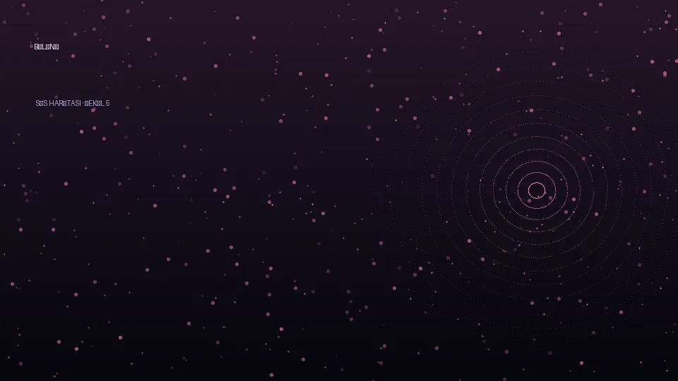
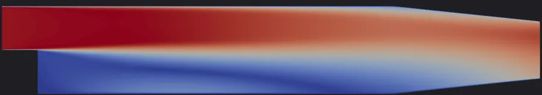
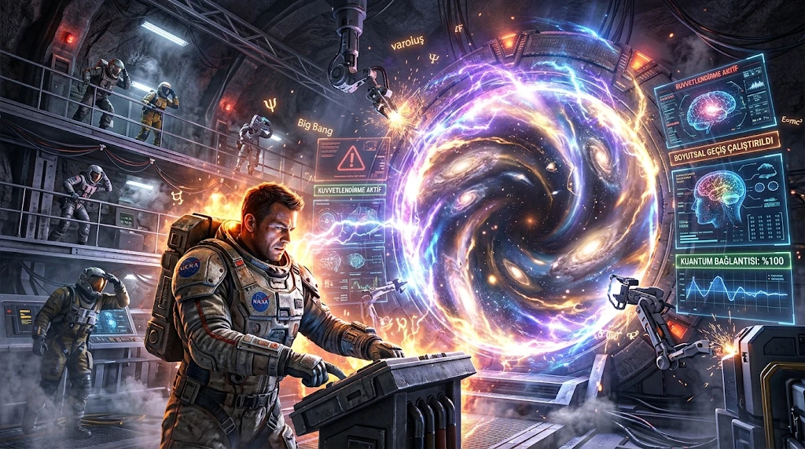
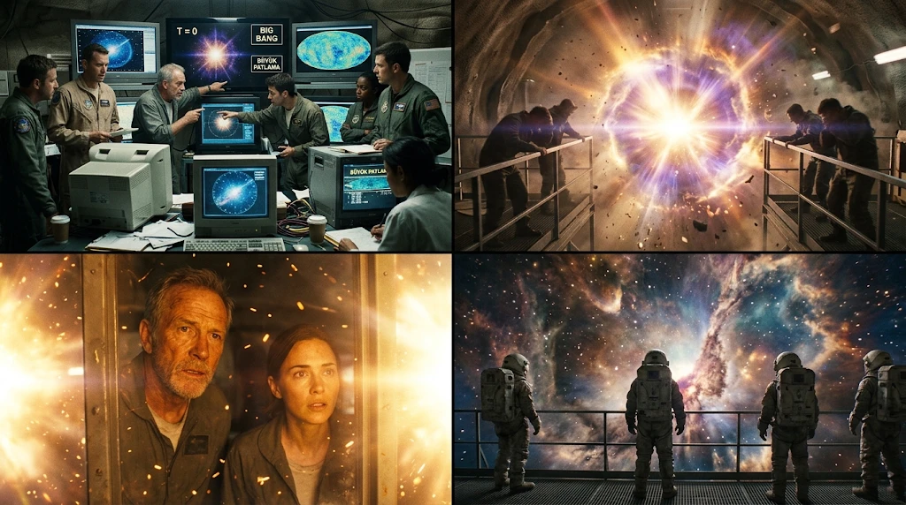
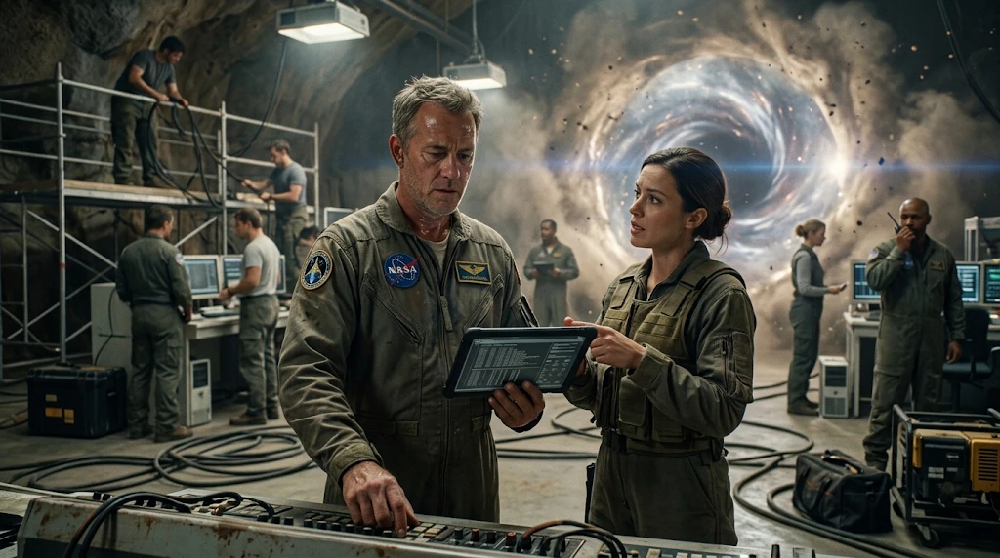
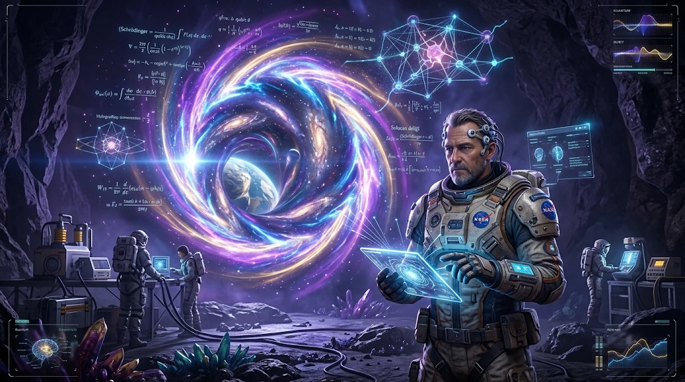

<script>
(function(){
const KEY='varolus-denklemi-w1';
const PREF=Object.assign({rm:!!(window.matchMedia&&matchMedia('(prefers-reduced-motion:reduce)').matches),fs:1,hc:false,cb:false,subbg:!!(window.matchMedia&&matchMedia('(pointer:coarse)').matches),easy:false,autorun:false,quality:null,vox:true,erode:true},(()=>{try{return JSON.parse(localStorage.getItem('vd_prefs')||'{}')}catch(e){return{}}})());
function prefSave(){try{localStorage.setItem('vd_prefs',JSON.stringify(PREF))}catch(e){}}
function prefApply(){if(window.GFX&&GFX.setMotionMul)GFX.setMotionMul(PREF.rm?.33:1);document.body.classList.toggle('rm',!!PREF.rm);document.body.classList.toggle('hc',!!PREF.hc);document.body.classList.toggle('cb',!!PREF.cb);document.body.classList.toggle('subbg',!!PREF.subbg);document.documentElement.setAttribute('data-fs',String(PREF.fs||1));if(window.GFX&&GFX.setMotion)GFX.setMotion(!PREF.rm);if(typeof applyGP==='function'&&window.GFX&&GFX.ok)try{applyGP()}catch(e){}}
const $=s=>document.querySelector(s);
const esc=s=>String(s??'').replace(/[&<>"]/g,c=>({'&':'&amp;','<':'&lt;','>':'&gt;','"':'&quot;'}[c]));
const R=Object.fromEntries(GAME.realms.map(r=>[r.id,r]));if(GAME.realm7)R.bellek=GAME.realm7;
const PATHS={gozlemci:{name:'Gözlemci',c:'var(--h-kuantum)'},kopru:{name:'Köprü',c:'var(--star)'},sessizlik:{name:'Sessizlik',c:'var(--h-anlam)'}};
const USES=[{k:'kopru',t:'Paylaş',d:'Platformdaki insanlara anlat.'},{k:'gozlemci',t:'Kaydet',d:'Arşivle, daha fazla kanıt topla.'},{k:'sessizlik',t:'İçinde taşı',d:'Kimseye söyleme. Önce kendin anlamlandır.'}];
function fresh(){return{started:false,cal:false,cal2:{},done:{},told:{},path:{gozlemci:0,kopru:0,sessizlik:0},facts:[],visited:{},use:{},ans:{},ending:null,logs:{},earth:0,earthSeen:0,totem:null,caught:0,lastSafe:null,lastUse:null,lanternTold:false,fuel:0,integ:3,frags:{},hal:{},ze:{},zt:{},radioSeen:-1,coreHal:false,rec7:false,sideN:0,quests:{},integMax:3,fuelBonus:0,mini:{},pages:[],hist:[],playT:0,shots:0,wxLog:[],wiki:{},ach:{},tut:0,tutDone:false,stormDone:false,stormFails:0,lantT:0,endings:{},tour:1,epi:{},rec0:false,ngIntro:false,stoneIn:{},traceSeen:false,stones:{},stoneLikes:{},stoneDay:null,stoneN:0,stoneFirst:false,canteen:null,canteenHint:false,canteenAfter:{},isikSeen:false,isikTold:false,isikStage:{},isikChoice:null,isikCrew:{},talkN:{},fakeSeen:false,fakeChosen:null,fakeGone:false,laleGone:false,fakeNotice:{},fakeRadio:false,fakeTold:false,clockSeen:{},awayNoted:{},guest:null,motorSeen:false,motorFilled:0,nil:{},nilDone:false,speed:null,issBest:null,issSeen:false,rehearsed:0,erodeIntro:false,eggs:{},guessDone:{},fogReader:false,semaScene:null,semaGone:false,semaStay:false,semaCrew:{},seisSeen:false,seisBest:null,pred:{},predRes:{},predIntro:false,report:{},reportIntro:false,reportCrew:{},rec9:null,notes:[],noteKeys:{},chat:{},letters:{},mirrorHit:{},gate7Told:false,bellekIn:false,kaan7:false,coreSeen:false,coreTold:{},flowSeen:false,flowQuiz:0,vardiya:{},sinyal:null,rec8:false,daily:null,dailyBest:{}}}
function load(){try{const v=localStorage.getItem(KEY);return v?JSON.parse(v):null}catch(e){return null}}
function save(){try{localStorage.setItem(KEY,JSON.stringify(S));if(S.started)localStorage.setItem('vd_last',String(Date.now()))}catch(e){}}
let S=fresh(),cur='hub',mode='title',near=null,dlg=null,gate=null,drawer=false,armed=false,keys={},joy={x:0,z:0},ovBack=null;

/* ---------- audio ---------- */
const AUD={ctx:null,on:false,o:[],start(){const C=window.AudioContext||window.webkitAudioContext;if(!C)return false;const x=this.ctx=new C();const g=this.g=x.createGain();g.gain.value=0;g.connect(x.destination);const lp=this.lp=x.createBiquadFilter();lp.type='lowpass';lp.frequency.value=700;lp.Q.value=4;lp.connect(g);
  [[1,'sine',.5],[1.5,'sine',.22],[2.005,'triangle',.07],[.5,'sine',.4]].forEach(([m,ty,v])=>{const o=x.createOscillator();o.type=ty;o.frequency.value=55*m;const og=x.createGain();og.gain.value=v;o.connect(og);og.connect(lp);o.start();this.o.push({o,m})});
  const lfo=x.createOscillator();lfo.frequency.value=.06;const lg=x.createGain();lg.gain.value=380;lfo.connect(lg);lg.connect(lp.frequency);lfo.start();g.gain.linearRampToValueAtTime(.12,x.currentTime+2.5);return true},
 toggle(){if(!this.ctx)this.on=this.start();else{this.on=!this.on;this.g.gain.linearRampToValueAtTime(this.on?.12:0,this.ctx.currentTime+.8)}return this.on},
 set(f){if(!this.ctx)return;this.o.forEach(x=>x.o.frequency.linearRampToValueAtTime(f*x.m,this.ctx.currentTime+2.5))},
 whoosh(d){if(!this.ctx||!this.on)return;const x=this.ctx,n=x.sampleRate*d,b=x.createBuffer(1,n,x.sampleRate),a=b.getChannelData(0);for(let i=0;i<n;i++)a[i]=Math.random()*2-1;const s=x.createBufferSource();s.buffer=b;const bp=x.createBiquadFilter();bp.type='bandpass';bp.Q.value=1.4;bp.frequency.setValueAtTime(180,x.currentTime);bp.frequency.exponentialRampToValueAtTime(3200,x.currentTime+d*.9);const g=x.createGain();g.gain.setValueAtTime(0,x.currentTime);g.gain.linearRampToValueAtTime(.3,x.currentTime+d*.7);g.gain.linearRampToValueAtTime(0,x.currentTime+d);s.connect(bp);bp.connect(g);g.connect(x.destination);s.start()},
 tone(f=440,dur=.26){if(!this.ctx||!this.on)return;const x=this.ctx,o=x.createOscillator(),g=x.createGain();o.frequency.value=f;o.type='triangle';g.gain.setValueAtTime(.0001,x.currentTime);g.gain.exponentialRampToValueAtTime(.09,x.currentTime+.02);g.gain.setValueAtTime(.09,x.currentTime+dur*.6);g.gain.exponentialRampToValueAtTime(.0005,x.currentTime+dur);o.connect(g);g.connect(x.destination);o.start();o.stop(x.currentTime+dur+.05)},
 blip(f=660){if(!this.ctx||!this.on)return;const x=this.ctx,o=x.createOscillator(),g=x.createGain();o.frequency.value=f;o.type='sine';g.gain.setValueAtTime(.08,x.currentTime);g.gain.exponentialRampToValueAtTime(.001,x.currentTime+.25);o.connect(g);g.connect(x.destination);o.start();o.stop(x.currentTime+.3)}};

/* ---------- MUS: procedural music engine (spec: GAME.audio) ---------- */
const MUS={x:null,on:false,cur:null,layer:null,next:0,chordI:0,arpI:0,timer:null,duckG:null,halT:0,
 NOTE:{C:0,'C#':1,Db:1,D:2,'D#':3,Eb:3,E:4,F:5,'F#':6,Gb:6,G:7,'G#':8,Ab:8,A:9,'A#':10,Bb:10,B:11},
 f(m){return 440*Math.pow(2,(m-69)/12)},
 init(){if(this.x||!AUD.ctx)return;const x=this.x=AUD.ctx;const sp=GAME.audio||{};const M=sp.master||{};
  this.out=x.createGain();this.out.gain.value=.55;const comp=x.createDynamicsCompressor();comp.threshold.value=-14;comp.ratio.value=6;comp.attack.value=.01;comp.release.value=.25;const hp=x.createBiquadFilter();hp.type='highpass';hp.frequency.value=25;
  this.duckG=x.createGain();this.out.connect(this.duckG);this.duckG.connect(hp);hp.connect(comp);comp.connect(x.destination);
  const rv=x.createConvolver();const dec=(M.reverb&&M.reverb.decay)||5;const n=Math.floor(x.sampleRate*dec),b=x.createBuffer(2,n,x.sampleRate);for(let c=0;c<2;c++){const ch=b.getChannelData(c);for(let i=0;i<n;i++)ch[i]=(Math.random()*2-1)*Math.pow(1-i/n,2.6)}rv.buffer=b;this.wet=x.createGain();this.wet.gain.value=(M.reverb&&M.reverb.wet)||.3;this.out.connect(rv);rv.connect(this.wet);this.wet.connect(this.duckG);this.on=true},
 spec(id){const A=GAME.audio||{};return (A.realms&&A.realms[id])||(A.endings&&A.endings[id])||null},
 realm(id,fade){if(!this.x){if(!AUD.ctx)return;this.init()}if(this.cur===id)return;this.cur=id;const sp=this.spec(id);this.stopLayer(fade??2.5);if(!sp)return;this.buildLayer(sp)},
 stopLayer(fade){const L=this.layer;if(!L)return;const x=this.x,t=x.currentTime;L.g.gain.cancelScheduledValues(t);L.g.gain.setValueAtTime(L.g.gain.value,t);L.g.gain.linearRampToValueAtTime(0,t+fade);setTimeout(()=>{try{L.oscs.forEach(o=>o.stop())}catch(e){}try{L.g.disconnect()}catch(e){}},fade*1000+200);this.layer=null;clearInterval(this.timer);this.timer=null},
 buildLayer(sp){const x=this.x,t=x.currentTime;const g=x.createGain();g.gain.value=0;g.connect(this.out);const root=48+(this.NOTE[sp.key]||0);const bpm=sp.bpm||60,beat=60/bpm;const L=this.layer={sp,g,oscs:[],root,beat,chords:sp.chords&&sp.chords.length?sp.chords:[[0,7]],padG:null,arpG:null,bassG:null,noiseG:null};
  const pad=sp.pad||{};const lp=x.createBiquadFilter();lp.type='lowpass';lp.frequency.value=pad.cutoffHz||800;lp.Q.value=.8;const padG=L.padG=x.createGain();padG.gain.value=pad.gain??.2;lp.connect(padG);padG.connect(g);L.lp=lp;L.padOsc=[];
  const lfo=sp.lfo||{};if(lfo.rateHz){const o=x.createOscillator();o.frequency.value=Math.min(lfo.rateHz,8);const lg=x.createGain();lg.gain.value=(pad.cutoffHz||800)*(lfo.depth||.2)*.6;o.connect(lg);lg.connect(lp.frequency);o.start();L.oscs.push(o)}
  for(let i=0;i<3;i++){const o=x.createOscillator();o.type=pad.wave||'sine';const og=x.createGain();og.gain.value=0;o.connect(og);og.connect(lp);o.start();L.oscs.push(o);L.padOsc.push({o,og,det:(i-1)*(pad.detuneCents||6)})}
  const bass=sp.bass||{};const bo=x.createOscillator();bo.type=bass.wave||'sine';const bg=L.bassG=x.createGain();bg.gain.value=bass.gain??.15;bo.connect(bg);bg.connect(g);bo.start();L.oscs.push(bo);L.bass=bo;L.bassOct=bass.octave??-1;
  const nz=sp.noise||{};if(nz.type&&nz.type!=='none'&&(nz.gain||0)>0){const n=x.sampleRate*3,b=x.createBuffer(1,n,x.sampleRate),c=b.getChannelData(0);let last=0;for(let i=0;i<n;i++){const w=Math.random()*2-1;last=nz.type==='wind'||nz.type==='hum'?(last+.02*w)/1.02:w;c[i]=last*(nz.type==='wind'?3.5:1)}const s=x.createBufferSource();s.buffer=b;s.loop=true;const f=x.createBiquadFilter();f.type=nz.type==='crackle'||nz.type==='rain'?'bandpass':'lowpass';f.frequency.value=nz.cutoffHz||600;f.Q.value=nz.type==='crackle'?8:.7;const ng=L.noiseG=x.createGain();ng.gain.value=nz.gain;s.connect(f);f.connect(ng);ng.connect(g);s.start();L.oscs.push(s);if(nz.type==='wind'){const wl=x.createOscillator();wl.frequency.value=.08;const wg=x.createGain();wg.gain.value=(nz.cutoffHz||600)*.5;wl.connect(wg);wg.connect(f.frequency);wl.start();L.oscs.push(wl)}if(nz.type==='crackle'){L.crackle=ng;ng.gain.value=0}}
  const arp=sp.arp||{};L.arp=arp.on?arp:null;if(L.arp){const ag=L.arpG=x.createGain();ag.gain.value=arp.gain??.1;ag.connect(g);const dl=x.createDelay(1);dl.delayTime.value=beat*.75;const fb=x.createGain();fb.gain.value=.35;ag.connect(dl);dl.connect(fb);fb.connect(dl);dl.connect(g);L.arpRate=arp.rate==='1/16'?beat/4:arp.rate==='1/4'?beat:beat/2}
  g.gain.linearRampToValueAtTime(1,t+(pad.attack||2));this.chordI=0;this.arpI=0;this.next=t+.1;this.arpNext=t+.1;this.chord(L,this.next);this.timer=setInterval(()=>this.tick(),120)},
 chord(L,at){const x=this.x,sp=L.sp,pad=sp.pad||{};const ch=L.chords[this.chordI%L.chords.length];this.chordI++;const rel=pad.release||3,att=pad.attack||1.5;
  L.padOsc.forEach((p,i)=>{const semi=ch[i%ch.length]+(i>=ch.length?12:0);const f=this.f(L.root+semi+12);p.o.frequency.setTargetAtTime(f,at,.4);p.o.detune.setTargetAtTime(p.det+(this.halT>0?-500:0),at,.5);p.og.gain.cancelScheduledValues(at);p.og.gain.setValueAtTime(p.og.gain.value,at);p.og.gain.linearRampToValueAtTime(.25,at+att);p.og.gain.linearRampToValueAtTime(.08,at+att+rel)});
  L.bass.frequency.setTargetAtTime(this.f(L.root+ch[0]+12*L.bassOct),at,.3);L.chordSemis=ch},
 tick(){const L=this.layer;if(!L||!this.x)return;const x=this.x,t=x.currentTime;const bar=L.beat*8;while(this.next<t+.5){this.next+=bar;this.chord(L,this.next)}
  if(L.arp){const pat=L.arp.pattern||[0,7,12];while(this.arpNext<t+.4){const at=this.arpNext;this.arpNext+=L.arpRate;const sk=(this.cur==='kuantum'&&Math.random()<.3)||(this.inZone)||this.halT>0;if(!sk){const semi=pat[this.arpI%pat.length]+(this.cur==='kuantum'&&Math.random()<.2?12:0);this.arpI++;const o=x.createOscillator();o.type=L.arp.wave||'triangle';o.frequency.value=this.f(L.root+semi+24);const og=x.createGain();og.gain.setValueAtTime(0,at);og.gain.linearRampToValueAtTime(.5,at+.012);og.gain.exponentialRampToValueAtTime(.001,at+Math.max(.08,L.arpRate*1.6));o.connect(og);og.connect(L.arpG);o.start(at);o.stop(at+L.arpRate*2+.1)}}}
  if(L.crackle){L.crackle.gain.setTargetAtTime(Math.random()<.12?(L.sp.noise.gain||.08):0,t,.03)}
  if(L.padG){const want=(L.sp.pad&&L.sp.pad.gain||.2)*(this.inZone?.5:1)*(this.dlg?.65:1);L.padG.gain.setTargetAtTime(want,t,.6)}if(L.bassG)L.bassG.gain.setTargetAtTime(this.halT>0?0:(L.sp.bass&&L.sp.bass.gain||.15),t,.5)},
 duck(db,ms){if(!this.duckG)return;const x=this.x,t=x.currentTime,v=Math.pow(10,db/20);this.duckG.gain.cancelScheduledValues(t);this.duckG.gain.setValueAtTime(v,t);this.duckG.gain.linearRampToValueAtTime(1,t+ms/1000)},
 halluc(ms){if(!this.x)return;this.halT=ms;const L=this.layer;if(L){const t=this.x.currentTime;L.padOsc.forEach(p=>p.o.detune.setTargetAtTime(p.det-500,t,1));L.lp.frequency.setTargetAtTime(900,t,.8);this.wet.gain.setTargetAtTime(.8,t,.5);const v=this.x.createOscillator();v.frequency.value=6.5;const vg=this.x.createGain();vg.gain.value=40;v.connect(vg);L.padOsc.forEach(p=>vg.connect(p.o.detune));v.start();v.stop(t+ms/1000);}
  setTimeout(()=>{this.halT=0;const L2=this.layer;if(L2){const t=this.x.currentTime;L2.padOsc.forEach(p=>p.o.detune.setTargetAtTime(p.det,t,1));L2.lp.frequency.setTargetAtTime((L2.sp.pad&&L2.sp.pad.cutoffHz)||800,t,1);this.wet.gain.setTargetAtTime((GAME.audio.master&&GAME.audio.master.reverb&&GAME.audio.master.reverb.wet)||.3,t,1)}},ms)},
 tone(f,ms,wave,gain,to){if(!this.x||!AUD.on)return;const x=this.x,t=x.currentTime,o=x.createOscillator(),g=x.createGain();o.type=wave||'sine';o.frequency.setValueAtTime(f,t);if(to)o.frequency.exponentialRampToValueAtTime(to,t+ms/1000);g.gain.setValueAtTime(gain||.2,t);g.gain.exponentialRampToValueAtTime(.001,t+ms/1000);o.connect(g);g.connect(this.out);o.start(t);o.stop(t+ms/1000+.05)},
 noise(ms,gain,type){if(!this.x||!AUD.on)return;const x=this.x,n=x.sampleRate*ms/1000,b=x.createBuffer(1,n,x.sampleRate),c=b.getChannelData(0);let l=0;for(let i=0;i<n;i++){const w=Math.random()*2-1;l=type==='brown'?(l+.05*w)/1.05:w;c[i]=(type==='brown'?l*6:w)*(1-i/n)}const s=x.createBufferSource();s.buffer=b;const g=x.createGain();g.gain.value=gain||.3;s.connect(g);g.connect(this.out);s.start()},
 ev(name){const E=(GAME.audio&&GAME.audio.events||{})[name]||{};const x=this.x;if(!x||!AUD.on)return;switch(name){
  case 'telegraph':for(let i=0;i<3;i++)setTimeout(()=>this.tone(E.freqHz||1760,60,E.wave||'square',.12),i*110);break;
  case 'lunge':this.noise(220,.35,'white');this.tone(220,180,'sawtooth',.15,90);break;
  case 'hit':this.tone(E.freqHz||65,E.durMs||420,'sine',.9,E.sweepToHz||30);this.noise(E.durMs||420,.5,'brown');this.duck(-12,300);break;
  case 'point':(E.notes||[0,7,12]).forEach((s,i)=>setTimeout(()=>{this.tone(this.f(60+s),E.durMs||1400,E.wave||'sine',.25);setTimeout(()=>this.tone(this.f(60+s),900,'sine',.1),E.delayMs||380)},i*80));break;
  case 'log':this.noise(900,.12,'white');this.tone(1200,40,'square',.1);break;
  case 'fragment':(E.notes||[0,3,7,10]).forEach((s,i)=>setTimeout(()=>this.tone(this.f(55+s),1600,'triangle',.22),i*140));this.noise(1200,.15,'brown');break;
  case 'insight':(E.chord||[0,4,7,11]).forEach(s=>this.tone(this.f(60+s),E.durMs||3200,'sine',.18));break;
  case 'gateFire':for(let i=0;i<6;i++)setTimeout(()=>this.tone(900+i*120,40,'square',.08),i*90);setTimeout(()=>this.tone(60,1400,'sawtooth',.25,3200),500);break;
  case 'tunnel':{const d=(E.durMs||5000)/1000;const t=x.currentTime;for(let i=0;i<4;i++){const o=x.createOscillator();o.type='sawtooth';o.frequency.setValueAtTime(80,t);o.frequency.exponentialRampToValueAtTime(900,t+d);o.detune.value=(i-1.5)*25;const g=x.createGain();g.gain.setValueAtTime(0,t);g.gain.linearRampToValueAtTime(.08,t+d*.5);g.gain.linearRampToValueAtTime(0,t+d);o.connect(g);g.connect(this.out);o.start(t);o.stop(t+d)}break}
  case 'caught':this.tone(110,1200,'sawtooth',.3,28);this.noise(1200,.5,'brown');this.duck(-18,1200);break;
  case 'zoneEnter':this.tone(E.droneHz||41.2,2500,'sine',.3);this.tone(41.2*Math.pow(2,6/12),2500,'sine',.12);break;
  case 'weather':this.noise(2500,.18,'brown');this.tone(70,2500,'sine',.2,45);break;}},
 setZone(v){this.inZone=v},setDlg(v){this.dlg=v},
 ending(k){this.realm(k,3)},
 motif(id){if(!this.x||!AUD.on)return;const M=((GAME.story8||{}).motifs||{})[id];if(!M||!M.n)return;const x=this.x,t0=x.currentTime+.03;const root=(this.layer?this.layer.root:57)+12;let at=t0;M.n.forEach((semi,i)=>{const o=x.createOscillator(),g=x.createGain();o.type=M.wave||'sine';o.frequency.value=this.f(root+semi);const dur=.11*((M.d&&M.d[i])||1);g.gain.setValueAtTime(.0001,at);g.gain.exponentialRampToValueAtTime(.05,at+.02);g.gain.exponentialRampToValueAtTime(.0005,at+dur+.08);o.connect(g);g.connect(this.out||x.destination);o.start(at);o.stop(at+dur+.1);at+=dur})}};

const FREQ={bellek:66.2,hub:55,cekirdek:82.4,baslangic:41.2,kuantum:61.7,gezegen:49,bilinc:73.4,anlam:65.4,yuva:58.3};

/* ---------- island defs ---------- */
const doneCount=()=>GAME.realms.filter(r=>S.done[r.id]).length;
function hubDef(){const h=GAME.hub,n=GAME.realms.length,gates=GAME.realms.map((r,i)=>{const a=-Math.PI/2+.5+i*(2*Math.PI-1)/(n-1);return{id:r.id,to:r.id,name:r.name,sub:r.sub,hex:r.hex,pos:[Math.cos(a)*h.gateRing,Math.sin(a)*h.gateRing]}});
 gates.push({id:'core',to:'cekirdek',name:'Çekirdek',hex:'#f3c870',pos:[0,-h.gateRing-2],locked:doneCount()<n});if(GAME.realm7)gates.push({id:'bellek',to:'bellek',name:((GAME.story7||{}).gate||{}).name||'Yedinci Geçit',sub:GAME.realm7.sub,hex:GAME.realm7.hex,pos:[0,h.gateRing+6],locked:!gate7Open()});
 const npcs=h.npcs.filter(x=>!(S.semaGone&&x.id==='sema')).map(x=>({...GAME.people[x.id],...x}));if(canteenReady()){const T=GAME.canteenSeats||[];CANTEEN_IDS.forEach((id,i)=>{const x=npcs.find(n=>n.id===id);if(x&&T[i]){x.pos=T[i];x.wander=0}})}const radio=h.radio;const NG=(GAME.story3||{}).ngPlus||{};if((doneCount()>=3||S.tour>=2)&&!S.laleGone)npcs.push({id:'lale',pos:[-16,-22],wander:2,...GAME.people.lale,...(S.tour>=2&&NG.lale?{start:NG.lale}:{})});if(GAME.story14&&GAME.people.isik&&S.radioSeen>=2&&S.tour<2)npcs.push({...GAME.people.isik,id:'isik',pos:[-20,-2],wander:3});if(GAME.story13&&S.done.bilinc&&S.radioSeen>=1&&!S.fakeGone&&!S.fakeChosen&&S.tour<2)npcs.push({...GAME.people.lale,id:'lale2',name:GAME.story13.fake.name||'Lale',role:GAME.story13.fake.role||'yankı · tam',pos:[16,-20],wander:2});
 const dom=dominantPath();let props=h.props.slice(),cave=h.cave;if(dom==='kopru')props=props.concat([{type:'console',n:3,hex:'#f3c870',min:6,max:14,solid:1}]);if(dom==='gozlemci')props=props.concat([{type:'shelf',n:6,hex:'#7fd6ff',min:14,max:24}]);if(dom==='sessizlik')cave={lights:h.cave.lights.map(l=>[l[0],l[1],l[2],'#8a7a9a'])};
 const days=S.earth/86400;if(days>=7)props=props.concat([{type:'tree',n:1,hex:'#4a8a4a',min:12,max:13,solid:.6}]);if(days>=1&&!dom)cave={lights:h.cave.lights.map(l=>[l[0],l[1],l[2],'#9fc8ff'])};
 const apod=h.apod,core=h.core,flowmap=h.flowmap;
 const logs=S.tour>=2&&!S.rec0?[{id:'log',pos:[-27,19],hex:'#ff7cb9',name:'Kayıt Sıfır',done:false}]:[];
 return{...h,gates,npcs,props,cave,radio,apod,core,flowmap,seis:h.seis,pendulum:(GAME.story15||{}).foucault?h.pendulum:null,logs}}
function sealed(id){const r=R[id];if(!r||!S.done[id])return false;const v=S.visited[id]||{};return r.points.every(p=>v[p.id])&&r.figures.every(f=>v['f:'+f.id])&&!!S.logs[id]}
function dominantPath(){const o=['kopru','gozlemci','sessizlik'];const tot=o.reduce((a,k)=>a+S.path[k],0);if(!tot)return null;const b=o.reduce((b,k)=>S.path[k]>S.path[b]?k:b,o[0]);return S.path[b]*2>tot?b:null}
function realmDef(r){const v=S.visited[r.id]||{};const n=doneCount();return{...r.world,iss:(GAME.issPos||{})[r.id]?{pos:GAME.issPos[r.id],name:((GAME.story11||{}).iss||{}).name}:null,gates:[{id:'exit',to:'hub',name:'Dönüş Geçidi',hex:'#f3c870',pos:[0,34]}],points:r.points.map(p=>({...p,hex:r.hex,done:!!v[p.id]})),npcs:[...r.figures.map(f=>({...f})),...(r.comp&&GAME.people[r.comp]?[{...GAME.people[r.comp],id:r.comp,role:'yol arkadaşı',pos:[r.spawn[0]+2,r.spawn[1]+2],wander:0,follow:true}]:[])],logs:(r.logs||[]).map(l=>({...l,hex:r.hex,done:!!S.logs[r.id]})),photon:r.hex,flow:r.hex,zone:r.zone?{...r.zone,r:(r.zone.r||17)+(S.tour>=2?3:0),taken:!!S.frags[r.id]&&!(S.daily&&S.daily.on)}:null,echo:(S.sinyal&&S.sinyal.on&&!(S.daily&&S.daily.on)&&(GAME.echo||{})[r.id])?{pos:GAME.echo[r.id],done:!!S.sinyal.found[r.id],name:'Yankı direği'}:null,stone:((GAME.stonePos||{})[r.id]&&(GAME.story15||{}).stones&&!(S.daily&&S.daily.on))?{pos:GAME.stonePos[r.id],name:GAME.story15.stones.name}:null,letters:(r.letters||[]).map(l=>({...l,done:!!S.letters[l.id]})),glitches:r.mirror?[{pos:r.mirror.pos,mirror:true,hunter:true}]:[...(r.glitches||[]).slice(0,1).map(g=>({pos:g.pos||g})),...(r.zone?Array.from({length:S.tour>=2?(n<3?3:4):(n<3?2:3)},(_,i)=>{const an=i*2.1+.4,[zx,zz]=r.zone.pos;return{pos:[zx+Math.cos(an)*8,zz+Math.sin(an)*8],hunter:true}}):[])]}}
const GPT=[[2.6,10,.9,2.2],[2.8,11,.8,2.0],[3.0,12,.7,1.8],[3.0,12,.7,1.8],[3.2,13,.6,1.6],[3.4,14,.55,1.5]];function applyGP(){const g=GPT[Math.min(5,doneCount())];const k=S.tour>=2?1:0;const m=PREF.easy?.7:1;const dm=(S.daily&&S.daily.on&&S.daily.mod==='hizli'?1.3:1)*(doneCount()===0&&S.tour<2?.82:1);GFX.setGlitchParams({speed:(g[0]+.4*k)*m*dm,lunge:(g[1]+1*k)*m,tele:Math.max(.45,g[2]-.1*k)/m,wait:Math.max(1.2,g[3]-.3*k)/m})}
function fragCount(){return Object.keys(S.frags).filter(k=>k!=='bellek').length}
const logCount=()=>GAME.realms.filter(r=>S.logs[r.id]).length;
function gate7Open(){return fragCount()>=6&&!!S.rec8}
function coreDef(){const storm=!S.stormDone;return{...GAME.core.world,gates:[{id:'exit',to:'hub',name:'Dönüş Geçidi',hex:'#f3c870',pos:[0,26]}],npcs:[{...GAME.people.lale,id:'lale',pos:[0,-6],wander:0}],zone:storm?{pos:[0,0],r:40,name:'Sis Fırtınası',noFrag:true}:null,glitches:storm?[{pos:[18,14],hunter:true},{pos:[-18,12],hunter:true},{pos:[0,-24],hunter:true}]:[]}}
function defOf(id){return id==='hub'?hubDef():id==='cekirdek'?coreDef():realmDef(R[id])}
function hexOf(id){return id==='hub'||id==='cekirdek'?'#f3c870':R[id].hex}
function nameOf(id){return id==='hub'?GAME.hub.name:id==='cekirdek'?GAME.core.name:R[id].name}

/* ---------- labels ---------- */
let labels=[];
function buildLabels(){const box=$('#labels');box.innerHTML='';const I=GFX.island;labels=I.ents.map(e=>{const el=document.createElement('div');el.className='lbl'+(e.kind==='gate'?' portal':'');el.style.setProperty('--c',e.hex);box.appendChild(el);return{el,ent:e}});GFX.bindLabels(labels);updLabels()}
function updLabels(){labels.forEach(l=>{const e=l.ent;let s='';if(e.kind==='npc'&&e.follow){s=`<span class="n">${esc(e.name)}</span><span class="r">YOL ARKADAŞI</span>`}
 else if(e.kind==='npc'){const pr=e.id!=='lale'&&!R[cur]&&pendingLine(e.id);const qq=(GAME.story2.quests||[]).find(x=>x.giver===e.id);const qmark=qq&&(S.quests[qq.id]==='found'?'!':(!S.quests[qq.id]&&doneCount()>=qq.unlock)?'?':'');const has=qmark||(e.id==='sema'&&S.semaScene==='pending')||(pr&&(!S.lastDone||(pr===S.lastDone&&(BANG[pr]||[]).includes(e.id))));s=`<span class="n">${esc(e.name)}${has?`<span class="bang">${qmark||'!'}</span>`:''}</span><span class="r">${esc(e.role||'')}</span>`}
 else if(e.kind==='gate'){const st=e.locked?(e.id==='core'?`${doneCount()}/${GAME.realms.length} İÇGÖRÜ`:e.id==='bellek'?esc((((GAME.story7||{}).gate||{}).locked||'KİLİTLİ').toUpperCase()):'KİLİTLİ'):(e.id==='exit'?'HARİTAYA':S.done[e.to]?'İÇGÖRÜ ALINDI':'GEÇİT');s=`<span class="n">${esc(e.name)}</span><span class="r">${st}</span>`}
 else if(e.kind==='stone'){const ST=(GAME.story15||{}).stones||{};s=`<span class="n" style="color:#c9abff">${esc(ST.name||'Yankı Taşı')}</span><span class="r">${(S.stones||{})[cur]?'TAŞIN BURADA':'İZ BIRAK · OKU'}</span>`}
 else if(e.kind==='pendulum'){const FC=(GAME.story15||{}).foucault||{};s=`<span class="n" style="color:#f3c870">${esc(FC.title||'Foucault Sarkacı')}${S.mini.foucault?'':'<span class="bang">!</span>'}</span><span class="r">${S.mini.foucault?'ENLEM BULUNDU ✓':'DENEY'}</span>`}
 else if(e.kind==='log'){s=`<span class="n" style="color:var(--h-bilinc)">Lale’nin kaydı</span><span class="r">${e.done?'DİNLENDİ ✓':'SES KAYDI'}</span>`}
 else if(e.kind==='frag'){s=`<span class="n" style="color:var(--h-bilinc)">Kesik kayıt parçası</span><span class="r">BOZULMA SAHASI</span>`}
 else if(e.kind==='apod'){s=`<span class="n" style="color:#9fd8ff">Gökyüzü Terminali</span><span class="r">NASA APOD · CANLI</span>`}
 else if(e.kind==='letter'){s=`<span class="n" style="color:#ff9ad0">${esc(e.name)}</span><span class="r">${e.done?'OKUNDU ✓':'LALE’DEN MEKTUP'}</span>`}
 else if(e.kind==='core'){const C6=(GAME.story6||{}).core||{};s=`<span class="n" style="color:#7fd6ff">${esc(C6.name||'Motor Çekirdeği')}${S.coreSeen?'':'<span class="bang">!</span>'}</span><span class="r">${esc((C6.label||'').toUpperCase())}</span>`}
 else if(e.kind==='iss'){const IS=(GAME.story11||{}).iss||{};s=`<span class="n" style="color:#9fd8ff">${esc(IS.name||'Gözlem Güvertesi')}${S.issSeen?'':'<span class="bang">!</span>'}</span><span class="r">${esc((IS.label||'').toUpperCase())}</span>`}
 else if(e.kind==='seis'){const SS=(GAME.story10||{}).seis||{};s=`<span class="n" style="color:#9fe3a0">${esc(SS.name||'Sismograf')}${S.seisSeen?'':'<span class="bang">!</span>'}</span><span class="r">${esc((SS.label||'').toUpperCase())}</span>`}
 else if(e.kind==='flowmap'){const F6=(GAME.story6||{}).flow||{};s=`<span class="n" style="color:#ff9a5c">${esc(F6.name||'Sis Akış Haritası')}${S.flowSeen?'':'<span class="bang">!</span>'}</span><span class="r">${esc((F6.label||'').toUpperCase())}</span>`}
 else if(e.kind==='radio'){const st=doneCount()<2?0:doneCount()<4?1:doneCount()<6?2:3;s=`<span class="n" style="color:#ffb347">Bakanlık telsizi${(S.radioSeen<st||(S.sinyal&&S.sinyal.on&&Object.keys(S.sinyal.found).length>=3&&!S.rec8))?'<span class="bang">!</span>':''}</span><span class="r">${['72 SAAT','48 SAAT','24 SAAT','SÜRE DOLDU'][st]}</span>`}
 else if(e.kind==='glitch'){s=`<span class="n" style="color:var(--bad)">▲ BOZULMA</span><span class="r">MOTOR’UN BİLMEDİĞİ YER</span>`}
 else{s=`<span class="n">${esc(e.name)}</span><span class="r">${e.done?'KAYDEDİLDİ ✓':'YANKI NOKTASI'}</span>`}l.el.innerHTML=s})}

/* ---------- UI ---------- */
const TQ={q:[],cur:null,until:0};
function thought(t,who,prio){if(!t||typeof t!=='string')return;prio=prio??(who?1:2);if(mode==='dialog'){if(!TQ.q.some(x=>x.t===t)&&TQ.q.length<6)TQ.q.push({t,who,prio});return}const now=Date.now();const el=$('#thought');
 if(TQ.cur&&now<TQ.until-900&&prio<=TQ.cur.prio){if(prio===1&&TQ.q.length>=2)return;if(!TQ.q.some(x=>x.t===t))TQ.q.push({t,who,prio});TQ.q.sort((x,y)=>y.prio-x.prio);return}
 const dur=Math.min(9000,2600+t.length*45);TQ.cur={t,who,prio};{let id='arel';if(who){const nm=String(who).toLowerCase();const pe=Object.entries(GAME.people).find(([k,p])=>p.name&&nm.includes(p.name.toLowerCase().split(' ')[0]));id=pe?pe[0]:(nm.includes('motor')?'motor':nm.includes('rehber')?'rehber':'arel')}else{const mm=/^([A-ZÇĞİÖŞÜ]+)(?:\s*\([^)]*\))?:/.exec(t);if(mm){const nm=mm[1].toLowerCase();const pe=Object.entries(GAME.people).find(([k,p])=>p.name&&p.name.toLowerCase().startsWith(nm.slice(0,4)));id=pe?pe[0]:(nm.startsWith('motor')?'motor':nm.startsWith('koro')?'lale':'arel')}}if(prio>=2||who)VOX.speak(t,id)}TQ.until=now+dur;el.innerHTML=`${who?`<span>${esc(who)}</span>`:''}<b>${esc(t)}</b>`;el.classList.add('on');clearTimeout(thought.t);
 thought.t=setTimeout(()=>{el.classList.remove('on');TQ.cur=null;const n=TQ.q.shift();if(n)setTimeout(()=>thought(n.t,n.who,n.prio),500)},dur)}
function thoughtFlush(){if(TQ.cur||mode==='dialog')return;const n=TQ.q.shift();if(n)setTimeout(()=>thought(n.t,n.who,n.prio),600)}
function thoughtClear(){TQ.q.length=0;TQ.cur=null;clearTimeout(thought.t);$('#thought').classList.remove('on');VOX.stop()}
function toast(b,s){const t=$('#toast');t.innerHTML=`<b>${esc(b)}</b>${s?`<span>${esc(s)}</span>`:''}`;t.classList.add('on');clearTimeout(toast.t);toast.t=setTimeout(()=>t.classList.remove('on'),2600)}
function setLoc(){const d=id=>id==='hub'?GAME.hub.loc:id==='cekirdek'?GAME.core.loc:R[id].loc;$('#loc').innerHTML=`<b>${esc(nameOf(cur).toUpperCase())}</b> · ${esc(d(cur))}`;
 $('#dots').innerHTML=GAME.realms.map(r=>`<i class="${S.done[r.id]?'on':''}${sealed(r.id)?' sealed':''}" style="--c:${r.hex}" title="${esc(r.name)}"></i>`).join('');const dom=dominantPath();const pb=$('#pathBtn');if(pb){pb.hidden=!dom;if(dom){pb.textContent=PATHS[dom].name;pb.style.color=PATHS[dom].c;pb.style.borderColor=PATHS[dom].c}}document.documentElement.style.setProperty('--acc',hexOf(cur))}
function objectives(){const o=$('#obj');if(mode==='title'){o.hidden=true;return}o.hidden=false;
 if(cur==='hub'){const n=doneCount(),tot=GAME.realms.length;const pend=GAME.hub.npcs.filter(x=>pendingLine(x.id)).length;
  o.innerHTML=`<p class="eyebrow">Görev${S.tour>=2?' · İkinci Tur':''}</p><b>${n>=tot?'Çekirdek açıldı':'Altı geçidi gez'}</b>${ROOM.count()?(ROOM.local?`<p class="note">${esc(((((GAME.story16||{}).local||{}).traceLine)||'{n} iz tesiste').replace('{n}',ROOM.count()))}</p>`:`<p class="note">${ROOM.count()} ${esc(((GAME.story4||{}).presence||{}).ghost||'gözlemci')} daha tesiste</p>`):''}${tutHtml()}${S.tour>=2&&!S.rec0?`<p class="note">${esc(((GAME.story3||{}).ngPlus||{}).hidden7?GAME.story3.ngPlus.hidden7.hint:'')}</p>`:''}<ul><li class="${n>=tot?'ok':''}">${n}/${tot} içgörü toplandı</li>${pend?`<li>${pend} kişi seninle konuşmak istiyor</li>`:''}${n>=3&&!S.ending?'<li>Platformun kıyısında biri bekliyor</li>':''}${(()=>{const qs=GAME.story2.quests||[];const f=qs.filter(q=>S.quests[q.id]==='found').length,g=qs.filter(q=>!S.quests[q.id]&&doneCount()>=q.unlock).length;return (f?`<li>${f} görev cevabı teslim edilmeyi bekliyor</li>`:'')+(g?`<li>${g} kişinin sana sorusu var (?)</li>`:'')})()}</ul>`}
 else if(cur==='cekirdek'){o.innerHTML=`<p class="eyebrow">Görev</p><b>${storm?'Sisin içinden Lale’ye ulaş':'Lale\'yle konuş'}</b>`}
 else{const r=R[cur],v=S.visited[cur]||{};const pts=r.points.filter(p=>v[p.id]).length,figs=r.figures.filter(f=>v['f:'+f.id]).length;const ok=pts>=r.points.length&&figs>=r.figures.length;
  o.innerHTML=`<p class="eyebrow">Görev · ${esc(r.name)}</p><b>${ok?'Dönüş Geçidi’ne git':esc(r.title||'Boyutu keşfet')}</b><ul><li class="${pts>=r.points.length?'ok':''}">Yankı noktaları ${pts}/${r.points.length}</li><li class="${figs>=r.figures.length?'ok':''}">İnsanlarla konuş ${figs}/${r.figures.length}</li><li class="${S.logs[cur]?'ok':''}">Lale’nin kaydı ${S.logs[cur]?'bulundu':'(isteğe bağlı)'}</li>${r.zone?`<li class="${S.frags[cur]?'ok':''}" style="color:var(--h-bilinc)">${S.frags[cur]?'Kesik parça alındı':'Kesik parça: Bozulma Sahası’nın ortasında (tehlikeli, isteğe bağlı)'}</li>`:''}${r.letters?`<li class="${Object.keys(S.letters).length>=3?'ok':''}" style="color:#ff9ad0">Lale’nin mektupları ${Object.keys(S.letters).length}/3</li>`:''}${r.mirror?'<li style="color:var(--bad)">Ayna Bozulma senin yolunu izler; durursan durur</li>':(S.ze[cur]?'':'<li style="color:var(--bad)">Bozulma Sahası’na girince saldırırlar; dışarıda izlerler</li>')}</ul>${tutHtml()}`}}
function prompt(){const p=$('#prompt');const ab=$('#act');if(!near||mode!=='play'){p.hidden=true;if(ab)ab.setAttribute('aria-label','Etkileşim');return}let t='';
 if(near.kind==='npc')t=`${near.name} ile konuş`;else if(near.kind==='log')t=near.done?'Kaydı yeniden dinle':'Lale’nin kaydını dinle';else if(near.kind==='point')t=near.done?`${near.name} · yeniden dinle`:`${near.name} · dinle`;else if(near.kind==='echo')t=near.done?'Yankı işaretlendi':'Yankıyı işaretle';else if(near.kind==='radio')t='Telsizi aç';else if(near.kind==='letter')t=near.done?'Mektubu yeniden oku':'Mektubu oku';else if(near.kind==='core')t=S.coreSeen?'Çekirdeğe yeniden bak':'Çekirdeğe bak';else if(near.kind==='flowmap')t='Akış haritasını aç';else if(near.kind==='seis')t='Sismografı aç';else if(near.kind==='iss')t='Gözlem güvertesini aç';else if(near.kind==='apod')t='Gökyüzü Terminali’ni aç';else if(near.kind==='frag')t='Kesik parçayı al';else t=near.locked?`${near.name} · kilitli`:(near.id==='exit'?'Dönüş geçidine gir':`${near.name} geçidine gir`);
 p.innerHTML=`<kbd>${GPAD.on?'A':'E'}</kbd> ${esc(t)}`;p.hidden=false}
const BANG={baslangic:['sema','deniz'],kuantum:['mira','deniz'],gezegen:['riza','hatice'],bilinc:['mira','kaan','zeynep'],anlam:['zeynep','riza'],yuva:['hatice','kaan']};
function pendingLine(id){const p=GAME.people[id];if(!p||!p.after)return null;const ld=S.lastDone;if(ld&&S.done[ld]&&!(S.told[id]||{})[ld]&&p.after[ld])return ld;for(const r of GAME.realms){if(S.done[r.id]&&!(S.told[id]||{})[r.id]&&p.after[r.id])return r.id}return null}

/* ---------- dialogue ---------- */
function startDlg(lines,ctx){if(ctx&&ctx.npc){S.talkN=S.talkN||{};S.talkN[ctx.npc]=(S.talkN[ctx.npc]||0)+1}if(CHAT.cur&&ctx.npc&&CHAT.cur.c.pair.includes(ctx.npc))CHAT.end();dlg={lines,i:0,ctx};mode='dialog';MUS.setDlg(true);GFX.setLocked(true);if(ctx.npc)GFX.setTalk(ctx.npc,true);GFX.focus(ctx.focus||ctx.npc||null);document.body.classList.add('cine');renderDlg()}
function renderDlg(){const d=$('#dialog');if(!dlg){d.hidden=true;return}const L=dlg.lines[dlg.i],c=dlg.ctx;const who=L.who==='a'?{name:'Arel',role:'',hex:'#f3c870',img:'assets/arel-lab.webp'}:L.who==='c'?{name:'Seçim',role:'',hex:c.hex}:L.who==='l'?{name:'Lale Vey',role:'ses kaydı · 2026',hex:'#ff7cb9'}:L.who==='k'?{name:'Kaan Erdem',role:'tesis güvenliği · telsiz',hex:GAME.people.kaan.hex}:L.who==='r'?{name:'Bakanlık Koordinasyon',role:'telsiz · şifreli kanal',hex:'#ffb347'}:L.who==='m'?{name:'Motor',role:'yapay zekâ · Çekirdek',hex:'#8fd3ff'}:L.who==='n'?{name:L.name||'',role:L.role||'',hex:L.hex||c.hex}:{name:c.name,role:c.role,hex:c.hex};
 GFX.speaker(L.who);{const id=L.who==='a'?'arel':L.who==='l'?'lale':L.who==='k'?'kaan':L.who==='r'?'bakanlik':L.who==='m'?'motor':L.who==='n'?(L.vid||null):L.who==='c'?null:(c.npc||c.voice||null);if(id&&dlg.lastWho!==id){dlg.lastWho=id;MUS.motif(id)}if(id&&L.t)VOX.speak(L.t,id,{clip:L.clip});else VOX.stop()}const av=who.img?`<div class="av" style="--c:${who.hex};background-image:url(${who.img});background-position:27% 15%;background-size:620%"></div>`:`<div class="av" style="--c:${who.hex}">${esc(who.name[0])}</div>`;
 let body='';if(L.ch&&dlg.pick==null){body=`<div class="ch">${L.ch.map((o,i)=>`<button data-act="pick" data-i="${i}"><kbd>${i+1}</kbd>${esc(o.t)}</button>`).join('')}</div>`}
 else if(L.ch){const o=L.ch[dlg.pick];body=`${o.res?`<p class="txt" style="font-size:17px;color:var(--dim)">${esc(o.res)}</p>`:''}${o.path&&PATHS[o.path]?`<p class="src" style="color:${PATHS[o.path].c}">Yolun: ${PATHS[o.path].name}</p>`:''}<div class="nx"><button class="btn primary" data-act="dnext">Devam <kbd style="margin-left:6px">⏎</kbd></button></div>`}
 else body=`<div class="nx"><button class="btn primary" data-act="dnext">${dlg.i<dlg.lines.length-1?'Devam':'Kapat'} <kbd style="margin-left:6px">⏎</kbd></button></div>`;
 d.innerHTML=`${av}<div><div class="who">${esc(who.name)}<span class="vox" style="visibility:hidden"><i></i><i></i><i></i><i></i></span>${who.role?`<small>${esc(who.role)}</small>`:''}</div><p class="txt${L.muffled?' muffled':''}">${esc(L.t)}</p>${L.src?`<p class="src">Kaynak: ${esc(L.src)}</p>`:''}${body}</div>`;d.hidden=false}
function dNext(){if(!dlg)return;const L=dlg.lines[dlg.i];if(L.ch&&dlg.pick==null)return;dlg.i++;dlg.pick=null;if(dlg.i>=dlg.lines.length){const c=dlg.ctx;dlg=null;renderDlg();mode='play';MUS.setDlg(false);TTS.stop();GFX.setLocked(false);GFX.focus(null);document.body.classList.remove('cine');if(c.npc)GFX.setTalk(c.npc,false);c.onEnd&&c.onEnd();objectives();prompt();save();thoughtFlush();return}renderDlg()}
function pathNote(k){const d=dominantPath();S.lastUse=k;if(d&&d!==S.lastDom){S.lastDom=d;toast('Yolun '+PATHS[d].name+'’ye kayıyor');}setLoc()}
function dPick(i){const L=dlg.lines[dlg.i];if(!L.ch||dlg.pick!=null)return;dlg.pick=i;const c=L.ch[i];if(c.path){S.path[c.path]++;pathNote(c.path)}AUD.blip(520);if(c.k&&dlg.ctx&&dlg.ctx.onPick)dlg.ctx.onPick(c.k);renderDlg()}

/* ---------- İkinci Tur (NG+) & posters ---------- */
function startTour2(){const keep={stoneIn:S.stoneIn,traceSeen:S.traceSeen,stones:S.stones,stoneLikes:S.stoneLikes,stoneDay:S.stoneDay,stoneN:S.stoneN,stoneFirst:S.stoneFirst,canteen:S.canteen,isikChoice:S.isikChoice,talkN:S.talkN,motorFilled:S.motorFilled,laleGone:S.laleGone,fakeGone:S.fakeGone,fakeChosen:S.fakeChosen,fakeSeen:S.fakeSeen,clockSeen:S.clockSeen,motorSeen:S.motorSeen,nil:S.nil,nilDone:S.nilDone,issBest:S.issBest,rehearsed:S.rehearsed,eggs:S.eggs,guessDone:S.guessDone,fogReader:S.fogReader,semaGone:S.semaGone,semaStay:S.semaStay,semaScene:S.semaScene,seisBest:S.seisBest,rec9:S.rec9,predRes:S.predRes,pred:{},report:S.report,predIntro:true,reportIntro:true,started:true,ach:S.ach,endings:S.endings,dailyBest:S.dailyBest,wiki:S.wiki,lookMods:S.lookMods,notes:S.notes,noteKeys:S.noteKeys,chat:S.chat,letters:S.letters,rec8:S.rec8,integMax:S.integMax,fuelBonus:S.fuelBonus,pages:S.pages,mini:S.mini,shots:S.shots,hist:S.hist,playT:S.playT,quests:S.quests,told:{},cal:true,helped:true,tour:2,ngIntro:false,trips:{}};S=Object.assign(fresh(),keep);setTimeout(()=>note('ng'),6000);save();$('#ov').className='';$('#ov').innerHTML='';mode='play';GFX.setLocked(false);AUD.blip(880);travel('hub',[0,-26]);const NG=(GAME.story3||{}).ngPlus||{};const L=NG.intro||[];setTimeout(()=>{let i=0;const step=()=>{if(i>=L.length){S.ngIntro=true;save();return}thought(L[i++],'Motor');setTimeout(step,3200)};step()},6000)}
async function makePoster(){const pk=S.posterFor||S.ending;const P=((GAME.story3||{}).posters||{})[pk]||{};const e=GAME.core.endings[pk]||{};const W=1600,H=900,c=document.createElement('canvas');c.width=W;c.height=H;const x=c.getContext('2d');
 const g=x.createRadialGradient(W*.5,H*.55,40,W*.5,H*.55,W*.75);g.addColorStop(0,'#1c1a3a');g.addColorStop(1,'#06060e');x.fillStyle=g;x.fillRect(0,0,W,H);
 const col={gozlemci:'#7fd6ff',kopru:'#86e2ad',sessizlik:'#c9a0ff'}[S.ending]||'#f3c870';x.strokeStyle=col;x.globalAlpha=.35;for(let i=1;i<=22;i++){x.beginPath();x.lineWidth=1;const r=i*18;const gap=(i*37)%360;x.arc(W*.5,H*.55,r,(gap+20)*Math.PI/180,(gap+330)*Math.PI/180);x.stroke()}x.globalAlpha=1;
 for(let i=0;i<500;i++){const a2=Math.random()*6.283,r=Math.abs(Math.sin(i*12.9898)*43758.5453%1)*380;x.fillStyle=`rgba(255,255,255,${.15+Math.random()*.6})`;x.beginPath();x.arc(W*.5+Math.cos(a2)*r,H*.55+Math.sin(a2)*r*.96,Math.random()<.8?1:2,0,6.3);x.fill()}
 x.textAlign='center';x.fillStyle='#ece8ff';x.font='italic 500 64px "Cormorant Garamond",serif';x.fillText(P.title||e.title||'',W/2,120);x.fillStyle='#bfb8d8';x.font='500 20px monospace';x.fillText(('VAROLUŞ DENKLEMİ · SENİN YOLUN · '+(e.title||'').toUpperCase()),W/2,160);
 x.fillStyle=col;x.font='italic 34px "Cormorant Garamond",serif';x.fillText(P.tagline||'',W/2,H-150);x.fillStyle='#d8d2ee';x.font='italic 26px "Cormorant Garamond",serif';x.fillText(P.quote?'“'+P.quote+'”':'',W/2,H-100);
 x.fillStyle='#8f8aa8';x.font='16px monospace';x.textAlign='left';x.fillText(`veri ${S.facts.length}/18 · kayıt ${Object.keys(S.logs).length}/6 · parça ${fragCount()}/6${S.rec7?' · Kayıt Yedi':''}${S.tour>=2?' · İkinci Tur':''}`,60,H-40);x.textAlign='right';x.fillText('Kovuk Tesisi · 2028',W-60,H-40);
 const d=c.toDataURL('image/jpeg',.92);const name=`varolus-poster-${S.ending}.jpg`;try{const dl=window.claude&&window.claude.use?await window.claude.use('downloads'):null;if(dl){const blob=await (await fetch(d)).blob();await dl.save({filename:name,data:blob});toast('Poster kaydedildi',name);return}}catch(e2){}const aEl=document.createElement('a');aEl.href=d;aEl.download=name;document.body.appendChild(aEl);aEl.click();aEl.remove();toast('Poster kaydedildi',name)}
/* ---------- open data: Wikipedia source cards, NASA APOD, credits ---------- */
async function wikiCard(key){const title=(GAME.wiki||{})[key];if(!title||S.wiki[key]||!navigator.onLine)return;S.wiki[key]=true;save();
 try{const r=await fetch('https://tr.wikipedia.org/api/rest_v1/page/summary/'+encodeURIComponent(title));if(!r.ok)return;const j=await r.json();if(!j.extract)return;
  const show=()=>{if(mode!=='play'){setTimeout(show,1500);return}mode='ov';ovBack='play';GFX.setLocked(true);const ov=$('#ov');ov.className='on center';ov.innerHTML=`<div class="card glass"><p class="eyebrow" style="color:#9fd8ff">Kaynak kartı · Wikipedia</p><div class="src">${j.thumbnail?``:''}<div><h3 style="margin:0 0 6px">${esc(j.title)}</h3><p>${esc(j.extract.slice(0,420))}${j.extract.length>420?'…':''}</p><p class="cc">Metin: Wikipedia katkıcıları · CC BY-SA 4.0 · <a href="${j.content_urls&&j.content_urls.desktop?j.content_urls.desktop.page:'#'}" target="_blank" rel="noopener" style="color:#9fd8ff">tr.wikipedia.org</a></p></div></div><div class="row" style="margin-top:12px"><button class="btn primary" data-act="ovclose">Devam</button></div></div>`};
  setTimeout(show,1200)}catch(e){}}
let aqChecks=0;function autoQuality(){if(PREF.quality||mode!=='play'||aqChecks>=3)return;const t=S.playT|0;if(t<6||t%7!==0)return;aqChecks++;const q=GFX.quality();if(!q||q.ms<30||q.target<=1080)return;const nx=q.target>=2160?1440:1080;GFX.setQuality(nx);const b=document.querySelector('[data-act="quality"]');if(b)b.textContent=nx>=1440?'1440p':'1080p';toast('Çizim kalitesi düşürüldü',`${nx} satır · akıcılık için; sağ üstten değiştirebilirsin`)}
function hubHint(){if(cur!=='hub'||!GFX.gateHint)return;const g=doneCount()<GAME.realms.length?GAME.realms.find(r=>!S.done[r.id]):null;GFX.gateHint(doneCount()===0&&g?g.id:(g&&doneCount()<2?g.id:null))}
/* ---------- mürettebat ortam sohbetleri ---------- */
const CHAT={cur:null,next:0,el:null,
 stage(){return S.tour>=2?4:doneCount()>=6?3:doneCount()>=3?2:doneCount()>=1?1:0},
 pick(){const all=((GAME.story8||{}).chatter||[]);const st=this.stage();const I=GFX.island;if(!I)return null;const ok=all.filter(c=>c.stage===st&&c.pair.every(id=>I.npcs.some(n=>n.id===id&&!n.follow)));if(!ok.length)return null;const seen=S.chat||{};ok.sort((a,b)=>(seen[a.id]||0)-(seen[b.id]||0)||Math.random()-.5);return ok[0]},
 tick(){if(mode!=='play'||cur!=='hub'){if(this.cur)this.pause=true;return}if(!S.tutDone&&(S.tut<4||(S.playT||0)<90))return;const now=Date.now();
  if(this.cur){if(this.pause){this.pause=false;this.lineAt=now}if(now<this.lineAt)return;this.step();return}
  if(now<this.next)return;const c=this.pick();if(!c){this.next=now+20000;return}const pp=GFX.playerPos();const I=GFX.island;const A=I.npcs.find(n=>n.id===c.pair[0]),B=I.npcs.find(n=>n.id===c.pair[1]);const dA=Math.hypot(A.pos.x-pp.x,A.pos.z-pp.z),dAB=Math.hypot(A.pos.x-B.pos.x,A.pos.z-B.pos.z);if(dA>45||dAB>40){this.next=now+8000;return}
  this.cur={c,i:-1,A,B};this.lineAt=now+1500+Math.max(0,dAB-2)/2.8*1000;GFX.meet(c.pair[0],c.pair[1]);(S.chat=S.chat||{})[c.id]=(S.chat[c.id]||0)+1;this.next=now+60000},
 step(){const st=this.cur;st.i++;const L=st.c.lines[st.i];if(!L){this.end();return}const n=GFX.island.npcs.find(x=>x.id===L.who);const pp=GFX.playerPos();const d=n?Math.hypot(n.pos.x-pp.x,n.pos.z-pp.z):99;if(d>24){this.end();return}
  this.show(n,L.t);const dur=2200+L.t.length*48;this.lineAt=Date.now()+dur;if(d<12&&VOX.on&&('speechSynthesis' in window)&&!speechSynthesis.speaking)VOX.speak(L.t,L.who);if(st.i===0)MUS.motif(L.who)},
 show(n,t){let el=this.el;if(!el){el=this.el=document.createElement('div');el.className='bub';$('#bubbles').appendChild(el)}el.innerHTML=`<b style="color:${n?n.hex:'#fff'}">${esc(n?n.name:'')}</b>${esc(t)}`;el.classList.add('on');this.who=n},
 end(){if(this.cur){GFX.unmeet(this.cur.c.pair[0],this.cur.c.pair[1])}this.cur=null;this.who=null;if(this.el)this.el.classList.remove('on');this.next=Date.now()+25000+Math.random()*20000;save()},
 frame(){if(!this.el||!this.who||!this.el.classList.contains('on'))return;const sp=GFX.screenPos(this.who.pos);if(sp.behind){this.el.style.opacity=0;return}this.el.style.opacity='';this.el.style.transform=`translate(${Math.round(sp.x)}px,${Math.round(sp.y-26)}px) translate(-50%,-100%)`}};
if(GFX.onFrame)GFX.onFrame(()=>CHAT.frame());
/* ---------- Hız Koşusu ---------- */
const SPEED={fmt(s){s=Math.max(0,Math.round(s));const m=Math.floor(s/60),ss=s%60;return (m<10?'0':'')+m+':'+(ss<10?'0':'')+ss},best(){try{return JSON.parse(localStorage.getItem('vd_speed')||'{}')}catch(e){return {}}},saveBest(cat,t){const b=this.best();if(b[cat]==null||t<b[cat]){b[cat]=t;try{localStorage.setItem('vd_speed',JSON.stringify(b))}catch(e){}return true}return false},
 code(cat,t){const n=Math.round(t);let ck=0;const s=cat.toUpperCase().slice(0,3)+'-'+n;for(const ch of s)ck=(ck*33+ch.charCodeAt(0))%1296;return 'HK-'+s+'-'+ck.toString(36).toUpperCase().padStart(2,'0')},
 hud(){const el=$('#speed');if(!el)return;const sp=S.speed;if(!sp||sp.done){el.hidden=true;return}el.hidden=mode==='title';el.querySelector('b').textContent=this.fmt(S.playT||0);el.querySelector('small').textContent=(((GAME.story12||{}).speed||{}).cats||{})[sp.cat]?.name||'Hız koşusu'},
 split(id){const sp=S.speed;if(!sp||sp.done||sp.splits[id]!=null)return;sp.splits[id]=Math.round(S.playT||0);const SP=(GAME.story12||{}).speed||{};const prev=(this.best()['split:'+sp.cat+':'+id]);toast((SP.split||'{boyut} {sure}').replace('{boyut}',nameOf(id)).replace('{sure}',this.fmt(sp.splits[id])),prev!=null?(SP.best||'önceki en iyiden {fark} önde').replace('{fark}',(prev-sp.splits[id]>=0?'':'eksi ')+this.fmt(Math.abs(prev-sp.splits[id]))):'ilk bölüm süresi');const b=this.best();if(b['split:'+sp.cat+':'+id]==null||sp.splits[id]<b['split:'+sp.cat+':'+id]){b['split:'+sp.cat+':'+id]=sp.splits[id];try{localStorage.setItem('vd_speed',JSON.stringify(b))}catch(e){}}save()},
 check(){const sp=S.speed;if(!sp||sp.done)return;const ok=sp.cat==='any'?!!S.ending:sp.cat==='all'?(S.facts.length>=18&&fragCount()>=6):!!(S.endings||{}).saray;if(!ok)return;sp.done=true;sp.t=Math.round(S.playT||0);const SP=(GAME.story12||{}).speed||{};const code=this.code(sp.cat,sp.t);sp.code=code;const nb=this.saveBest(sp.cat,sp.t);hist('speed:'+sp.cat);S.speedDone=true;achCheck();save();setTimeout(()=>{toast('Hız koşusu bitti',this.fmt(sp.t)+' · '+code+(nb?' · yeni en iyi':''));thought((SP.finish||'Koşu bitti {sure}. Kod {kod}.').replace('{sure}',this.fmt(sp.t)).replace('{kod}',code),'Motor',3)},1200)}};
function speedMenu(){const SP=(GAME.story12||{}).speed||{};const b=SPEED.best();const ov=$('#ov');ov.className='on center';ov.innerHTML=`<div class="card glass"><p class="eyebrow" style="color:var(--star)">${esc(SP.name||'Hız Koşusu')}</p><h2>${esc(SP.name||'Hız Koşusu')}</h2><p>${esc(SP.intro||'')}</p><div class="row" style="flex-direction:column;align-items:stretch;gap:8px">${Object.entries(SP.cats||{}).map(([k,c])=>`<button class="btn ghost" data-act="speedcat" data-k="${k}"><b>${esc(c.name)}</b> · ${esc(c.desc||'')}${b[k]!=null?` · en iyi ${SPEED.fmt(b[k])}`:''}</button>`).join('')}</div><p class="note">${esc(SP.note||'')} Yeni bir simülasyon başlar; mevcut ilerleme silinir.</p><div class="row" style="margin-top:12px"><button class="btn ghost" data-act="ovclose" data-back="title">Vazgeç</button></div></div>`;const fb=ov.querySelector('button');if(fb)fb.focus()}
function speedStart(cat){const keep={cal:S.cal,ach:S.ach,endings:S.endings,dailyBest:S.dailyBest,notes:S.notes,noteKeys:S.noteKeys,wiki:S.wiki,lookMods:S.lookMods,eggs:S.eggs,guessDone:S.guessDone,chat:S.chat,isikChoice:S.isikChoice};S=Object.assign(fresh(),keep);S.started=true;S.tutDone=true;S.tut=9;S.helped=true;S.speed={cat,t0:0,splits:{},done:false};save();$('#ov').className='';$('#ov').innerHTML='';enterWorld();setTimeout(()=>thought((((GAME.story12||{}).speed||{}).intro)||'Süreyi ben tutarım.','Motor',3),1500)}
/* ---------- Galileo'nun Eğik Düzlemi ---------- */
const GL={
 acc(){return 5/7*9.81*Math.sin(mini.slope*Math.PI/180)},
 drop(){if(!mini||mini.id!=='galileo'||mini.st==='rolling')return;const a=this.acc();const L=4;const fr=mini.frets.slice().sort((x,y)=>x-y);mini.frets=fr;const times=fr.map(f=>Math.sqrt(2*(f/100*L)/a));mini.times=times;mini.st='rolling';mini.t0=performance.now();mini.played=[];renderGal();const total=Math.sqrt(2*L/a);const step=()=>{if(!mini||mini.id!=='galileo')return;const t=(performance.now()-mini.t0)/1000*.6;times.forEach((tt,i)=>{if(t>=tt&&!mini.played[i]){mini.played[i]=true;AUD.tone(660+i*60,.08)}});drawGal(t);if(t<total+.4)mini.anim=requestAnimationFrame(step);else{this.judge()}};mini.anim=requestAnimationFrame(step)},
 judge(){const M=(GAME.story12||{}).galileo||{};const t=mini.times;const iv=[t[0],t[1]-t[0],t[2]-t[1],t[3]-t[2]];const mean=iv.reduce((a,b)=>a+b,0)/4;const dev=Math.max(...iv.map(x=>Math.abs(x-mean)/mean));mini.dev=dev;if(dev<=.1){mini.st='read';mini.msg=M.read||'';AUD.blip(900)}else{mini.st='setup';mini.msg=(M.fail||[])[0]||'Tıklar eşit değil.';mini.hint=M.hint}renderGal()},
 read(i){const M=(GAME.story12||{}).galileo||{};if(i===0){mini.st='win';mini.ok=true;mini.msg=M.win||'';S.mini.galileo=true;S.fuelBonus=(S.fuelBonus||0)+1;S.fuel+=4;toast('Eğik Düzlem',M.reward||'Sis Feneri deposu +1 sn');MUS.ev('insight');AUD.blip(1000);hist('galileo');achCheck();save()}else{mini.msg=(M.fail||[])[1]||'Oran yanlış.';AUD.blip(260)}renderGal()}};
function renderGal(){const M=(GAME.story12||{}).galileo||{};const ov=$('#ov');const st=mini.st;const fr=mini.frets;
 const body=st==='setup'?`<p>${esc(M.intro||'')}</p><div class="ctl2"><label for="galslope">Eğim · <span id="galslopev">${mini.slope}</span> derece</label><input id="galslope" type="range" min="5" max="40" step="1" value="${mini.slope}"></div><div class="frets">${fr.map((f,i)=>`<label>Tel ${i+1} · <span id="galf${i}v">${f}</span><input id="galf${i}" type="range" min="2" max="100" step="1" value="${f}"></label>`).join('')}</div>${mini.hint?`<p class="note">${esc(mini.hint)}</p>`:''}<button class="btn primary" data-act="galdrop" style="margin-top:8px">Bilyeyi bırak</button>`
  :st==='rolling'?`<p class="muted">Dinle: tıklar eşit aralıklı mı?</p>`
  :st==='read'?`<p>${esc(M.read||'')}</p><p class="mono" style="font-size:13px">tel konumları: ${fr.map(f=>Math.round(f/fr[0]*10)/10).join(' · ')} (ilk tele göre)</p><div class="row" style="flex-direction:column;align-items:stretch;gap:8px"><button class="btn ghost" data-act="galread" data-i="0">Bir, dört, dokuz, on altı: mesafe zamanın karesiyle</button><button class="btn ghost" data-act="galread" data-i="1">Bir, iki, üç, dört: mesafe zamanla doğru orantılı</button><button class="btn ghost" data-act="galread" data-i="2">Bir, iki, dört, sekiz: mesafe her aralıkta ikiye katlanıyor</button></div>`
  :`<p class="mres ok">${esc(M.win||'')}</p><ul class="facts" style="margin:8px 0 0;padding-left:18px">${(M.facts||[]).map(f=>`<li><b>${esc(f.t)}</b> ${esc(f.d)} <span class="muted">— ${esc(f.src)}</span></li>`).join('')}</ul>`;
 ov.innerHTML=`<div class="card glass"><p class="eyebrow" style="color:var(--h-yuva,#6f9dff)">Mini deney · ${esc(M.title||'Eğik Düzlem')}</p><h2>${esc(M.title||'Eğik Düzlem')}</h2><canvas id="galcv"></canvas>${body}${mini.msg&&st!=='win'&&!(st==='read'&&mini.msg===((GAME.story12||{}).galileo||{}).read)?`<div class="mres">${esc(mini.msg)}</div>`:''}<div class="row" style="justify-content:space-between;margin-top:12px"><button class="btn ghost" data-act="mclose">${mini.ok?'Kapat':'Vazgeç'}</button></div><p class="note">Yuvarlanan dolu küre: ivme beşte yedi çarpı g çarpı sinüs eğim. Pisa Kulesi anlatısı efsanedir; belgelenen deney eğik düzlemdir.</p></div>`;
 const sl=$('#galslope');if(sl)sl.addEventListener('input',()=>{mini.slope=+sl.value;$('#galslopev').textContent=sl.value;drawGal(0)});fr.forEach((f,i)=>{const el=$('#galf'+i);if(el)el.addEventListener('input',()=>{mini.frets[i]=+el.value;$('#galf'+i+'v').textContent=el.value;drawGal(0)})});drawGal(0);const fb=ov.querySelector('button');if(fb&&!ov.contains(document.activeElement))fb.focus()}
function drawGal(t){const c=$('#galcv');if(!c||!mini)return;const d=Math.min(2,devicePixelRatio||1),w=c.clientWidth,h=c.clientHeight;if(!w)return;if(c.width!==w*d){c.width=w*d;c.height=h*d}const x=c.getContext('2d');x.setTransform(d,0,0,d,0,0);x.clearRect(0,0,w,h);const ang=mini.slope*Math.PI/180;const x0=30,y0=30,len=w-70;const x1=x0+len*Math.cos(ang),y1=y0+len*Math.sin(ang);x.strokeStyle='#c9a66b';x.lineWidth=6;x.beginPath();x.moveTo(x0,y0);x.lineTo(x1,y1);x.stroke();x.lineWidth=1;x.strokeStyle='rgba(255,255,255,.15)';x.beginPath();x.moveTo(x1,y1);x.lineTo(x1,y0);x.lineTo(x0,y0);x.stroke();
 mini.frets.forEach((f,i)=>{const px=x0+len*f/100*Math.cos(ang),py=y0+len*f/100*Math.sin(ang);x.strokeStyle=(mini.played&&mini.played[i])?'#f3c870':'#9fe3a0';x.lineWidth=3;x.beginPath();x.moveTo(px-6*Math.sin(ang),py+6*Math.cos(ang));x.lineTo(px+6*Math.sin(ang),py-6*Math.cos(ang));x.stroke();x.fillStyle='rgba(255,255,255,.6)';x.font='11px sans-serif';x.fillText(String(i+1),px+4,py-8)});
 const a=GL.acc(),L=4;let s=.5*a*t*t;if(s>L)s=L;const k=s/L;const bx=x0+len*k*Math.cos(ang),by=y0+len*k*Math.sin(ang)-7;x.fillStyle='#ece8ff';x.beginPath();x.arc(bx,by,7,0,6.283);x.fill()}
/* ---------- Nil'in Odası ---------- */
function nilRoom(){const N=(GAME.story12||{}).nil||{};const ov=$('#ov');mode='ov';ovBack='play';GFX.setLocked(true);$('#prompt').hidden=true;ov.className='on center';const first=!S.nilIntro;S.nilIntro=true;
 ov.innerHTML=`<div class="card glass"><p class="eyebrow" style="color:#d2428a">Nil’in Odası · üçüncü şahıs Lale</p>${first?`<p class="muted">${esc(N.unlock||'')}</p>`:''}<ul>${(N.frame||[]).map(t=>`<li><b style="color:#d2428a">Nil</b>${esc(t)}</li>`).join('')}</ul><div class="row" style="flex-direction:column;align-items:stretch;gap:8px;margin-top:10px">${(N.records||[]).map(r=>`<button class="btn ${(S.nil||{})[r.id]?'ghost':'primary'}" data-act="nilrec" data-k="${r.id}">${esc(r.title)} ${(S.nil||{})[r.id]?'· dinlendi':''}</button>`).join('')}<button class="btn ghost" data-act="ovclose">Kapat</button></div></div>`;if(first&&N.frame&&N.frame[0])VOX.speak(N.frame[0],'nil');const fb=ov.querySelector('button');if(fb)fb.focus()}
function nilPlay(id){const N=(GAME.story12||{}).nil||{};const r=(N.records||[]).find(x=>x.id===id);if(!r)return;closeOv();startDlg((r.lines||[]).map(t=>({who:'l',t})),{name:'Lale',role:'Nil’in kaydı · '+r.title,hex:'#ff7cb9',focus:'radio',onEnd:()=>{(S.nil=S.nil||{})[id]=true;hist('nil:'+id);const n=Object.keys(S.nil).length;toast(r.title,`${n}/4 · Nil’in Odası`);if(n>=4&&!S.nilDone){S.nilDone=true;setTimeout(()=>thought(N.done||'Dördü dinlendi.','Motor',3),1500);note('nil');achCheck()}save();updLabels()}})}
/* ---------- Misafir modu ---------- */
const GUEST={said:{},tick(){const g=S.guest;if(!g||mode!=='play')return;const el=$('#speed');if(el){el.hidden=false;el.querySelector('small').textContent='Misafir · kalan';const left=Math.max(0,600-((S.playT||0)-(g.t0||0)));el.querySelector('b').textContent=SPEED.fmt(left);if(left<=0&&!g.timeout){g.timeout=true;thought(((GAME.story13||{}).guest||{}).timeout||'On dakika doldu.','Motor',3)}}const ST=((GAME.story13||{}).guest||{}).steps||{};const say=(k)=>{if(this.said[k])return;this.said[k]=true;thought(ST[k]||'','Motor',2)};if(cur==='yuva'){if(S.facts.length>=1)say('point');const v=S.visited.yuva||{};if(Object.keys(v).some(k=>k.startsWith('f:')))say('figure');const z=GFX.zone();if(z&&z.inZ)say('zone');if(S.facts.length>=1&&Object.keys(v).some(k=>k.startsWith('f:')))say('exit')}}};
function guestStart(){const G13=(GAME.story13||{}).guest||{};const c=S.cal;S=fresh();S.cal=true;S.cal2={yuva:true};S.started=true;S.tutDone=true;S.tut=9;S.helped=true;S.guest={t0:S.playT||0};GUEST.said={};save();$('#ov').className='';$('#ov').innerHTML='';enterWorld();setTimeout(()=>{thought(G13.intro||'On dakikan var.','Motor',3)},800);setTimeout(()=>{if(cur==='hub')travel('yuva')},4000)}
function guestEnd(){const G13=(GAME.story13||{}).guest||{};const E=G13.end||{};mode='ov';GFX.setLocked(true);const ov=$('#ov');ov.className='on center';ov.innerHTML=`<div class="card glass"><figure class="banner"><figcaption>Çekirdek seni bekliyor</figcaption></figure><p class="eyebrow" style="color:var(--star)">${esc(G13.title||'Kovuk’a bir bakış')}</p><h2>${esc(E.title||'Bu bir boyuttu')}</h2><p class="big" style="font-size:19px">${esc(E.text||'')}</p><p class="muted">${esc(E.keep||'')}</p><div class="row" style="margin-top:12px;flex-wrap:wrap;gap:8px"><button class="btn primary" data-act="guestfull">${esc(E.cta||'Tam oyuna geç')}</button><button class="btn ghost" data-act="ovclose">Burada kal</button></div></div>`;const fb=ov.querySelector('button');if(fb)fb.focus()}
function guestFull(){S.guest=null;S.tutDone=false;S.tut=0;save();$('#speed').hidden=true;$('#ov').className='';$('#ov').innerHTML='';mode='play';GFX.setLocked(false);travel('hub',[0,-26]);setTimeout(()=>toast('Tam oyun','İlerlemen taşındı · altı geçit ve Çekirdek'),2500)}
/* ---------- gerçek zaman vardiyası ---------- */
const CLOCK={last:0,moon(){const d=(Date.now()/86400000-(new Date(2000,0,6,18,14)/86400000))%29.530588853;return d/29.530588853},
 tick(){if(mode!=='play'||cur!=='hub'||!(GAME.story13||{}).clock)return;const now=Date.now();if(now-this.last<30000)return;this.last=now;const C=GAME.story13.clock;const hr=new Date().getHours();const key=d=>{S.clockSeen=S.clockSeen||{};if(S.clockSeen[d])return false;S.clockSeen[d]=true;return true};const day=new Date().toDateString();
  document.body.classList.toggle('night',hr<6);if(hr<6){S.nightShift=true;achCheck();if(key('night:'+day))thought((C.night||{}).motor||'Gece vardiyası.','Motor',2)}else if(hr<8&&key('dawn:'+day))thought(C.dawn||'Şafak.','Motor',2);
  const m=this.moon();if(m>.47&&m<.53){if(GFX.setFogMul)GFX.setFogMul(.85);if(key('full:'+day))thought((C.moon||{}).full||'Dolunay.','Motor',1)}else if(m<.03||m>.97){if(GFX.setFogMul)GFX.setFogMul(1.2);if(key('new:'+day))thought((C.moon||{}).new||'Yeni ay.','Motor',1)}else if(GFX.setFogMul)GFX.setFogMul(1)},
 away(){const C=((GAME.story13||{}).clock||{}).away||{};let last=0;try{last=+localStorage.getItem('vd_last')||0}catch(e){}const days=last?(Date.now()-last)/86400000:0;try{localStorage.setItem('vd_last',String(Date.now()))}catch(e){}if(!S.started||S.speed||S.guest||days<1)return;const k=days>=7?'away7':days>=3?'away3':'away1';setTimeout(()=>note(k),5000);S.awayCrew={}}};
/* ---------- Motor'un Kavanozu (Bayes) ---------- */
const BJ={
 draw(){if(!mini||mini.id!=='bayes'||mini.st!=='jar'||mini.draws.length>=8)return;const pr=mini.jarA?.7:.3;const red=Math.random()<pr;mini.draws.push(red);const last=mini.bp[mini.bp.length-1];const odds=last/(1-last)*(red?7/3:3/7);mini.bp.push(odds/(1+odds));mini.st='set';AUD.blip(red?520:680);renderBayes()},
 setP(){const v=+($('#bp')||{}).value;mini.pp.push(v/100);mini.cur=v;mini.st='jar';if(mini.draws.length>=8)this.judge();else renderBayes()},
 judge(){const B=(GAME.story13||{}).bayes||{};let err=0,under=0,over=0;mini.pp.forEach((p,i)=>{const b=mini.bp[i+1];err+=Math.abs(p-b);const pm=Math.abs(p-.5),bm=Math.abs(b-.5);if(pm<bm-.12)under++;if(pm>bm+.15)over++});err/=mini.pp.length;mini.err=err;const V=B.verdict||{};mini.msg=under>=4?V.slow:over>=3?V.wild:V.good;mini.st='reveal';renderBayes()},
 next(){mini.st='disease';renderBayes()},
 guess(){mini.dguess=+($('#bg')||{}).value;mini.st='table';renderBayes()},
 table(){const B=(GAME.story13||{}).bayes||{};mini.sick=+($('#bsick')||{}).value;mini.fp=+($('#bfp')||{}).value;const ok=mini.sick===1&&mini.fp>=9&&mini.fp<=11;mini.st='done';mini.ok=true;mini.tableOk=ok;S.mini.bayes=true;S.fuelBonus=(S.fuelBonus||0)+1;S.fuel+=4;toast('Motor’un Kavanozu',B.reward||'Sis Feneri deposu +1 sn');MUS.ev('insight');AUD.blip(1000);hist('bayes');achCheck();save();renderBayes()}};
function renderBayes(){const B=(GAME.story13||{}).bayes||{};const ov=$('#ov');const st=mini.st;const n=mini.draws.length;const jar=`<div class="jar">${mini.draws.map(r=>`<i class="${r?'r':'b'}"></i>`).join('')}${n<8?'<span class="muted" style="font-size:12px;align-self:center">'+(8-n)+' çekim kaldı</span>':''}</div>`;
 let body='';
 if(st==='jar')body=`<p>${n?'':esc(B.intro||'')}</p>${jar}<canvas id="bcv"></canvas><button class="btn primary" data-act="bdraw">Top çek</button>`;
 else if(st==='set')body=`<p class="muted">${esc(B.draw||'')}</p>${jar}<canvas id="bcv"></canvas><div class="ctl2"><label for="bp">A kavanozu (yetmiş kırmızı) olma olasılığım · yüzde <span id="bpv">${mini.cur}</span></label><input id="bp" type="range" min="1" max="99" step="1" value="${mini.cur}"></div><button class="btn primary" data-act="bset">Güncelle</button>`;
 else if(st==='reveal')body=`${jar}<canvas id="bcv"></canvas><p><b>Kavanoz: ${mini.jarA?'A (yetmiş kırmızı)':'B (yetmiş mavi)'}</b> · ortalama sapma yüzde ${Math.round(mini.err*100)}</p><p class="mres">${esc(mini.msg||'')}</p><p class="muted">${esc(B.caveat||'')}</p><button class="btn primary" data-act="bnext">İkinci sahne: nadir hastalık</button>`;
 else if(st==='disease')body=`<p>${esc((B.disease||{}).intro||'')}</p><div class="ctl2"><label for="bg">${esc((B.disease||{}).guess||'Tahminin · yüzde')} <span id="bgv">${mini.dguess}</span></label><input id="bg" type="range" min="1" max="99" step="1" value="${mini.dguess}"></div><button class="btn primary" data-act="bguess">Tahmin et</button>`;
 else if(st==='table')body=`<p>${esc((B.disease||{}).table||'')}</p><div class="freq">${Array.from({length:200},(_,i)=>`<i class="${i<mini.sick?'s':i<mini.sick+mini.fp?'f':''}"></i>`).join('')}</div><p class="muted" style="margin:0 0 6px">Her kare beş kişi; bin kişi. Kırmızı: hasta ve pozitif. Turuncu: sağlıklı ama pozitif.</p><div class="ctl2"><label for="bsick">Bin kişide hasta sayısı · <span id="bsickv">${mini.sick}</span></label><input id="bsick" type="range" min="0" max="20" step="1" value="${mini.sick}"></div><div class="ctl2"><label for="bfp">Sağlıklı ama test pozitif · <span id="bfpv">${mini.fp}</span></label><input id="bfp" type="range" min="0" max="60" step="1" value="${mini.fp}"></div><button class="btn primary" data-act="btable">Tabloyu kapat</button>`;
 else body=`<p class="mres ${mini.tableOk?'ok':''}">${esc((B.disease||{}).reveal||'')}</p><p>Senin yüzde tahminin: <b>${mini.dguess}</b> · tablodan çıkan: <b>${Math.round(100*mini.sick/Math.max(1,mini.sick+mini.fp))}</b> · gerçek yaklaşık dokuz. ${mini.tableOk?'Tablo doğru.':'Tablo biraz sapmış; hasta bir, yanlış pozitif yaklaşık on.'}</p><p class="big" style="font-size:18px">${esc(B.win||'')}</p><ul class="facts" style="margin:8px 0 0;padding-left:18px">${(B.facts||[]).map(f=>`<li><b>${esc(f.t)}</b> ${esc(f.d)} <span class="muted">— ${esc(f.src)}</span></li>`).join('')}<li><span class="muted">${esc((B.disease||{}).src||'')}</span></li></ul>`;
 ov.innerHTML=`<div class="card glass"><p class="eyebrow" style="color:var(--h-anlam,#c9abff)">Mini deney · ${esc(B.title||'Motor’un Kavanozu')}</p><h2>${esc(B.title||'Motor’un Kavanozu')}</h2>${body}<div class="row" style="justify-content:space-between;margin-top:12px"><button class="btn ghost" data-act="mclose">${mini.ok?'Kapat':'Vazgeç'}</button></div><p class="note">Kavanoz A: yetmiş kırmızı otuz mavi; B: tersi. Her kırmızı top A lehine yedi bölü üç, her mavi top üç bölü yedi.</p></div>`;
 ['bp','bg','bsick','bfp'].forEach(id=>{const el=$('#'+id);if(el)el.addEventListener('input',()=>{$('#'+id+'v').textContent=el.value;if(id==='bsick'||id==='bfp'){mini[id==='bsick'?'sick':'fp']=+el.value;document.querySelectorAll('.freq i').forEach((c,i)=>{c.className=i<mini.sick?'s':i<mini.sick+mini.fp?'f':''})}})});drawBayes();const fb=ov.querySelector('button');if(fb&&!ov.contains(document.activeElement))fb.focus()}
function drawBayes(){const c=$('#bcv');if(!c||!mini)return;const d=Math.min(2,devicePixelRatio||1),w=c.clientWidth,h=c.clientHeight;if(!w)return;c.width=w*d;c.height=h*d;const x=c.getContext('2d');x.setTransform(d,0,0,d,0,0);x.clearRect(0,0,w,h);const L=36,T=10,W2=w-L-10,H2=h-30;x.strokeStyle='rgba(255,255,255,.15)';x.beginPath();x.moveTo(L,T);x.lineTo(L,T+H2);x.lineTo(L+W2,T+H2);x.stroke();x.setLineDash([4,4]);x.strokeStyle='rgba(255,255,255,.2)';x.beginPath();x.moveTo(L,T+H2/2);x.lineTo(L+W2,T+H2/2);x.stroke();x.setLineDash([]);x.fillStyle='rgba(255,255,255,.6)';x.font='10px sans-serif';x.fillText('1',L-12,T+8);x.fillText('0,5',L-22,T+H2/2+4);x.fillText('0',L-10,T+H2);
 const px=i=>L+i/8*W2,py=p=>T+H2-p*H2;x.strokeStyle='#2596cc';x.lineWidth=2;x.beginPath();mini.bp.forEach((p,i)=>{if(i)x.lineTo(px(i),py(p));else x.moveTo(px(i),py(p))});x.stroke();x.strokeStyle='#f3c870';x.beginPath();x.moveTo(px(0),py(.5));mini.pp.forEach((p,i)=>x.lineTo(px(i+1),py(p)));x.stroke();x.fillStyle='#2596cc';x.fillText('Bayes',L+W2-70,T+12);x.fillStyle='#f3c870';x.fillText('sen',L+W2-26,T+12)}
/* ---------- Yerel arşiv (çevrimdışı sosyal katman) ---------- */
const LDB={k:'vd_ldb',
 load(){try{return JSON.parse(localStorage.getItem(this.k)||'{}')||{}}catch(e){return {}}},
 put(o){try{localStorage.setItem(this.k,JSON.stringify(o))}catch(e){}},
 h(s){let h=7;for(const ch of String(s))h=(h*31+ch.charCodeAt(0))%100003;return h},
 seed(c){const L=GAME.story16||{};const o={};
  if(c==='stones'){const CS=L.crewStones||{};Object.entries(CS).forEach(([id,arr])=>{const realms={};(arr||[]).forEach(x=>{realms[x.realm]={s:x.s,v:x.v,at:0}});const likes={};Object.entries(CS).forEach(([b,arr2])=>{if(b===id)return;(arr2||[]).forEach(x=>{if(this.h(id+b+x.realm)%3===0)likes['crew:'+b+':'+x.realm]=1})});Object.entries(S.stones||{}).forEach(([realm,st])=>{if(this.h(id+st.s+st.v+realm)%3===0)likes[GST.uid+':'+realm]=1});o['crew:'+id]={realms,likes}})}
  if(c==='endings')Object.entries(L.crewEndings||{}).forEach(([id,x])=>{o['crew:'+id]={ending:x.ending,rec7:false,facts:0,crew:true}});
  if(c==='daily'){const day=DAILY.day(),pk=DAILY.pick();Object.entries(L.crewDaily||{}).forEach(([id,x])=>{const k=+x.k||1;o['crew:'+id]={day,ms:Math.round(110000/k*(.85+(this.h(day+id)%300)/1000)),realm:pk.realm,mod:pk.mod,crew:true}})}
  return o},
 doc(path){const [c,id]=path.split('/');const self=this;return{async set(v){const o=self.load();(o[c]=o[c]||{})[id]=v;self.put(o)},async get(){const v=(self.load()[c]||{})[id];return{exists:v!=null,data:()=>v}}}},
 collection(c){const self=this;return{async get(){const all=Object.assign({},self.seed(c),self.load()[c]||{});const docs=Object.entries(all).map(([id,v])=>({id,data:()=>v}));return{docs,size:docs.length}}}}};
function boardWho(id){if(id.startsWith('crew:')){const p=GAME.people[id.slice(5)];return p?p.name.replace(/^Dr\. /,'').split(' ')[0]:'mürettebat'}if(id.startsWith('code:'))return 'arkadaş';return null}
function dayIdx(seed){const y=Math.floor(seed/10000),m=Math.floor(seed/100)%100,dd=seed%100;return ((Math.round(Date.UTC(y,m-1,dd)/864e5)-Math.round(Date.UTC(2026,0,1)/864e5))%1024+1024)%1024}
const DMODS=['karanlik','tekcan','kalin','sessiz','hizli'];
function dailyCode(ms){const pk=DAILY.pick();const ds=Math.max(1,Math.min(65535,Math.round(ms/100)));let v=(dayIdx(DAILY.seed())*8+Math.max(0,DMODS.indexOf(pk.mod)))*65536+ds;let s='';for(let i=0;i<6;i++){s=B32[v%32]+s;v=Math.floor(v/32)}let ck=0;for(const ch of s)ck=(ck*31+B32.indexOf(ch)+3)%32;return 'GT-'+s+B32[ck]}
function dailyParse(str){const t=String(str||'').toUpperCase().replace(/[^A-Z0-9]/g,'');if(!t.startsWith('GT')||t.length!==9)return null;const s=t.slice(2,8);let ck=0,v=0;for(const ch of s){const k=B32.indexOf(ch);if(k<0)return null;ck=(ck*31+k+3)%32;v=v*32+k}if(B32[ck]!==t[8])return null;const ds=v%65536;v=Math.floor(v/65536);return{mod:v%8,day:Math.floor(v/8),ms:ds*100,code:t}}
let dailyMsg=null;
function dailyShareHtml(){const L16=(GAME.story16||{}).local||{},SH=(GAME.story16||{}).share||{};if(!GAME.story16)return '';const best=(S.dailyBest||{})[DAILY.day()];return `<h4 style="margin-top:14px">Süre kodu</h4>${best?`<p class="muted" style="margin:0 0 6px">Kod <span class="code">${dailyCode(best.ms)}</span> · ${esc(SH.dailyGive||'')}</p>`:''}<div class="codebox"><input id="dcode" placeholder="GT-XXXXXXX" maxlength="12" aria-label="${esc(SH.dailyEnter||'Arkadaşının süre kodu')}"><button class="btn ghost" data-act="dcodego">Panoya ekle</button></div>${dailyMsg?`<p class="stmsg">${esc(dailyMsg)}</p>`:''}${GST.local&&L16.boardNote?`<p class="note">${esc(L16.boardNote)}</p>`:''}`}
function dailyCodeGo(){const SH=(GAME.story16||{}).share||{};const el=$('#dcode');const p=dailyParse(el&&el.value);if(!p||!p.ms){dailyMsg=SH.dailyBad||'Kod çözülemedi.';AUD.blip(260)}else if(p.day!==dayIdx(DAILY.seed())){dailyMsg=SH.dailyOld||'Bu kod başka bir günün tohumu.';AUD.blip(260)}else{const pk=DAILY.pick();const o=LDB.load();(o.daily=o.daily||{})['code:'+p.code]={day:DAILY.day(),ms:p.ms,realm:pk.realm,mod:pk.mod};LDB.put(o);dailyMsg=(SH.dailyOk||'Süre panoya eklendi.')+' · '+DAILY.fmt(p.ms);hist('daily:code');AUD.blip(900)}DAILY.pane()}
/* ---------- Tesis izleri: önceki oturumlar ve aynı bilgisayardaki pencereler ---------- */
const TRACE={k:'vd_traces',cur:[],list:[],bc:null,peers:{},id:Math.random().toString(36).slice(2,8),said:false,t:0,last:0,rec:0,on:false,
 init(){if(this.on)return;this.on=true;try{this.list=JSON.parse(localStorage.getItem(this.k)||'[]')||[]}catch(e){this.list=[]}
  try{this.bc=new BroadcastChannel('vd_room');this.bc.onmessage=ev=>{const m=ev.data||{};if(!m.id||m.id===this.id)return;const isNew=!this.peers[m.id];this.peers[m.id]={x:+m.x||0,z:+m.z||0,c:m.c,realm:m.realm,at:Date.now()};if(isNew&&mode==='play')toast((((GAME.story16||{}).local||{}).liveJoin)||'Tesiste bir pencere daha açıldı')}}catch(e){this.bc=null}
  addEventListener('pagehide',()=>this.store())},
 store(){try{const l=this.list.concat(this.cur.length>=12?[{at:Date.now(),p:this.cur.slice(-240)}]:[]).slice(-4);localStorage.setItem(this.k,JSON.stringify(l))}catch(e){}},
 tick(){const now=Date.now();if(now-this.last<1000)return;this.last=now;const pp=GFX.playerPos();if(!pp)return;const L=(GAME.story16||{}).local||{};
  if(now-this.rec>=2000){this.rec=now;const q=this.cur[this.cur.length-1];if(!q||Math.hypot(pp.x-q[0],pp.z-q[1])>.8){this.cur.push([+pp.x.toFixed(1),+pp.z.toFixed(1)]);if(this.cur.length%15===0)this.store()}}
  if(this.bc)try{this.bc.postMessage({id:this.id,x:+pp.x.toFixed(1),z:+pp.z.toFixed(1),realm:cur,c:ROOM.col})}catch(e){}
  const g=[];Object.entries(this.peers).forEach(([id,p])=>{if(now-p.at>6000){delete this.peers[id];return}if(p.realm==='hub')g.push({id:'live:'+id,x:p.x,z:p.z,col:/^#[0-9a-f]{6}$/i.test(p.c||'')?p.c:'#9fd8ff'})});
  this.t++;this.list.slice(-3).forEach((tr,i)=>{const P=tr&&tr.p;if(!P||P.length<12)return;const k=(Math.floor(this.t/2)+i*17)%P.length;g.push({id:'tr:'+i,x:P[k][0],z:P[k][1],col:['#c9abff','#9fd8ff','#f3c870'][i%3]})});
  const had=ROOM.count();ROOM.ghosts=g;if(cur==='hub')GFX.ghosts(g);if(g.length!==had)objectives();
  if(g.some(x=>x.id.startsWith('tr:'))&&!this.said&&mode==='play'){this.said=true;toast(L.traceJoin||'Eski bir iz belirdi');if(!S.traceSeen&&L.traceMotor){S.traceSeen=true;save();setTimeout(()=>{if(mode==='play')thought(L.traceMotor,'Motor',3)},3500)}}}};
/* ---------- Bulut Odası ---------- */
const CL={PL:['dag','deniz','tesis'],RATE:{dag:34,deniz:13,tesis:.9},
 pois(l){const e=Math.exp(-l);let k=0,p=1;do{k++;p*=Math.random()}while(p>e&&k<200);return k-1},
 good(){return mini.vap>=58&&mini.vap<=82&&mini.cool>=62&&mini.cool<=88},
 tryTune(){const C=(GAME.story16||{}).cloud||{};const v=$('#clvap'),c=$('#clcool');if(v)mini.vap=+v.value;if(c)mini.cool=+c.value;if(this.good()){mini.st='pick';mini.msg=C.tuneOk||'';AUD.blip(900)}else{mini.msg=C.tuneNo||'';AUD.blip(260)}renderCloud()},
 pick(i){const C=(GAME.story16||{}).cloud||{};if(mini.order[i]==='muon'){mini.st='count';mini.msg=C.pickOk||'';AUD.blip(900)}else{mini.msg=C.pickNo||'';AUD.blip(260)}renderCloud()},
 count(place){if(!mini||mini.id!=='cloud'||mini.run||mini.counts[place]!=null)return;mini.run={place,n:0,i:0};mini.tr=[];AUD.blip(600);renderCloud();clearInterval(mini.timer);mini.timer=setInterval(()=>this.step(),200)},
 step(){if(!mini||mini.id!=='cloud'||!mini.run){clearInterval(mini&&mini.timer);return}const r=mini.run;const k=this.pois(this.RATE[r.place]/20);r.n+=k;r.i++;for(let j=0;j<k;j++)mini.tr.push({type:'muon',x:Math.random(),a:(Math.random()-.5)*.5,born:performance.now()});if(Math.random()<.25)mini.tr.push({type:'alfa',x:Math.random(),y:Math.random(),a:Math.random()*6.3,born:performance.now()});const el=$('#clrun');if(el)el.textContent=r.n;if(r.i>=20){clearInterval(mini.timer);mini.counts[r.place]=r.n;mini.run=null;AUD.blip(760);renderCloud()}},
 why(i){const C=(GAME.story16||{}).cloud||{};if(i===0){mini.st='win';mini.ok=true;S.mini.cloud=true;S.fuelBonus=(S.fuelBonus||0)+1;S.fuel+=4;toast(C.title||'Bulut Odası',C.reward||'Sis Feneri deposu +1 sn');MUS.ev('insight');AUD.blip(1000);hist('cloud');achCheck();save()}else{mini.msg=C.whyNo||'';AUD.blip(260)}renderCloud()}};
function renderCloud(){const C=(GAME.story16||{}).cloud||{};const ov=$('#ov');const st=mini.st;const T=C.tracks||{},PN=C.places||{};let body='';
 if(st==='intro')body=`<p>${esc(C.intro||'')}</p><button class="btn primary" data-act="clgo">Odayı hazırla</button>`;
 else if(st==='tune')body=`<canvas id="clcv"></canvas><p>${esc(C.tune||'')}</p><label class="muted" for="clvap">Alkol buharı</label><input id="clvap" type="range" min="0" max="100" value="${mini.vap}" style="width:100%"><label class="muted" for="clcool">Soğutma</label><input id="clcool" type="range" min="0" max="100" value="${mini.cool}" style="width:100%">${mini.msg?`<p class="mres">${esc(mini.msg)}</p>`:''}<button class="btn primary" data-act="cltry">Dene</button>`;
 else if(st==='pick')body=`<canvas id="clcv"></canvas><p class="mres ok">${esc(C.tuneOk||'')}</p><ul class="facts" style="padding-left:18px"><li><b>Alfa</b> ${esc(T.alfa||'')}</li><li><b>Beta</b> ${esc(T.beta||'')}</li><li><b>Müon</b> ${esc(T.muon||'')}</li></ul><p>${esc(C.pickQ||'')}</p>${mini.msg&&mini.msg!==C.tuneOk?`<p class="mres">${esc(mini.msg)}</p>`:''}<div class="row" style="gap:8px">${['A','B','C'].map((l,i)=>`<button class="btn primary" data-act="clpick" data-i="${i}">${l} izi</button>`).join('')}</div>`;
 else if(st==='count'){const done=CL.PL.every(k=>mini.counts[k]!=null);body=`<canvas id="clcv"></canvas><p>${esc(mini.run?((PN[mini.run.place]||mini.run.place)+' · sayılıyor: '):(C.count||''))}${mini.run?`<b id="clrun">${mini.run.n}</b>`:''}</p><div class="cltab">${CL.PL.map(k=>`<button class="btn ghost" data-act="clcount" data-k="${k}" ${mini.run||mini.counts[k]!=null?'disabled':''}>${esc(PN[k]||k)}<b>${mini.counts[k]!=null?mini.counts[k]:'—'}</b></button>`).join('')}</div>${done?`<p>${esc(C.countDone||'')}</p><button class="btn primary" data-act="clwhyq">Devam</button>`:''}`}
 else if(st==='why'){const O=C.whyOpts||[];const ord=[1,0,2].filter(i=>O[i]!=null);body=`<p>${esc(C.whyQ||'')}</p><div class="row" style="flex-direction:column;align-items:stretch;gap:6px">${ord.map(i=>`<button class="btn ghost" data-act="clwhy" data-i="${i}">${esc(O[i])}</button>`).join('')}</div>${mini.msg?`<p class="mres">${esc(mini.msg)}</p>`:''}`}
 else body=`<p class="mres ok">${esc(C.whyOk||'')}</p><p class="big" style="font-size:18px">${esc(C.win||'')}</p><ul class="facts" style="margin:8px 0 0;padding-left:18px">${(C.facts||[]).map(f=>`<li><b>${esc(f.t)}</b> ${esc(f.d)} <span class="muted">— ${esc(f.src)}</span></li>`).join('')}</ul>`;
 ov.innerHTML=`<div class="card glass"><p class="eyebrow" style="color:var(--h-kuantum)">Mini deney · Kuantum</p><h2>${esc(C.title||'Bulut Odası')}</h2>${body}<div class="row" style="justify-content:space-between;margin-top:12px"><button class="btn ghost" data-act="mclose">${mini.ok?'Kapat':'Vazgeç'}</button></div><p class="note">Sayım süresi kısaltılmıştır; sayılar örnek dağılımdan çekilir, her seferinde biraz farklı çıkar. Bu da ölçümün parçası.</p></div>`;
 const v=$('#clvap'),c=$('#clcool');if(v)v.addEventListener('input',()=>{mini.vap=+v.value});if(c)c.addEventListener('input',()=>{mini.cool=+c.value});
 const fb=ov.querySelector('button');if(fb&&!ov.contains(document.activeElement))fb.focus();if(mini.anim)cancelAnimationFrame(mini.anim);const loop=()=>{if(!mini||mini.id!=='cloud')return;drawCloud();mini.anim=requestAnimationFrame(loop)};loop()}
function drawCloud(){const c=$('#clcv');if(!c||!mini)return;const d=Math.min(2,devicePixelRatio||1),w=c.clientWidth,h=c.clientHeight;if(!w)return;if(c.width!==w*d){c.width=w*d;c.height=h*d}const x=c.getContext('2d');x.setTransform(d,0,0,d,0,0);const now=performance.now(),t=(now-mini.t0)/1000;x.fillStyle='#07060d';x.fillRect(0,0,w,h);
 const trk=(type,px,py,ang,al)=>{x.save();x.globalAlpha=al;x.strokeStyle='#e9e6ff';x.lineCap='round';if(type==='alfa'){x.lineWidth=5;x.beginPath();x.moveTo(px,py);x.lineTo(px+Math.cos(ang)*26,py+Math.sin(ang)*26);x.stroke()}else if(type==='beta'){x.lineWidth=1.2;x.beginPath();x.moveTo(px,py);let qx=px,qy=py,a2=ang;for(let i=0;i<26;i++){a2+=Math.sin(i*1.7+px)*.5;qx+=Math.cos(a2)*6;qy+=Math.sin(a2)*6;x.lineTo(qx,qy)}x.stroke()}else{x.lineWidth=1.2;x.beginPath();x.moveTo(px,0);x.lineTo(px+Math.tan(ang)*h,h);x.stroke()}x.restore()};
 if(mini.st==='tune'){const fog=Math.max(0,(mini.vap-82)/18)*.5+Math.max(0,(40-mini.cool)/40)*.15;x.fillStyle=`rgba(200,200,230,${fog.toFixed(3)})`;x.fillRect(0,0,w,h);if(CL.good())for(let i=0;i<5;i++){const s=Math.floor(t*1.2)+i*13;const r1=(Math.sin(s*12.9898)*43758.5453)%1,r2=(Math.sin(s*78.233)*12543.123)%1;trk(['alfa','beta','muon'][i%3],Math.abs(r1)*w,Math.abs(r2)*h,r1*6.3,.35+.5*Math.abs(Math.sin(t*1.2*Math.PI)))}x.fillStyle='rgba(255,255,255,.6)';x.font='11px sans-serif';x.fillText(`buhar ${mini.vap} · soğutma ${mini.cool}`,8,14)}
 else if(mini.st==='pick'){mini.order.forEach((ty,i)=>{const lx=w/3*i;x.strokeStyle='rgba(255,255,255,.12)';x.strokeRect(lx+4,4,w/3-8,h-8);x.fillStyle='rgba(255,255,255,.7)';x.font='13px sans-serif';x.fillText(['A','B','C'][i],lx+12,20);const ph=Math.floor(t/1.6+i*.3);const rr=Math.abs(Math.sin((ph+i)*91.7));const al=.3+.7*Math.abs(Math.sin(t/1.6*Math.PI));if(ty==='muon'){x.save();x.beginPath();x.rect(lx+4,4,w/3-8,h-8);x.clip();trk('muon',lx+w/6+(rr-.5)*40,0,(rr-.5)*.4,al);x.restore()}else trk(ty,lx+w/6-10+(rr-.5)*30,h/2+(rr-.5)*50,rr*6.3,al)})}
 else if(mini.st==='count'){mini.tr=mini.tr.filter(q=>now-q.born<1500);mini.tr.forEach(q=>{const al=1-(now-q.born)/1500;if(q.type==='muon')trk('muon',q.x*w,0,q.a,al);else trk('alfa',q.x*w,q.y*h,q.a,al)});x.fillStyle='rgba(255,255,255,.6)';x.font='11px sans-serif';x.fillText(mini.run?'dümdüz ince izler: müon · kalın kısa izler: odadaki radon':'bir yer seç',8,14)}}
/* ---------- Yankı Taşları (sosyal katman) ---------- */
const STONES={cache:null,at:0,day(){return new Date().toDateString()},
 async all(){await GST.init();if(!GST.db)return null;if(this.cache&&Date.now()-this.at<45000)return this.cache;try{const q=await GST.db.collection('stones').get();const arr=[];q.docs.forEach(d=>{const v=d.data()||{};arr.push({uid:d.id,realms:v.realms||{},likes:v.likes||{}})});this.cache=arr;this.at=Date.now();return arr}catch(e){return null}},
 async write(){await GST.init();if(!GST.db||!GST.uid)return false;try{await GST.db.doc('stones/'+GST.uid).set({realms:S.stones||{},likes:S.stoneLikes||{},at:new Date().toISOString()});this.cache=null;return true}catch(e){return false}},
 text(st){const ST=(GAME.story15||{}).stones||{};const s=(ST.subjects||[]).find(x=>x.id===st.s),v=(ST.verbs||[]).find(x=>x.id===st.v);return (s?s.t:'…')+' '+(v?(st.s==='ben'&&v.ben?v.ben:v.t):'…')}};
let stoneSel={s:null,v:null},stoneTok=0,stoneOthers=null,stoneOnline=null;
function stoneOpen(e){const ST=(GAME.story15||{}).stones||{};stoneMsg=null;mode='ov';ovBack='play';GFX.setLocked(true);$('#prompt').hidden=true;stoneSel={s:null,v:null};stoneOthers=null;const tok=++stoneTok;if(!S.stoneSeen){S.stoneSeen=true;VOX.speak(ST.intro||'','motor')}renderStone();
 (async()=>{const all=await STONES.all();if(tok!==stoneTok||mode!=='ov')return;stoneOnline=!!all;stoneOthers=all||[];renderStone()})();updLabels();save()}
function stoneLikesOf(uid,realm){let n=0;(stoneOthers||[]).forEach(d=>{if(d.likes&&d.likes[uid+':'+realm])n++});if((S.stoneLikes||{})[uid+':'+realm]&&!(stoneOthers||[]).some(d=>d.uid===GST.uid))n++;return n}
function stoneAuthor(uid){if(uid.startsWith('crew:')){const p=GAME.people[uid.slice(5)];return p?p.name.replace(/^Dr\. /,'').split(' ')[0]:'mürettebat'}if(uid.startsWith('code:'))return 'kodla gelen';return ''}
function stoneRows(){const rows=(stoneOthers||[]).filter(d=>d.uid!==GST.uid&&d.realms&&d.realms[cur]).map(d=>({uid:d.uid,st:d.realms[cur],n:stoneLikesOf(d.uid,cur)}));Object.entries(S.stoneIn||{}).forEach(([code,x])=>{if(x.realm===cur)rows.push({uid:'code:'+code,st:x,n:(S.stoneLikes||{})['code:'+code+':'+cur]?1:0})});return rows.sort((x,y)=>y.n-x.n||((y.st.at||0)-(x.st.at||0))).slice(0,14)}
function stoneCode(realm,st){const ST=(GAME.story15||{}).stones||{};const ri=GAME.realms.findIndex(r=>r.id===realm),si=(ST.subjects||[]).findIndex(x=>x.id===st.s),vi=(ST.verbs||[]).findIndex(x=>x.id===st.v);if(ri<0||si<0||vi<0)return null;const v=(ri*8+si)*16+vi;const s=B32[(v>>5)&31]+B32[v&31];let ck=0;for(const ch of s)ck=(ck*31+B32.indexOf(ch)+7)%32;return 'YT-'+s+B32[ck]}
function stoneParse(str){const ST=(GAME.story15||{}).stones||{};const t=String(str||'').toUpperCase().replace(/[^A-Z0-9]/g,'');if(!t.startsWith('YT')||t.length!==5)return null;const s=t.slice(2,4);let ck=0,v=0;for(const ch of s){const k=B32.indexOf(ch);if(k<0)return null;ck=(ck*31+k+7)%32;v=v*32+k}if(B32[ck]!==t[4])return null;const vi=v%16,si=Math.floor(v/16)%8,ri=Math.floor(v/128);const r=GAME.realms[ri],su=(ST.subjects||[])[si],ve=(ST.verbs||[])[vi];if(!r||!su||!ve)return null;return{code:t,realm:r.id,s:su.id,v:ve.id}}
let stoneMsg=null;
function stoneCodeGo(){const SH=(GAME.story16||{}).share||{};const el=$('#stcode');const p=stoneParse(el&&el.value);if(!p){stoneMsg=SH.stoneBad||'Kod çözülemedi.';AUD.blip(260)}else if((S.stoneIn||{})[p.code]){stoneMsg=SH.stoneDup||'Bu taş zaten sisinde.'}else{(S.stoneIn=S.stoneIn||{})[p.code]={realm:p.realm,s:p.s,v:p.v,at:Date.now()};stoneMsg=(SH.stoneOk||'Taş eklendi.')+' · '+nameOf(p.realm);hist('stone:code');AUD.blip(900);save()}renderStone()}
function renderStone(){const ST=(GAME.story15||{}).stones||{};const L16=(GAME.story16||{}).local||{},SH=(GAME.story16||{}).share||{};const ov=$('#ov');ov.className='on center';const mine=(S.stones||{})[cur];const today=STONES.day();const left=S.stoneDay===today?Math.max(0,3-(S.stoneN||0)):3;
 const others=stoneRows();const subs=ST.subjects||[],verbs=ST.verbs||[];
 const list=stoneOthers==null?`<p class="muted">Yankılar dinleniyor…</p>`:others.length?`<ul class="stones">${others.map(o=>{const t=STONES.text(o.st);const liked=!!(S.stoneLikes||{})[o.uid+':'+cur];const au=stoneAuthor(o.uid);return `<li><button class="btn ghost" data-act="stread" data-t="${esc(t)}" style="padding:4px 8px;text-align:left;flex:1">${esc(t)}</button><b>${au?esc(au)+' · ':''}${o.n} yankı</b><button class="btn ${liked?'primary':'ghost'}" data-act="stlike" data-k="${esc(o.uid)}" ${liked?'disabled':''} style="padding:4px 10px">${liked?'Yankılandı':'Yankıla'}</button></li>`}).join('')}</ul>`:`<p class="muted">${esc(ST.empty||'Burada başka yankı yok.')}</p>`;
 const fans=(stoneOthers||[]).filter(d=>d.uid.startsWith('crew:')&&d.likes&&d.likes[GST.uid+':'+cur]).map(d=>stoneAuthor(d.uid));
 const compose=mine?`<p class="muted">Taşın: <b style="color:#c9abff">${esc(STONES.text(mine))}</b>${fans.length?` · yankılayan: ${esc(fans.join(', '))}`:''}</p><p class="muted" style="margin:0">Kod <span class="code">${stoneCode(cur,mine)||''}</span> · ${esc(SH.stoneGive||'')}</p>`:left<=0?`<p class="muted">${esc(ST.limit||'Bugünlük üç taş; yarın yine.')}</p>`:`<p class="eyebrow" style="margin-top:10px">Taşa ne yazılsın?</p><div class="stpick">${subs.map(s=>`<button class="btn ghost ${stoneSel.s===s.id?'sel':''}" data-act="stsub" data-k="${s.id}">${esc(s.t)}</button>`).join('')}</div><div class="stpick">${verbs.map(v=>`<button class="btn ghost ${stoneSel.v===v.id?'sel':''}" data-act="stverb" data-k="${v.id}">${esc(stoneSel.s==='ben'&&v.ben?v.ben:v.t)}</button>`).join('')}</div><p class="muted">${stoneSel.s&&stoneSel.v?esc(STONES.text(stoneSel)):'özne ve yüklem seç'}</p><button class="btn primary" data-act="stplace" ${stoneSel.s&&stoneSel.v?'':'disabled'}>Taşı bırak</button> <span class="muted" style="font-size:12px">bugün ${left} hakkın var</span>`;
 const codeBox=`<div class="codebox" style="margin-top:10px"><input id="stcode" placeholder="YT-XXX" maxlength="8" aria-label="${esc(SH.stoneEnter||'Arkadaşının taş kodu')}"><button class="btn ghost" data-act="stcodego">Kodu ekle</button></div>${stoneMsg?`<p class="stmsg">${esc(stoneMsg)}</p>`:''}`;
 ov.innerHTML=`<div class="card glass"><p class="eyebrow" style="color:#c9abff">${esc(nameOf(cur))} · ${esc(ST.name||'Yankı Taşı')}</p><h2>${esc(ST.name||'Yankı Taşı')}</h2><p>${esc(ST.intro||'')}</p>${list}${compose}${codeBox}${GST.local&&L16.archive?`<p class="note">${esc(L16.archive)}</p>`:''}<div class="row" style="justify-content:space-between;margin-top:12px"><button class="btn ghost" data-act="ovclose">Kapat</button></div></div>`;
 const fb=ov.querySelector('button');if(fb&&!ov.contains(document.activeElement))fb.focus()}
function stonePick(k,v){stoneSel[k]=v;AUD.blip(600);renderStone()}
function stonePlace(){const ST=(GAME.story15||{}).stones||{};if(!stoneSel.s||!stoneSel.v||(S.stones||{})[cur])return;const today=STONES.day();if(S.stoneDay!==today){S.stoneDay=today;S.stoneN=0}if((S.stoneN||0)>=3)return;S.stoneN=(S.stoneN||0)+1;(S.stones=S.stones||{})[cur]={s:stoneSel.s,v:stoneSel.v,at:Date.now()};hist('stone');AUD.blip(900);toast(ST.name||'Yankı Taşı',ST.placed||'Taş bırakıldı.');VOX.speak(ST.placed||'','motor');if(!S.stoneFirst){S.stoneFirst=true;if(ST.arel)setTimeout(()=>{if(mode==='play')thought(ST.arel,null,2)},2500)}achCheck();save();renderStone();STONES.write().then(()=>{stoneOthers=null;if(mode==='ov')STONES.all().then(all=>{if(mode!=='ov')return;stoneOthers=all||[];renderStone()})})}
function stoneLike(uid){const ST=(GAME.story15||{}).stones||{};const key=uid+':'+cur;if((S.stoneLikes||{})[key])return;(S.stoneLikes=S.stoneLikes||{})[key]=1;hist('stone:like');AUD.blip(760);toast('Yankılandı',ST.echoed||'');save();renderStone();STONES.write()}
/* ---------- Yemekhane Gecesi ---------- */
const CANTEEN_IDS=['riza','deniz','zeynep','hatice'];
function canteenReady(){const C=(GAME.story15||{}).canteen;return !!(C&&C.common&&C.common.length)&&doneCount()>=3&&!S.canteen&&S.tour<2&&!S.ending&&!(S.daily&&S.daily.on)&&!S.speed&&!S.guest}
function cLine(l){const P=GAME.people[l.who]||{};return{who:'n',name:P.name||l.who,role:P.role||'',hex:P.hex||'#ddd',vid:l.who,t:l.t,muffled:!!l.muffled}}
function canteenScene(e){const C=(GAME.story15||{}).canteen||{};const lines=[];if(C.enter)lines.push({who:'a',t:C.enter});(C.common||[]).forEach(l=>lines.push(cLine(l)));lines.push({who:'c',t:C.q||'Kimin yanına oturacaksın?',ch:(C.opts||[]).map(o=>({t:o.t,k:o.k}))});let picked=null;
 startDlg(lines,{name:e.name,role:e.role,hex:e.hex,npc:e.id,onPick(k){picked=k;((C.pov||{})[k]||[]).forEach(l=>dlg.lines.push(cLine(l)));if(C.end)dlg.lines.push({who:'m',t:C.end})},onEnd(){S.canteen=picked||'riza';hist('canteen:'+S.canteen);note('canteen');toast(C.name||'Yemekhane Gecesi',(GAME.people[S.canteen]||{}).name+' yanında oturdun');const I=GFX.island;if(I)I.npcs.forEach(n=>{if(CANTEEN_IDS.includes(n.id)){const d=(GAME.hub.npcs||[]).find(x=>x.id===n.id);n.wander=d?d.wander:3}});achCheck();updLabels();save()}})}
/* ---------- Foucault Sarkacı ---------- */
const FC={W:15,LAT:38.6,
 omega(){return this.W*Math.sin(this.LAT*Math.PI/180)},
 start(k){if(!mini||mini.id!=='foucault')return;const H=(GAME.story15||{}).foucault||{};mini.marks=[];mini.hour=0;mini.plane=20;mini.bad=k==='bad';mini.msg=k==='bad'?((H.start||{}).bad||''):((H.start||{}).good||'');mini.st=k==='bad'?'ellipse':'run';AUD.blip(k==='bad'?300:800);renderFoucault()},
 mark(){if(!mini||mini.id!=='foucault'||mini.st!=='run')return;mini.hour++;mini.plane=20+this.omega()*mini.hour+(Math.random()-.5)*.6;mini.marks.push({h:mini.hour,a:+mini.plane.toFixed(1)});AUD.blip(700);renderFoucault()},
 rateVal(){const m=mini.marks;if(m.length<2)return 0;return (m[m.length-1].a-m[0].a)/(m[m.length-1].h-m[0].h)},
 rate(){if(!mini||mini.marks.length<4)return;mini.st='lat';AUD.blip(760);renderFoucault()},
 lat(){const H=(GAME.story15||{}).foucault||{};const ok=Math.abs((mini.lat||0)-this.LAT)<=2.5;if(ok){mini.st='win';mini.ok=true;S.mini.foucault=true;S.fuelBonus=(S.fuelBonus||0)+1;S.fuel+=4;toast(H.title||'Foucault Sarkacı',H.reward||'Sis Feneri deposu +1 sn');MUS.ev('insight');AUD.blip(1000);hist('foucault');achCheck();save()}else{mini.msg=H.latNo||'Enlem uymuyor.';AUD.blip(260)}renderFoucault()}};
function renderFoucault(){const H=(GAME.story15||{}).foucault||{};const ov=$('#ov');const st=mini.st;let body='';
 if(st==='intro')body=`<p>${esc(H.intro||'')}</p><p class="muted">${esc((H.start||{}).q||'Sarkacı nasıl başlatalım?')}</p><div class="row" style="gap:8px"><button class="btn primary" data-act="fcstart" data-k="good">${esc(((H.start||{}).opts||[])[0]||'ipi yakarak bırak')}</button><button class="btn ghost" data-act="fcstart" data-k="bad">${esc(((H.start||{}).opts||[])[1]||'elle it')}</button></div>`;
 else if(st==='ellipse')body=`<canvas id="fcv"></canvas><p class="mres">${esc(mini.msg||'')}</p><button class="btn primary" data-act="fcretry">İpi yakarak yeniden başlat</button>`;
 else if(st==='run')body=`<canvas id="fcv"></canvas><p class="muted">${esc(mini.msg||'')}</p><p>${esc(H.mark||'')}</p><div class="fmarks">${mini.marks.map(m=>`<span>${m.h}. saat · ${m.a.toFixed(0)}°</span>`).join('')}</div><div class="row" style="gap:8px"><button class="btn primary" data-act="fcmark">Bir saat ilerle ve işaretle</button>${mini.marks.length>=4?`<button class="btn ghost" data-act="fcrate">Hızı çıkar</button>`:''}</div>`;
 else if(st==='lat'){const r=FC.rateVal();body=`<canvas id="fcv"></canvas><p>${esc(H.rate||'')} <b>Ölçülen: saatte ${r.toFixed(1)} derece.</b></p><p>${esc(H.latQ||'')}</p><label class="muted" for="fclat">Enlem</label><input id="fclat" type="range" min="0" max="90" step="1" value="${mini.lat}" style="width:100%"><p id="fclatv">${mini.lat}° → ${(15*Math.sin(mini.lat*Math.PI/180)).toFixed(1)}°/saat</p>${mini.msg?`<p class="mres">${esc(mini.msg)}</p>`:''}<button class="btn primary" data-act="fclat">Enlemi bildir</button>`}
 else body=`<p class="mres ok">${esc(H.latOk||'')}</p><p class="big" style="font-size:18px">${esc(H.win||'')}</p><p class="muted">${esc(H.mach||'')}</p><ul class="facts" style="margin:8px 0 0;padding-left:18px">${(H.facts||[]).map(f=>`<li><b>${esc(f.t)}</b> ${esc(f.d)} <span class="muted">— ${esc(f.src)}</span></li>`).join('')}</ul>`;
 ov.innerHTML=`<div class="card glass"><p class="eyebrow" style="color:#f3c870">Mini deney · Kovuk Tesisi</p><h2>${esc(H.title||'Foucault Sarkacı')}</h2>${body}<div class="row" style="justify-content:space-between;margin-top:12px"><button class="btn ghost" data-act="mclose">${mini.ok?'Kapat':'Vazgeç'}</button></div><p class="note">Oyun saati hızlandırılmıştır; salınım gerçek zamanda, düzlem oyun saatinde döner. Enlem ölçümü yaklaşık ikişer derece hata payıyla kabul edilir.</p></div>`;
 const sl=$('#fclat');if(sl)sl.addEventListener('input',()=>{mini.lat=+sl.value;const o=$('#fclatv');if(o)o.textContent=mini.lat+'° → '+(15*Math.sin(mini.lat*Math.PI/180)).toFixed(1)+'°/saat'});
 const fb=ov.querySelector('button');if(fb&&!ov.contains(document.activeElement))fb.focus();if(mini.anim)cancelAnimationFrame(mini.anim);const loop=()=>{if(!mini||mini.id!=='foucault')return;drawFoucault();mini.anim=requestAnimationFrame(loop)};loop()}
function drawFoucault(){const c=$('#fcv');if(!c||!mini)return;const d=Math.min(2,devicePixelRatio||1),w=c.clientWidth,h=c.clientHeight;if(!w)return;if(c.width!==w*d){c.width=w*d;c.height=h*d}const x=c.getContext('2d');x.setTransform(d,0,0,d,0,0);x.clearRect(0,0,w,h);const cx=w/2,cy=h/2,Rr=Math.min(w,h)/2-14;
 x.strokeStyle='rgba(243,200,112,.45)';x.lineWidth=1;x.beginPath();x.arc(cx,cy,Rr,0,Math.PI*2);x.stroke();x.fillStyle='rgba(243,200,112,.7)';x.font='10px sans-serif';for(let k=0;k<36;k++){const a=k*10*Math.PI/180;const L=k%9?5:10;x.beginPath();x.moveTo(cx+Math.cos(a)*Rr,cy+Math.sin(a)*Rr);x.lineTo(cx+Math.cos(a)*(Rr-L),cy+Math.sin(a)*(Rr-L));x.stroke();if(!(k%9))x.fillText((k*10)+'°',cx+Math.cos(a)*(Rr+2)-8,cy+Math.sin(a)*(Rr+2)+4)}
 (mini.marks||[]).forEach(m=>{const a=m.a*Math.PI/180;x.strokeStyle='rgba(159,216,255,.6)';x.beginPath();x.moveTo(cx-Math.cos(a)*Rr,cy-Math.sin(a)*Rr);x.lineTo(cx+Math.cos(a)*Rr,cy+Math.sin(a)*Rr);x.stroke()});
 const t=(performance.now()-mini.t0)/1000;const a=(mini.plane||20)*Math.PI/180;const s=Math.sin(t*.72);x.strokeStyle='#f3c870';x.lineWidth=1.5;x.beginPath();if(mini.bad){const e2=.35;x.ellipse(cx,cy,Rr*.85,Rr*.85*e2,a+t*.05,0,Math.PI*2);x.stroke();const px=cx+Math.cos(a+t*.05)*Rr*.85*Math.cos(t*.72)-Math.sin(a+t*.05)*Rr*.85*e2*Math.sin(t*.72),py=cy+Math.sin(a+t*.05)*Rr*.85*Math.cos(t*.72)+Math.cos(a+t*.05)*Rr*.85*e2*Math.sin(t*.72);x.fillStyle='#c9a24a';x.beginPath();x.arc(px,py,6,0,Math.PI*2);x.fill()}else{x.moveTo(cx-Math.cos(a)*Rr*.85,cy-Math.sin(a)*Rr*.85);x.lineTo(cx+Math.cos(a)*Rr*.85,cy+Math.sin(a)*Rr*.85);x.stroke();x.fillStyle='#c9a24a';x.beginPath();x.arc(cx+Math.cos(a)*Rr*.85*s,cy+Math.sin(a)*Rr*.85*s,6,0,Math.PI*2);x.fill()}
 x.fillStyle='rgba(255,255,255,.7)';x.font='11px sans-serif';x.fillText(`oyun saati ${mini.hour||0} · düzlem ${(mini.plane||20).toFixed(0)}°`,8,14);x.fillText(`salınım ${t.toFixed(0)} sn`,8,h-8)}
/* ---------- Arel'in Dosyası (oynanış karnesi) ---------- */
function dosyaHtml(gs){const C=(GAME.story14||{}).card2||{};const L=C.labels||{};const mins=Math.round((S.playT||0)/60);const order=(S.hist||[]).filter(h=>h[1]==='insight').map(h=>nameOf(h[2]));const qr=GAME.realms.filter(r=>r.question&&S.ans[r.id]!=null);const qok=qr.filter(r=>S.ans[r.id]===r.question.a).length;const worst=qr.filter(r=>S.ans[r.id]!==r.question.a).map(r=>r.name);const talk=Object.entries(S.talkN||{}).filter(([k])=>!GAME.hub.npcs.some(x=>x.id===k)&&k!=='lale'&&k!=='lale2'&&k!=='isik').sort((a,b)=>b[1]-a[1])[0];const figName=talk?((GAME.realms.flatMap(r=>r.figures).find(f=>f.id===talk[0])||{}).name||talk[0]):'—';const logs=logCount()+(S.rec7?1:0)+(S.rec8?1:0);const path=S.path||{};const tot=(path.kopru||0)+(path.gozlemci||0)+(path.sessizlik||0);const dom=dominantPath();
 const V=C.verdict||{};let verdict=V.default||'';if(S.facts.length>=18)verdict=V.collector||verdict;if(qr.length>=3&&qok===qr.length&&mins>120)verdict=V.careful||verdict;if((S.caught||0)===0&&doneCount()>=3)verdict=V.survivor||verdict;if((S.caught||0)>=6)verdict=V.caughtMany||verdict;if(mins<60&&qr.length>=3&&qok<=qr.length/2)verdict=V.fast||verdict;if(tot>=4&&!dom)verdict=V.balanced||verdict;if(dom&&tot>=4&&path[dom]>=tot*.75)verdict=(V.dominant||'').replace('{yol}',PATHS[dom].name)||verdict;
 const g=gs&&gs.n&&gs.favg>0?`<small> · ${esc(L.global||'küresel')} ${gs.favg.toFixed(1)} veri</small>`:'';
 return `<h4>${esc(C.title||'Arel’in Dosyası')}</h4><p class="muted" style="margin:0 0 8px">${esc(C.intro||'')}</p><ul class="dosya"><li><span>${esc(L.time||'Süre')}</span><b>${mins} dk</b></li><li><span>${esc(L.order||'Boyut sırası')}</span><b style="font-size:12px">${order.length?esc(order.join(' › ')):'—'}</b></li><li><span>${esc(L.quiz||'Sınav')}</span><b>${qok}/${qr.length}${worst.length?` <small>(${esc(worst.join(', '))})</small>`:''}</b></li><li><span>${esc(L.caught||'Yakalanma')}</span><b>${S.caught||0}</b></li><li><span>${esc(L.fuel||'Fener')}</span><b>${Math.round(S.lantT||0)} sn</b></li><li><span>${esc(L.figure||'En çok konuşulan')}</span><b>${esc(figName)}${talk?` <small>×${talk[1]}</small>`:''}</b></li><li><span>${esc(L.logs||'Kayıtlar')}</span><b>${logs}/8</b></li><li><span>${esc(L.facts||'Veri')}</span><b>${S.facts.length}/18${g}</b></li></ul><p class="eyebrow" style="margin-top:10px">${esc(L.path||'Yol dağılımı')}</p>${vizBars([{l:'Köprü',v:path.kopru||0,c:VIZ.path.kopru},{l:'Gözlemci',v:path.gozlemci||0,c:VIZ.path.gozlemci},{l:'Sessizlik',v:path.sessizlik||0,c:VIZ.path.sessizlik}],Math.max(1,path.kopru||0,path.gozlemci||0,path.sessizlik||0))}<p class="big" style="font-size:17px;margin-top:10px;color:var(--star)">${esc(verdict)}</p>`}
async function dosyaPane(){const el=document.querySelector('#drawer .dosya-wrap');if(!el)return;let gs=null;try{gs=await GST.stats()}catch(e){}const el2=document.querySelector('#drawer .dosya-wrap');if(el2)el2.innerHTML=dosyaHtml(gs)}
/* ---------- Helmholtz'un Kronometresi ---------- */
const HM={N:8,
 start(block){if(!mini||mini.id!=='helm')return;mini.block=block;mini.trial=0;mini.st='run';mini.msg=null;renderHelm();this.arm()},
 arm(){if(!mini||mini.id!=='helm'||mini.st!=='run')return;mini.wait=true;mini.lit=null;mini.side=null;clearTimeout(mini.timer);mini.timer=setTimeout(()=>this.stim(),900+Math.random()*1600);this.paint()},
 stim(){if(!mini||mini.id!=='helm'||mini.st!=='run')return;mini.wait=false;mini.side=mini.block==='choice'?(Math.random()<.5?'l':'r'):null;mini.lit=mini.block==='sound'?'snd':(mini.side||'c');mini.t0=performance.now();if(mini.block==='sound')AUD.tone(880,.12);this.paint()},
 press(side){if(!mini||mini.id!=='helm'||mini.st!=='run')return;const H=(GAME.story14||{}).helm||{};if(mini.wait||!mini.lit){mini.early++;clearTimeout(mini.timer);toast('Erken',H.early||'Uyaran gelmeden bastın; deneme tekrar.');AUD.blip(220);this.arm();return}
  if(mini.block==='choice'&&side&&side!==mini.side){AUD.blip(220);mini.lit=null;this.arm();return}
  const rt=performance.now()-mini.t0;mini.rt[mini.block].push(rt);mini.lit=null;mini.trial++;AUD.blip(700);if(mini.trial>=this.N){mini.st=mini.block==='light'?'toSound':mini.block==='sound'?'toChoice':'result';renderHelm();return}this.arm()},
 med(a){if(!a.length)return 0;const s=a.slice().sort((x,y)=>x-y);const m=Math.floor(s.length/2);return s.length%2?s[m]:(s[m-1]+s[m])/2},
 why(i){const H=(GAME.story14||{}).helm||{};mini.why=i;if(i===0){mini.st='win';mini.ok=true;S.mini.helm=true;S.fuelBonus=(S.fuelBonus||0)+1;S.fuel+=4;toast('Helmholtz’un Kronometresi',H.reward||'Sis Feneri deposu +1 sn');MUS.ev('insight');AUD.blip(1000);hist('helm');achCheck();save()}else{mini.msg=(H.why||{}).no||'';AUD.blip(260)}renderHelm()},
 paint(){const box=$('#rtbox');if(!box)return;box.querySelectorAll('i').forEach(el=>{el.className='';});if(mini.lit==='c'){const c=box.querySelector('i.c0');if(c)c.className='c0 on'}else if(mini.lit==='l'){const c=box.querySelector('i.l0');if(c)c.className='l0 on l'}else if(mini.lit==='r'){const c=box.querySelector('i.r0');if(c)c.className='r0 on r'}else if(mini.lit==='snd'){const c=box.querySelector('i.c0');if(c)c.className='c0 on'}const lab=box.querySelector('.lab');if(lab)lab.textContent=mini.wait?'bekle…':mini.lit?'BAS':`deneme ${mini.trial}/${HM.N}`}};
function renderHelm(){const H=(GAME.story14||{}).helm||{};const ov=$('#ov');const st=mini.st;const med=k=>Math.round(HM.med(mini.rt[k]));
 const box=(mode)=>mode==='choice'?`<div class="rtbox" id="rtbox"><i class="l0"></i><i class="r0"></i><span class="lab"></span></div><div class="row" style="justify-content:space-between"><button class="btn primary" data-act="hmp" data-s="l">A · sol</button><button class="btn primary" data-act="hmp" data-s="r">D · sağ</button></div>`:`<div class="rtbox" id="rtbox"><i class="c0"></i><span class="lab"></span></div><button class="btn primary" data-act="hmp" data-s="c" style="width:100%">Bas (boşluk)</button>`;
 let body='';
 if(st==='intro')body=`<p>${esc(H.intro||'')}</p><p class="muted">${esc(H.light||'')}</p><button class="btn primary" data-act="hmstart" data-b="light">Başla</button>`;
 else if(st==='run')body=`<p class="muted">${esc(mini.block==='light'?H.light:mini.block==='sound'?H.sound:H.choice)}</p>${box(mini.block)}`;
 else if(st==='toSound')body=`<p>Görsel medyan <b>${med('light')} ms</b>.</p><p class="muted">${esc(H.sound||'')}</p><button class="btn primary" data-act="hmstart" data-b="sound">İşitsel blok</button>`;
 else if(st==='toChoice')body=`<p>Görsel <b>${med('light')} ms</b> · işitsel <b>${med('sound')} ms</b>.</p><p class="muted">${esc(H.choice||'')}</p><button class="btn primary" data-act="hmstart" data-b="choice">Seçimli blok</button>`;
 else if(st==='result'){const dd=med('choice')-med('light');body=`<canvas id="rtcv"></canvas><p>Görsel <b>${med('light')}</b> · işitsel <b>${med('sound')}</b> · seçimli <b>${med('choice')}</b> ms · erken basış ${mini.early}</p><p>${esc(H.result||'')}</p><p>${esc(H.donders||'')} <b>Karar süresi yaklaşık ${Math.max(0,dd)} ms.</b></p><div class="glass" style="padding:10px 12px;border-radius:12px"><p style="margin:0 0 8px">${esc((H.why||{}).q||'')}</p><div class="row" style="flex-direction:column;align-items:stretch;gap:6px">${((H.why||{}).opts||[]).map((o,i)=>`<button class="btn ghost" data-act="hmwhy" data-i="${i}">${esc(o)}</button>`).join('')}</div>${mini.msg?`<p class="mres">${esc(mini.msg)}</p>`:''}</div>`}
 else body=`<p class="mres ok">${esc((H.why||{}).ok||'')}</p><p class="big" style="font-size:18px">${esc(H.win||'')}</p><ul class="facts" style="margin:8px 0 0;padding-left:18px">${(H.facts||[]).map(f=>`<li><b>${esc(f.t)}</b> ${esc(f.d)} <span class="muted">— ${esc(f.src)}</span></li>`).join('')}</ul>`;
 ov.innerHTML=`<div class="card glass"><p class="eyebrow" style="color:var(--h-bilinc)">Mini deney · ${esc(H.title||'Helmholtz’un Kronometresi')}</p><h2>${esc(H.title||'Helmholtz’un Kronometresi')}</h2>${body}<div class="row" style="justify-content:space-between;margin-top:12px"><button class="btn ghost" data-act="mclose">${mini.ok?'Kapat':'Vazgeç'}</button></div><p class="note">Ekran yenileme ve ses gecikmesi ölçüme eklenir; mutlak değer değil karşılaştırma ölçüyorsun. Boşluk tuşu, A ve D de çalışır.</p></div>`;
 HM.paint();drawHelm();const fb=ov.querySelector('button');if(fb&&!ov.contains(document.activeElement))fb.focus()}
function drawHelm(){const c=$('#rtcv');if(!c||!mini)return;const d=Math.min(2,devicePixelRatio||1),w=c.clientWidth,h=c.clientHeight;if(!w)return;c.width=w*d;c.height=h*d;const x=c.getContext('2d');x.setTransform(d,0,0,d,0,0);x.clearRect(0,0,w,h);const all=[...mini.rt.light,...mini.rt.sound,...mini.rt.choice];if(!all.length)return;const mx=Math.min(900,Math.max(...all)+50),bins=18;const cols={light:'#f3c870',sound:'#2596cc',choice:'#d2428a'};let k=0;Object.keys(cols).forEach(key=>{const arr=mini.rt[key];const H2=new Array(bins).fill(0);arr.forEach(v=>{H2[Math.min(bins-1,Math.floor(v/mx*bins))]++});const bw=w/bins;x.fillStyle=cols[key];H2.forEach((n,i)=>{if(n)x.fillRect(i*bw+k*bw/3,h-12-n*14,bw/3-1,n*14)});x.fillText(key==='light'?'görsel':key==='sound'?'işitsel':'seçimli',8+k*70,12);k++});x.fillStyle='rgba(255,255,255,.6)';x.font='10px sans-serif';x.fillText('0 ms',2,h-2);x.fillText(Math.round(mx)+' ms',w-50,h-2)}
/* ---------- Dr. Işık Tan ---------- */
function isikWho(w){return w==='a'?'a':w==='motor'?'m':'f'}
function isikLines(arr){return (arr||[]).map(l=>typeof l==='string'?{who:'f',t:l}:{who:isikWho(l.who),t:l.t})}
function isikTalk(e){const I=(GAME.story14||{}).isik||{};const ctx={name:e.name,role:e.role,hex:e.hex,npc:'isik'};let lines=null;
 if(S.ending&&!(S.epi||{}).isik&&(I.epilogue||{})[S.ending]){S.epi=S.epi||{};S.epi.isik=true;lines=isikLines(I.epilogue[S.ending])}
 else if(!S.isikTold){S.isikTold=true;lines=isikLines(I.intro)}
 else{const n=doneCount();const st=n>=6?'3':n>=4?'2':n>=2?'1':null;if(st&&!(S.isikStage||{})[st]&&(I.stage||{})[st]){(S.isikStage=S.isikStage||{})[st]=true;lines=isikLines(I.stage[st]);if(st==='2'&&!S.isikChoice&&I.motorScene)ctx.onEnd=()=>setTimeout(()=>{if(mode==='play')isikMotorScene(e)},600)}
  else{const il=I.idle||['…'];lines=[{who:'f',t:il[Math.floor(Math.random()*il.length)]}]}}
 startDlg(lines,ctx);updLabels();save()}
function isikMotorScene(e){const I=(GAME.story14||{}).isik||{};const M=I.motorScene||{};const lines=isikLines(M.intro);lines.push({who:'c',t:M.q||'',ch:(M.opts||[]).map(o=>({t:o.t,k:o.k}))});let picked=null;
 startDlg(lines,{name:e.name,role:e.role,hex:e.hex,npc:'isik',focus:'core',onPick(k){picked=k;isikLines(M[k]).forEach(l=>dlg.lines.push(l));const ml=(M.motor||{})[k];if(ml)dlg.lines.push({who:'m',t:ml})},onEnd(){S.isikChoice=picked||'fill';hist('isik:'+S.isikChoice);note(S.isikChoice==='honest'?'isikHonest':'isikFill');achCheck();save()}})}
/* ---------- Sahte Lale: dolgu algoritması ---------- */
function fakeTalk(e){const FK=(GAME.story13||{}).fake||{};const ctx={name:e.name,role:e.role,hex:e.hex,npc:'lale2',voice:'lale'};let lines;if(!S.fakeTold){S.fakeTold=true;lines=(FK.start||[]).map(t=>({who:'f',t}))}else{const il=FK.idle||['…'];lines=[{who:'f',t:il[Math.floor(Math.random()*il.length)]}]}
 const A=FK.ask||{};lines.push({who:'c',t:A.q||'',ch:(A.opts||[]).map(o=>({t:o.t,k:o.k}))});ctx.onPick=k=>{const t=(A.fakeAns||{})[k];if(t)dlg.lines.push({who:'f',t})};startDlg(lines,ctx);updLabels()}
function fakeChoice(e){const FK=(GAME.story13||{}).fake||{};const C=FK.choice||{};mode='ov';ovBack='play';GFX.setLocked(true);$('#prompt').hidden=true;const ov=$('#ov');ov.className='on center';ov.innerHTML=`<div class="card glass"><p class="eyebrow" style="color:#ff7cb9">İki yankı</p><h2 style="font-size:24px">${esc(C.q||'Hangisi?')}</h2><div class="row" style="flex-direction:column;align-items:stretch;gap:8px">${(C.opts||[]).map(o=>`<button class="btn ghost" data-act="fakepick" data-k="${o.k}">${esc(o.t)}</button>`).join('')}<button class="btn ghost" data-act="ovclose">Şimdi değil</button></div></div>`;fakeChoice.e=e;const fb=ov.querySelector('button');if(fb)fb.focus()}
function fakePick(k){const FK=(GAME.story13||{}).fake||{};const e=fakeChoice.e;S.fakeChosen=k;$('#ov').className='';$('#ov').innerHTML='';mode='play';GFX.setLocked(false);
 if(k==='real'){const R13=FK.chosenReal||{};S.fakeGone=true;hist('fake:real');const l2=GFX.island&&GFX.island.npcs.find(n=>n.id==='lale2');startDlg([{who:'f',t:R13.fakeGoodbye||'…'}],{name:'Lale',role:FK.role||'yankı · tam',hex:'#ff7cb9',npc:l2?'lale2':null,voice:'lale',onEnd:()=>{GFX.removeNpc('lale2');buildLabels();thought(R13.motor||'Kaydettim.','Motor',3);note('fakeReal');achCheck();updLabels();save();setTimeout(()=>{if(mode==='play'&&e)gateGo(e)},1500)}})}
 else{const F13=FK.chosenFake||{};S.laleGone=true;hist('fake:fake');const l1=GFX.island&&GFX.island.npcs.find(n=>n.id==='lale');startDlg([{who:'f',t:F13.realGoodbye||'…'}],{name:'Lale',role:'yankı',hex:'#ff7cb9',npc:l1?'lale':null,voice:'lale',onEnd:()=>{GFX.removeNpc('lale');buildLabels();thought(F13.motor||'Kaydettim.','Motor',3);note('fakeFake');updLabels();save();setTimeout(()=>{if(mode==='play'&&e)gateGo(e)},1500)}})}}
/* ---------- Motor'un Gözünden: Sis Günlüğü ---------- */
let motor=null;
function motorChapter(e){const M=(GAME.story12||{}).motor||{};motor={e,i:-1,filled:0,log:[],phase:'enter'};mode='ov';ovBack='play';GFX.setLocked(true);$('#prompt').hidden=true;document.body.classList.add('motorview');thoughtClear();MUS.setZone(true);VOX.speak(M.enter||'','motor');renderMotor()}
function renderMotor(){const M=(GAME.story12||{}).motor||{};const ov=$('#ov');ov.className='on center';const cards=M.cards||[];const arel=M.arel||[];
 if(motor.phase==='enter'){ov.innerHTML=`<div class="card glass"><p class="eyebrow" style="color:#7fd6ff">Sis Günlüğü · Motor’un gözünden</p><p class="big" style="font-size:20px">${esc(M.enter||'')}</p><ul>${(M.bakanlik||[]).map(t=>`<li><b style="color:#ffb347">Bakanlık</b>${esc(t)}</li>`).join('')}</ul><div class="row" style="margin-top:12px"><button class="btn primary" data-act="mnext">Ölçmeye başla</button></div></div>`}
 else if(motor.phase==='card'){const c=cards[motor.i];const last=motor.log[motor.log.length-1];ov.innerHTML=`<div class="card glass"><p class="eyebrow" style="color:#7fd6ff">Sis Günlüğü · ölçüm ${motor.i+1}/${cards.length} · doldurulan ${motor.filled}</p>${arel[motor.i]?`<p class="muted" style="margin:0 0 8px"><b style="color:#f3c870">Arel (dışarıdan)</b> ${esc(arel[motor.i])}</p>`:''}<div class="mcard"><p class="mq">${esc(c.q)}</p>${c.known?'<p class="conf">ölçüm mevcut · güven yüzde doksan yedi</p>':'<p class="conf">bu bölge ölçülmedi · sis</p>'}</div><div class="row" style="flex-direction:column;align-items:stretch;gap:8px">${(c.opts||[]).map((o,i)=>`<button class="btn ghost" data-act="mans" data-i="${i}">${esc(o)}</button>`).join('')}<button class="btn primary" data-act="mans" data-i="-1">Bilmiyorum · sis göster</button></div></div>`}
 else if(motor.phase==='result'){const c=cards[motor.i];const r=motor.log[motor.log.length-1];const txt=r.kind==='measured'?c.measured:r.kind==='fill'?c.fill:c.unknown;ov.innerHTML=`<div class="card glass"><p class="eyebrow" style="color:#7fd6ff">Sis Günlüğü · ölçüm ${motor.i+1}/${cards.length}</p><div class="mcard"><p class="mq">${esc(c.q)}</p><p style="margin:0">${esc(txt||'')}</p><p class="conf">${r.kind==='measured'?'kayıt: ölçüldü':r.kind==='fill'?'kayıt: dolduruldu · Bakanlık memnun':'kayıt: sis · rapor eksik'}</p></div><div class="row" style="margin-top:12px"><button class="btn primary" data-act="mnext">${motor.i<cards.length-1?'Sonraki ölçüm':'Bitir'}</button></div></div>`}
 else{const closing=motor.filled>=3?M.filled:M.refuse;ov.innerHTML=`<div class="card glass"><p class="eyebrow" style="color:#7fd6ff">Sis Günlüğü</p><p class="big" style="font-size:22px">${esc(closing||'')}</p><p class="muted">${esc(M.exit||'')}</p><p class="note">Doldurulan bölge: ${motor.filled} · sis bırakılan: ${motor.log.filter(x=>x.kind==='unknown').length}</p><div class="row" style="margin-top:12px"><button class="btn primary" data-act="mnext">Arel’e dön</button></div></div>`}
 const fb=ov.querySelector('button');if(fb)fb.focus()}
function motorAns(i){const M=(GAME.story12||{}).motor||{};const c=(M.cards||[])[motor.i];if(!c)return;let kind;if(c.known)kind='measured';else kind=i<0?'unknown':'fill';if(kind==='fill')motor.filled++;motor.log.push({id:c.id,kind});motor.phase='result';AUD.blip(kind==='fill'?300:kind==='measured'?700:520);const txt=kind==='measured'?c.measured:kind==='fill'?c.fill:c.unknown;VOX.speak(txt||'','motor');renderMotor()}
function motorNext(){const M=(GAME.story12||{}).motor||{};const cards=M.cards||[];if(motor.phase==='enter'){motor.i=0;motor.phase='card';renderMotor();return}if(motor.phase==='result'){if(motor.i<cards.length-1){motor.i++;motor.phase='card';renderMotor();return}motor.phase='end';VOX.speak(motor.filled>=3?(M.filled||''):(M.refuse||''),'motor');renderMotor();return}
 // end
 S.motorSeen=true;S.motorFilled=motor.filled;hist('motor:'+motor.filled);const e=motor.e;motor=null;document.body.classList.remove('motorview');$('#ov').className='';$('#ov').innerHTML='';mode='play';GFX.setLocked(false);MUS.setZone(false);achCheck();save();if(!S.cal||(VAR[e.to]&&!S.cal2[e.to])){openGate(e);return}travel(e.to,null,e.pos)}
/* ---------- paskalya yumurtaları ---------- */
const EGGS={radioN:0,radioT:0,hatT:0,qN:0,coreN:0,
 found(id){const E=((GAME.story11||{}).eggs||[]).find(x=>x.id===id);if(!E||(S.eggs||{})[id])return;(S.eggs=S.eggs||{})[id]=true;hist('egg:'+id);thought(E.text,'Motor',3);toast('Küçük bir sır',E.where||'');AUD.blip(1300);achCheck();save()},
 tick(){if(mode!=='play')return;if(cur==='hub'){const h=GFX.island&&GFX.island.npcs.find(n=>n.id==='hatice');if(h){const pp=GFX.playerPos();if(Math.hypot(h.pos.x-pp.x,h.pos.z-pp.z)<3.5){this.hatT+=.25;if(this.hatT>=60)this.found('egg2')}else this.hatT=0}}if(cur==='cekirdek'){const l=GFX.island&&GFX.island.npcs.find(n=>n.id==='lale');if(l){const pp=GFX.playerPos();if(Math.hypot(l.pos.x-pp.x,l.pos.z-pp.z)<4.5){this.laleT=(this.laleT||0)+.25;if(this.laleT>=180)this.found('egg5')}else this.laleT=0}}}};
/* ---------- Hatırlama Provası (defter erozyonu) ---------- */
function clarity(n){if(!PREF.erode||PREF.easy)return 1;const T=1500*(1+(n.reh||0)*1.5);const age=(S.playT||0)-(n.ts!=null?n.ts:n.at!=null?n.at:0);return Math.max(0,Math.min(1,1-age/T))}
function hashW(s){let h=7;for(const ch of s)h=(h*31+ch.charCodeAt(0))%9973;return h}
function fogText(t,c){if(c>=.98)return esc(t);const ws=t.split(' ');const hide=Math.round(ws.length*(1-c)*.75);const idx=ws.map((w,i)=>[hashW(w+i),i]).sort((a,b)=>a[0]-b[0]).slice(0,hide).map(x=>x[1]);const set=new Set(idx);return ws.map((w,i)=>set.has(i)?`<span class="fog">${'·'.repeat(Math.max(2,Math.min(6,w.length-1)))}</span>`:esc(w)).join(' ')}
let reh=null;
function rehearse(i){const n=(S.notes||[])[i];if(!n)return;const ws=n.t.split(' ').map((w,j)=>[w.replace(/[.,;:!?…]+$/,''),j]).filter(x=>x[0].length>=5);if(!ws.length)return;const [word,j]=ws[Math.floor(Math.random()*ws.length)];const pool=[...new Set((S.notes||[]).flatMap(x=>x.t.split(' ')).map(w=>w.replace(/[.,;:!?…]+$/,'')).filter(w=>w.length>=5&&w!==word))].sort(()=>Math.random()-.5).slice(0,2);while(pool.length<2)pool.push(['sisten','hatıra','kayıt','ışık'][pool.length]);const opts=[word,...pool].sort(()=>Math.random()-.5);reh={i,word,j,opts,n};mode='ov';ovBack='play';GFX.setLocked(true);$('#prompt').hidden=true;if(drawer){drawer=false;renderDrawer()}renderReh()}
function renderReh(){const E=(GAME.story11||{}).erode||{};const n=S.notes[reh.i];const ov=$('#ov');ov.className='on center';const ws=n.t.split(' ');const txt=ws.map((w,j)=>j===reh.j?'<b style="color:var(--star)">______</b>':esc(w)).join(' ');ov.innerHTML=`<div class="card glass"><p class="eyebrow" style="color:var(--star)">Hatırlama provası</p><h2 style="font-size:22px">${esc(E.prompt||'Eksik kelimeyi seç')}</h2><p class="big" style="font-size:19px">${txt}</p><div class="row" style="flex-direction:column;align-items:stretch;gap:8px">${reh.opts.map((o,i)=>`<button class="btn ghost" data-act="rehans" data-i="${i}">${esc(o)}</button>`).join('')}<button class="btn ghost" data-act="ovclose">Vazgeç</button></div></div>`;const fb=ov.querySelector('button');if(fb)fb.focus()}
function rehAnswer(i){const E=(GAME.story11||{}).erode||{};const n=reh&&(reh.n||S.notes[reh.i]);if(!n){reh=null;closeOv();return}const ok=reh.opts[i]===reh.word;if(ok){n.ts=Math.round(S.playT||0);n.reh=(n.reh||0)+1;S.rehearsed=(S.rehearsed||0)+1;toast('Girdi netleşti',E.ok||'');AUD.blip(900);achCheck()}else{n.ts=(n.ts!=null?n.ts:n.at!=null?n.at:0)-200;toast('Yanlış kelime',E.no||'');AUD.blip(260)}save();reh=null;$('#ov').className='';$('#ov').innerHTML='';mode='play';GFX.setLocked(false);drawer=true;tab='defter';renderDrawer()}
/* ---------- Gözlem Güvertesi: ISS'yi Yakala (wheretheiss.at) ---------- */
const ISS={now:null,fut:null,live:false,guess:null,err:null,
 async load(){this.now=null;this.fut=null;this.live=false;const t=Math.floor(Date.now()/1000);try{const c=new AbortController();const tm=setTimeout(()=>c.abort(),8000);const r=await fetch(`https://api.wheretheiss.at/v1/satellites/25544/positions?timestamps=${t},${t+600}&units=kilometers`,{signal:c.signal});clearTimeout(tm);if(r.ok){const j=await r.json();if(Array.isArray(j)&&j.length>=2){this.now={lat:j[0].latitude,lon:j[0].longitude,alt:j[0].altitude,v:j[0].velocity};this.fut={lat:j[1].latitude,lon:j[1].longitude};this.live=true}}}catch(e){}
  if(!this.now){const ph=(Date.now()/5580000)%1*6.283;const inc=51.64*Math.PI/180;const lat=Math.asin(Math.sin(inc)*Math.sin(ph))*180/Math.PI;const lon=((ph*180/Math.PI*1.02)-(Date.now()/86400000%1)*360+540)%360-180;this.now={lat,lon,alt:418,v:27580};const ph2=ph+600/5580*6.283;const lat2=Math.asin(Math.sin(inc)*Math.sin(ph2))*180/Math.PI;this.fut={lat:lat2,lon:((lon+600/5580*360*1.02-2.5)+540)%360-180}}},
 km(a1,o1,a2,o2){const R=6371,r=Math.PI/180;const d1=(a2-a1)*r,d2=(o2-o1)*r;const h=Math.sin(d1/2)**2+Math.cos(a1*r)*Math.cos(a2*r)*Math.sin(d2/2)**2;return 2*R*Math.asin(Math.sqrt(h))},
 xy(lat,lon,w,h){return[(lon+180)/360*w,(90-lat)/180*h]},
 draw(){const c=$('#issmap');if(!c||!this.now)return;const d=Math.min(2,devicePixelRatio||1),w=c.clientWidth,h=c.clientHeight;if(!w)return;c.width=w*d;c.height=h*d;const x=c.getContext('2d');x.setTransform(d,0,0,d,0,0);x.fillStyle='#0b1020';x.fillRect(0,0,w,h);x.strokeStyle='rgba(255,255,255,.08)';for(let lon=-180;lon<=180;lon+=30){const [px]=this.xy(0,lon,w,h);x.beginPath();x.moveTo(px,0);x.lineTo(px,h);x.stroke()}for(let lat=-60;lat<=60;lat+=30){const [,py]=this.xy(lat,0,w,h);x.beginPath();x.moveTo(0,py);x.lineTo(w,py);x.stroke()}
  x.strokeStyle='rgba(159,216,255,.35)';x.beginPath();const inc=51.64*Math.PI/180;const sI=Math.sin(inc),cI=Math.cos(inc);const ph0=Math.asin(Math.max(-1,Math.min(1,Math.sin((this.now.lat||0)*Math.PI/180)/sI)));const lr=p=>Math.atan2(cI*Math.sin(p),Math.cos(p))*180/Math.PI;let pl=null;for(let i=0;i<=360;i++){const ph=ph0+(i-180)*Math.PI/180;const lat=Math.asin(sI*Math.sin(ph))*180/Math.PI;let lon=(this.now.lon||0)+(lr(ph)-lr(ph0))-(i-180)*.0645;lon=((lon+540)%360+360)%360-180;const [px,py]=this.xy(lat,lon,w,h);if(pl==null||Math.abs(lon-pl)>180)x.moveTo(px,py);else x.lineTo(px,py);pl=lon}x.stroke();
  const [nx,ny]=this.xy(this.now.lat,this.now.lon,w,h);x.fillStyle='#ffffff';x.beginPath();x.arc(nx,ny,5,0,6.283);x.fill();x.fillStyle='#9fd8ff';x.font='11px sans-serif';x.fillText('şimdi',nx+8,ny-6);
  const [kx,ky]=this.xy(38.6,34.8,w,h);x.fillStyle='#f3c870';x.beginPath();x.arc(kx,ky,3,0,6.283);x.fill();
  if(this.guess){const [gx,gy]=this.xy(this.guess.lat,this.guess.lon,w,h);x.strokeStyle='#f3c870';x.beginPath();x.moveTo(gx-6,gy);x.lineTo(gx+6,gy);x.moveTo(gx,gy-6);x.lineTo(gx,gy+6);x.stroke();const [fx,fy]=this.xy(this.fut.lat,this.fut.lon,w,h);x.fillStyle='#ff6a5c';x.beginPath();x.arc(fx,fy,5,0,6.283);x.fill();x.fillStyle='#ffb0a0';x.fillText('on dakika sonra',fx+8,fy+4)}},
 click(ev){const c=$('#issmap');if(!c||this.guess||!this.fut)return;const rc=c.getBoundingClientRect();const lon=(ev.clientX-rc.left)/rc.width*360-180,lat=90-(ev.clientY-rc.top)/rc.height*180;this.guess={lat,lon};this.err=this.km(lat,lon,this.fut.lat,this.fut.lon);const IS=(GAME.story11||{}).iss||{};const ok=this.err<600;if(ok){S.issBest=S.issBest==null?this.err:Math.min(S.issBest,this.err);hist('iss');achCheck()}save();renderIss();setTimeout(()=>thought(ok?(IS.good||'Yakın.'):(IS.far||'Uzak.'),'Motor',3),300)}};
async function openIss(){const IS=(GAME.story11||{}).iss||{};mode='ov';ovBack='play';GFX.setLocked(true);$('#prompt').hidden=true;const ov=$('#ov');ov.className='on center';ov.innerHTML=`<div class="card glass"><p class="eyebrow" style="color:#9fd8ff">${esc(IS.name||'Gözlem Güvertesi')}</p><p class="muted">İstasyonun konumu alınıyor…</p><div class="row" style="margin-top:12px"><button class="btn ghost" data-act="ovclose">Kapat</button></div></div>`;const first=!S.issSeen;S.issSeen=true;ISS.guess=null;ISS.err=null;const tok=++ovTok;await ISS.load();if(mode!=='ov'||tok!==ovTok)return;renderIss();if(first)VOX.speak(IS.intro||'','motor');updLabels();save()}
function renderIss(){const IS=(GAME.story11||{}).iss||{};const ov=$('#ov');const n=ISS.now||{};
 ov.innerHTML=`<div class="card glass"><p class="eyebrow" style="color:#9fd8ff">${esc(IS.name||'Gözlem Güvertesi')} · ${ISS.live?'en son bildirilen (wheretheiss.at)':'çevrimdışı model'}</p><h2>Uluslararası Uzay İstasyonu</h2><p>${esc(IS.intro||'')}</p><canvas id="issmap" style="width:100%;aspect-ratio:2/1;border-radius:10px;background:#0b1020;display:block;cursor:crosshair"></canvas>
 <p class="mono" style="font-size:13px;margin:8px 0">enlem ${(+n.lat).toFixed(1)} · boylam ${(+n.lon).toFixed(1)} · yükseklik ${Math.round(n.alt||0)} km · hız ${Math.round((n.v||0)/3600*10)/10} km/sn</p>
 <div class="glass" style="padding:10px 12px;border-radius:12px;margin:8px 0"><p class="eyebrow" style="color:var(--star)">Tahmin</p><p style="margin:4px 0">${esc(IS.task||'')}</p>${ISS.guess?`<p style="margin:4px 0">Tahminin on dakika sonraki konuma <b>${Math.round(ISS.err)} km</b> uzakta.</p><button class="btn ghost" data-act="issagain">Yeniden ölç</button>`:'<p class="muted" style="margin:0">Haritada bir noktaya tıkla: on dakika sonra burada olacak.</p>'}</div>
 <ul class="facts" style="margin:8px 0 0;padding-left:18px">${(IS.facts||[]).map(f=>`<li><b>${esc(f.t)}</b> ${esc(f.d)} <span class="muted">— ${esc(f.src)}</span></li>`).join('')}</ul>
 <div class="row" style="margin-top:12px"><button class="btn primary" data-act="ovclose">Kapat</button></div></div>`;const c=$('#issmap');if(c)c.addEventListener('click',ev=>ISS.click(ev));ISS.draw();const fb=ov.querySelector('button');if(fb&&!ov.contains(document.activeElement))fb.focus()}
/* ---------- Yol Kartı · Sisi Tahmin Et ---------- */
const B32='ABCDEFGHJKLMNPQRSTUVWXYZ23456789';const ENDS=['gozlemci','kopru','sessizlik','saray'];const PK=['kopru','gozlemci','sessizlik'];
function codeMake(){const e=ENDS.indexOf(S.posterFor||S.ending);if(e<0)return null;let v=e;GAME.realms.forEach(r=>{const u=PK.indexOf(S.use[r.id]);v=v*4+(u<0?3:u)});v=v*4+(S.totem==null?3:Math.min(3,S.totem));v=v*2+(S.tour>=2?1:0);let s='';let x=v;for(let i=0;i<8;i++){s=B32[x%32]+s;x=Math.floor(x/32)}let ck=0;for(const ch of s)ck=(ck*31+B32.indexOf(ch))%32;return 'VD-'+s.slice(0,4)+'-'+s.slice(4)+B32[ck]}
function codeParse(str){const t=String(str||'').toUpperCase().replace(/[^A-Z0-9]/g,'');if(!t.startsWith('VD')||t.length!==11)return null;const s=t.slice(2,10),ckc=t[10];let ck=0;for(const ch of s){if(B32.indexOf(ch)<0)return null;ck=(ck*31+B32.indexOf(ch))%32}if(B32[ck]!==ckc)return null;let v=0;for(const ch of s)v=v*32+B32.indexOf(ch);const tour=v%2;v=Math.floor(v/2);const totem=v%4;v=Math.floor(v/4);const uses={};for(let i=GAME.realms.length-1;i>=0;i--){const u=v%4;v=Math.floor(v/4);uses[GAME.realms[i].id]=u<3?PK[u]:null}const e=v;if(e<0||e>3)return null;return{ending:ENDS[e],uses,totem:totem<3?totem:null,tour:tour+1}}
async function makeCard(){const C=(GAME.story11||{}).card||{};const ek=S.posterFor||S.ending;if(!ek)return;const e=GAME.core.endings[ek]||{};const W=1080,H=1350,c=document.createElement('canvas');c.width=W;c.height=H;const x=c.getContext('2d');const col={gozlemci:'#7fd6ff',kopru:'#86e2ad',sessizlik:'#c9a0ff',saray:'#ff9ad0'}[ek]||'#f3c870';
 const g=x.createLinearGradient(0,0,0,H);g.addColorStop(0,'#141230');g.addColorStop(1,'#06060e');x.fillStyle=g;x.fillRect(0,0,W,H);x.globalAlpha=.3;x.strokeStyle=col;for(let i=1;i<=16;i++){x.beginPath();x.arc(W*.5,H*.42,i*34,0,6.283);x.stroke()}x.globalAlpha=1;for(let i=0;i<300;i++){const a2=(i*2.399),r=Math.abs(Math.sin(i*12.9898)*43758.5453%1)*440;x.fillStyle=`rgba(255,255,255,${.2+(i%5)/8})`;x.beginPath();x.arc(W*.5+Math.cos(a2)*r,H*.42+Math.sin(a2)*r,i%7?1.2:2.2,0,6.3);x.fill()}
 x.textAlign='center';x.fillStyle='#bfb8d8';x.font='500 22px monospace';x.fillText('VAROLUŞ DENKLEMİ · '+(C.title||'YOL KARTI').toUpperCase(),W/2,90);x.fillStyle='#ece8ff';x.font='italic 600 84px "Cormorant Garamond",serif';x.fillText(e.title||'',W/2,H*.42+30);x.fillStyle=col;x.font='italic 30px "Cormorant Garamond",serif';x.fillText(C.sub||'',W/2,H*.42+80);
 const qt=(C.quotes||{})[ek]||'';x.fillStyle='#d8d2ee';x.font='italic 28px "Cormorant Garamond",serif';const words=qt.split(' ');let line='',y=H*.42+150;words.forEach(wd=>{const t=line?line+' '+wd:wd;if(x.measureText(t).width>W-200){x.fillText(line,W/2,y);y+=38;line=wd}else line=t});if(line)x.fillText(line,W/2,y);
 const st=(C.stats||{});const mins=Math.round((S.playT||0)/60);const rows=[[st.time||'Süre',mins+' dk'],[st.ach||'Başarım',Object.keys(S.ach||{}).length+'/'+ACH.length],[st.facts||'Veri',S.facts.length+'/18'],[st.frags||'Parça',fragCount()+'/6'],[st.caught||'Yakalanma',String(S.caught||0)]];const bx=120,by=H-430,bw=(W-240)/rows.length;rows.forEach(([l,v],i)=>{x.fillStyle='rgba(255,255,255,.06)';x.fillRect(bx+i*bw+6,by,bw-12,110);x.fillStyle='#ece8ff';x.font='600 34px monospace';x.fillText(v,bx+i*bw+bw/2,by+52);x.fillStyle='#8f8aa8';x.font='16px monospace';x.fillText(l.toUpperCase(),bx+i*bw+bw/2,by+88)});
 let pct='';try{const gs=await GST.stats();if(gs&&gs.n&&gs.c&&gs.c[ek]!=null)pct=`oyuncuların yüzde ${Math.round(gs.c[ek]/gs.n*100)}’i bu sonu seçti`}catch(e2){}x.fillStyle='#bfb8d8';x.font='20px monospace';if(pct)x.fillText(pct,W/2,H-270);
 const code=codeMake();x.fillStyle=col;x.font='600 40px monospace';if(code)x.fillText(code,W/2,H-190);x.fillStyle='#8f8aa8';x.font='16px monospace';x.fillText('Sisi Tahmin Et kodu · arkadaşın Günlük › Tohum sekmesine girer',W/2,H-156);x.fillStyle='#d8d2ee';x.font='italic 24px "Cormorant Garamond",serif';x.fillText(C.footer||'Arel Vey · Kovuk Tesisi',W/2,H-70);
 const d=c.toDataURL('image/jpeg',.92);const name=`varolus-yol-karti-${ek}.jpg`;try{if(navigator.share&&navigator.canShare){const blob=await (await fetch(d)).blob();const f=new File([blob],name,{type:'image/jpeg'});if(navigator.canShare({files:[f]})){await navigator.share({files:[f],text:(C.share||'Benim sonum: {son}').replace('{son}',e.title||'')});return}}}catch(e3){}
 try{const dl=window.claude&&window.claude.use?await window.claude.use('downloads'):null;if(dl){const blob=await (await fetch(d)).blob();await dl.save({filename:name,data:blob});toast('Yol Kartı kaydedildi',name);return}}catch(e2){}const aEl=document.createElement('a');aEl.href=d;aEl.download=name;document.body.appendChild(aEl);aEl.click();aEl.remove();toast('Yol Kartı kaydedildi',name)}
let guess=null;
function guessStart(code){const C=((GAME.story11||{}).card||{}).guess||{};const p=codeParse(code);if(!p){toast('Kod çözülemedi',C.bad||'Geçersiz kod.');AUD.blip(260);return}const own=codeMake();const realms=GAME.realms.filter(r=>p.uses[r.id]).sort(()=>Math.random()-.5).slice(0,3);const qs=[{k:'ending',q:C.q&&C.q.ending||'Hangi son?',opts:ENDS.map(k=>(GAME.core.endings[k]||{}).title||k),a:ENDS.indexOf(p.ending)}];realms.forEach(r=>qs.push({k:'path:'+r.id,q:((C.q&&C.q.path)||'{boyut} boyutunda hangi yol?').replace('{boyut}',r.name),opts:PK.map(k=>PATHS[k].name),a:PK.indexOf(p.uses[r.id])}));if(p.totem!=null)qs.push({k:'totem',q:C.q&&C.q.totem||'Totem sorusuna ne dedi?',opts:GAME.core.totem.opts.map(o=>o.t),a:p.totem});guess={code:code.toUpperCase().replace(/[^A-Z0-9]/g,''),p,qs,i:0,ans:[],own:own===codeParse(code)&&false,isOwn:own&&codeParse(own)&&JSON.stringify(codeParse(own))===JSON.stringify(p)};mode='ov';ovBack='play';GFX.setLocked(true);$('#prompt').hidden=true;renderGuess()}
function renderGuess(){const C=((GAME.story11||{}).card||{}).guess||{};const ov=$('#ov');ov.className='on center';const g=guess;if(g.i<g.qs.length){const q=g.qs[g.i];ov.innerHTML=`<div class="card glass"><p class="eyebrow" style="color:var(--star)">${esc(C.title||'Sisi Tahmin Et')} · ${g.i+1}/${g.qs.length}</p>${g.i===0?`<p>${esc(C.intro||'')}</p>`:''}<h2 style="font-size:24px">${esc(q.q)}</h2><div class="row" style="flex-direction:column;align-items:stretch;gap:8px">${q.opts.map((o,i)=>`<button class="btn ghost" data-act="gans" data-i="${i}">${esc(o)}</button>`).join('')}<button class="btn ghost" data-act="ovclose">Vazgeç</button></div></div>`}
 else{const n=g.ans.filter((v,i)=>v===g.qs[i].a).length;const R11=C.result||{};const txt=n>=4?R11.high:n>=2?R11.mid:R11.low;const same=GAME.realms.filter(r=>g.p.uses[r.id]&&S.use[r.id]===g.p.uses[r.id]).map(r=>(C.compare||'İkiniz de {boyut} boyutunda {yol} seçtiniz.').replace('{boyut}',r.name).replace('{yol}',PATHS[g.p.uses[r.id]].name));if(!g.isOwn&&!(S.guessDone||{})[g.code]){(S.guessDone=S.guessDone||{})[g.code]=n;try{const o=LDB.load();(o.endings=o.endings||{})['code:'+g.code]={ending:g.p.ending,rec7:false,facts:0,crew:true,code:true};LDB.put(o);const SH=((GAME.story16||{}).share||{});if(SH.endOk)setTimeout(()=>toast('Arşiv',SH.endOk),1500)}catch(e){}if(n>=4){S.fogReader=true}hist('guess');achCheck();save()}
  ov.innerHTML=`<div class="card glass"><p class="eyebrow" style="color:var(--star)">${esc(C.title||'Sisi Tahmin Et')}</p><h2>${n}/${g.qs.length} doğru</h2><p>${esc(txt||'')}</p>${g.isOwn?'<p class="muted">Bu senin kendi kodun; başarım saymaz.</p>':''}<ul>${g.qs.map((q,i)=>`<li><b style="color:${g.ans[i]===q.a?'var(--ok)':'var(--bad)'}">${esc(q.opts[q.a])}</b>${esc(q.q)}</li>`).join('')}</ul>${same.length?`<p class="muted">${same.map(esc).join(' ')}</p>`:''}<div class="row" style="margin-top:12px"><button class="btn primary" data-act="ovclose">Kapat</button></div></div>`}
 const fb=ov.querySelector('button');if(fb)fb.focus()}
function guessHtml(){const C=((GAME.story11||{}).card||{}).guess||{};const code=codeMake();return `<h4 style="margin-top:14px">${esc(C.title||'Sisi Tahmin Et')}</h4>${code?`<p class="muted" style="margin:0 0 6px">Senin kodun: <span class="code">${code}</span> <button class="btn ghost" data-act="card" style="margin-left:8px">Yol Kartı</button></p>`:'<p class="muted" style="margin:0 0 6px">Bir son gördükten sonra kendi kodun burada görünür.</p>'}<div class="codebox"><input id="gcode" placeholder="VD-XXXX-XXXXX" aria-label="${esc(C.enter||'Arkadaşının kodu')}" maxlength="14"><button class="btn primary" data-act="gstart">Çöz</button></div>${Object.keys(S.guessDone||{}).length?`<p class="muted">${Object.keys(S.guessDone).length} kod çözüldü · en iyi ${Math.max(...Object.values(S.guessDone))} doğru</p>`:''}`}
/* ---------- Yarı Ömür Zarları ---------- */
const DC={P:.1,HALF:5730,SAMPLE:.36,CAL:1000,
 roll(){if(!mini||mini.id!=='yarom'||mini.st!=='roll')return;let a=0;for(let i=0;i<mini.alive;i++)if(Math.random()>=this.P)a++;mini.alive=a;mini.rolls++;mini.hist.push(a);if(mini.half==null&&a<=mini.N/2){const prev=mini.hist[mini.rolls-1];mini.half=mini.rolls-1+(prev-mini.N/2)/Math.max(1,prev-a)}AUD.blip(500+Math.random()*200);if(mini.half!=null&&mini.rolls>=Math.ceil(mini.half)+2)mini.st='half';renderDecay()},
 half(){const v=+($('#dhalfv')||{}).value;mini.halfRead=v;const M=(GAME.story10||{}).decay||{};if(Math.abs(v-mini.half)<=1.2){mini.msg=null;mini.st='age';AUD.blip(900)}else{mini.msg=(M.fail||[])[0]||'Sapma büyük.';AUD.blip(260)}renderDecay()},
 age(){const v=+($('#dagev')||{}).value;mini.ageRead=v;const M=(GAME.story10||{}).decay||{};const truth=Math.log(this.SAMPLE)/Math.log(.5)*this.HALF;if(Math.abs(v-truth)<=350){mini.msg=null;mini.st='cal';AUD.blip(950)}else{mini.msg=(M.fail||[])[1]||'Yaş hesabı sapmış.';AUD.blip(260)}renderDecay()},
 cal(){const v=+($('#dcalv')||{}).value;mini.calRead=v;const M=(GAME.story10||{}).decay||{};if(v>=850&&v<=1150){mini.st='win';mini.ok=true;mini.msg=M.win||'Tamam.';S.mini.yarom=true;S.fuelBonus=(S.fuelBonus||0)+1;S.fuel+=4;toast('Yarı Ömür Zarları',M.reward||'Sis Feneri deposu +1 sn');MUS.ev('insight');AUD.blip(1000);hist('yarom');achCheck();save()}else{mini.msg=(M.fail||[])[2]||'Aralık dışı.';AUD.blip(260)}renderDecay()},
 reset(){Object.assign(mini,{st:'roll',alive:1000,rolls:0,hist:[1000],half:null,halfRead:null,msg:null});renderDecay()}};
function renderDecay(){const M=(GAME.story10||{}).decay||{};const ov=$('#ov');const st=mini.st;const truthAge=Math.round(Math.log(DC.SAMPLE)/Math.log(.5)*DC.HALF);
 const step=st==='roll'?`<p>${esc(M.intro||'')}</p><div class="dstat"><span>Atış <b>${mini.rolls}</b></span><span>Kalan <b>${mini.alive}</b></span><span>Yarıya <b>${mini.half==null?'henüz değil':'indi'}</b></span></div><button class="btn primary" data-act="droll">Zar at</button>`
  :st==='half'?`<p>${esc(M.readHalf||'')}</p><div class="dstat"><span>Kalan <b>${mini.alive}</b> / ${mini.rolls} atış</span></div><div class="ctl2"><label for="dhalfv">Yarı ömür (atış) · <span id="dhalfvv">${mini.halfRead||6}</span></label><input id="dhalfv" type="range" min="2" max="14" step=".5" value="${mini.halfRead||6}"></div><button class="btn primary" data-act="dhalf">Oku</button>`
  :st==='age'?`<p>${esc(M.sample||'')}</p><div class="ctl2"><label for="dagev">Yaş (yıl) · <span id="dagevv">${mini.ageRead}</span></label><input id="dagev" type="range" min="4000" max="14000" step="50" value="${mini.ageRead}"></div><p class="note">Kalan oran yüzde otuz altı; yarı ömür beş bin yedi yüz otuz yıl. Kaç yarı ömür geçti?</p><button class="btn primary" data-act="dage">Hesapla</button>`
  :st==='cal'?`<p>${esc(M.calib||'')}</p><div class="ctl2"><label for="dcalv">Düzeltme (yıl, radyokarbon → takvim) · <span id="dcalvv">${mini.calRead}</span></label><input id="dcalv" type="range" min="0" max="2000" step="50" value="${mini.calRead}"></div><p class="note">Radyokarbon yaşı ${truthAge} yıl. IntCal20 eğrisi bu dönemde takvim yaşını yaklaşık bin yıl daha eskiye taşır.</p><button class="btn primary" data-act="dcal">Düzelt</button>`
  :`<p class="mres ok">${esc(M.win||'')}</p><ul class="facts" style="margin:8px 0 0;padding-left:18px">${(M.facts||[]).map(f=>`<li><b>${esc(f.t)}</b> ${esc(f.d)} <span class="muted">— ${esc(f.src)}</span></li>`).join('')}</ul>`;
 ov.innerHTML=`<div class="card glass"><p class="eyebrow" style="color:var(--h-yuva,#6f9dff)">Mini deney · ${esc(M.title||'Yarı Ömür Zarları')}</p><h2>${esc(M.title||'Yarı Ömür Zarları')}</h2><canvas id="decaycv"></canvas>${step}${mini.msg&&st!=='win'?`<div class="mres">${esc(mini.msg)}</div>`:''}<div class="row" style="justify-content:space-between;margin-top:12px"><button class="btn ghost" data-act="mclose">${mini.ok?'Kapat':'Vazgeç'}</button>${st!=='roll'&&st!=='win'?'<button class="btn ghost" data-act="dagain">Baştan at</button>':''}</div><p class="note">Yarı ömür 5730 yıl (Cambridge değeri); 1950 öncesi yıl BP; karbon on dört yalnız yaklaşık elli bin yıla kadar çalışır.</p></div>`;
 ['dhalfv','dagev','dcalv'].forEach(id=>{const el=$('#'+id);if(el)el.addEventListener('input',()=>{$('#'+id+'v').textContent=el.value})});drawDecay();const fb=ov.querySelector('button');if(fb&&!ov.contains(document.activeElement))fb.focus()}
function drawDecay(){const c=$('#decaycv');if(!c||!mini)return;const d=Math.min(2,devicePixelRatio||1),w=c.clientWidth,h=c.clientHeight;if(!w)return;c.width=w*d;c.height=h*d;const x=c.getContext('2d');x.setTransform(d,0,0,d,0,0);x.clearRect(0,0,w,h);
 const gw=w*.55,cols=40,rows=25,cw=gw/cols,ch=h/rows;let k=0;for(let r=0;r<rows;r++)for(let cc=0;cc<cols;cc++){const on=k<mini.alive;x.fillStyle=on?'rgba(159,227,160,.85)':'rgba(255,255,255,.06)';x.fillRect(cc*cw+1,r*ch+1,cw-2,ch-2);k++}
 const L=w*.6,W2=w*.38,H2=h-20;x.strokeStyle='rgba(255,255,255,.15)';x.beginPath();x.moveTo(L,10);x.lineTo(L,10+H2);x.lineTo(L+W2,10+H2);x.stroke();x.strokeStyle='rgba(243,200,112,.5)';x.setLineDash([4,4]);x.beginPath();x.moveTo(L,10+H2/2);x.lineTo(L+W2,10+H2/2);x.stroke();x.setLineDash([]);
 const n=Math.max(12,mini.hist.length);x.strokeStyle='#f3c870';x.lineWidth=2;x.beginPath();mini.hist.forEach((v,i)=>{const px=L+i/(n-1)*W2,py=10+H2-(v/mini.N)*H2;if(i)x.lineTo(px,py);else x.moveTo(px,py)});x.stroke();x.fillStyle='rgba(255,255,255,.6)';x.font='11px sans-serif';x.fillText('kalan / atış',L+4,10+H2+14)}
/* ---------- Sismograf terminali (USGS) ---------- */
const SEIS={q:[],sel:null,thr:2.5,task:null,guess:null,live:false,
 ST:[['Kovuk',38.6,34.8],['Ankara',39.9,32.9],['İzmir',38.4,27.1]],
 km(a1,o1,a2,o2){const R=6371,r=Math.PI/180;const d1=(a2-a1)*r,d2=(o2-o1)*r;const h=Math.sin(d1/2)**2+Math.cos(a1*r)*Math.cos(a2*r)*Math.sin(d2/2)**2;return 2*R*Math.asin(Math.sqrt(h))},
 async load(){if(this.q.length)return;let got=null;try{const c=new AbortController();const tm=setTimeout(()=>c.abort(),8000);const r=await fetch('https://earthquake.usgs.gov/earthquakes/feed/v1.0/summary/2.5_day.geojson',{signal:c.signal});clearTimeout(tm);if(r.ok){const j=await r.json();got=(j.features||[]).map(f=>({m:f.properties.mag,mt:f.properties.magType||'',p:f.properties.place||'',t:f.properties.time,lat:f.geometry.coordinates[1],lon:f.geometry.coordinates[0],d:f.geometry.coordinates[2]})).filter(x=>x.m!=null)}}catch(e){}this.live=!!(got&&got.length);this.q=(got&&got.length?got:(GAME.seisSnap||[]).map(x=>({...x,mt:'mw',t:Date.now()-3600e3}))).map(x=>({...x,dist:this.km(38.6,34.8,x.lat,x.lon)}))},
 vis(){return this.q.filter(x=>x.m>=this.thr).sort((a,b)=>b.m-a.m)},
 newTask(){const cand=this.q.filter(x=>x.m>=4.5);const pool=cand.length?cand:this.q;if(!pool.length)return;const t=pool[Math.floor(Math.random()*pool.length)];this.task={q:t,sp:this.ST.map(s=>+(this.km(s[1],s[2],t.lat,t.lon)/8).toFixed(1))};this.guess=null;this.sel=null},
 xy(lat,lon,w,h){return[(lon+180)/360*w,(90-lat)/180*h]},
 draw(){const c=$('#seismap');if(!c)return;const d=Math.min(2,devicePixelRatio||1),w=c.clientWidth,h=c.clientHeight;if(!w)return;c.width=w*d;c.height=h*d;const x=c.getContext('2d');x.setTransform(d,0,0,d,0,0);x.clearRect(0,0,w,h);x.fillStyle='#0b1020';x.fillRect(0,0,w,h);
  x.strokeStyle='rgba(255,255,255,.08)';x.lineWidth=1;for(let lon=-180;lon<=180;lon+=30){const [px]=this.xy(0,lon,w,h);x.beginPath();x.moveTo(px,0);x.lineTo(px,h);x.stroke()}for(let lat=-60;lat<=60;lat+=30){const [,py]=this.xy(lat,0,w,h);x.beginPath();x.moveTo(0,py);x.lineTo(w,py);x.stroke()}
  x.strokeStyle='rgba(255,255,255,.22)';x.beginPath();const [ex,ey]=this.xy(0,0,w,h);x.moveTo(0,ey);x.lineTo(w,ey);x.stroke();
  const T=this.task;
  this.vis().forEach(q=>{const [px,py]=this.xy(q.lat,q.lon,w,h);const r=1.5+Math.max(0,q.m-2.5)*1.6;const hide=T&&!this.guess&&q===T.q;x.beginPath();x.arc(px,py,r,0,6.283);x.fillStyle=hide?'rgba(0,0,0,0)':(q===this.sel?'#f3c870':'rgba(255,120,90,.75)');x.fill();if(q===this.sel){x.strokeStyle='#f3c870';x.stroke()}});
  this.ST.forEach(([n,lat,lon],i)=>{const [px,py]=this.xy(lat,lon,w,h);x.fillStyle='#9fe3a0';x.beginPath();x.arc(px,py,3,0,6.283);x.fill();if(T){const rkm=T.sp[i]*8;const rp=rkm/111*(w/360);x.strokeStyle='rgba(159,227,160,.45)';x.beginPath();x.arc(px,py,rp,0,6.283);x.stroke()}});
  if(T&&this.guess){const [gx,gy]=this.xy(this.guess.lat,this.guess.lon,w,h);x.strokeStyle='#f3c870';x.beginPath();x.moveTo(gx-6,gy);x.lineTo(gx+6,gy);x.moveTo(gx,gy-6);x.lineTo(gx,gy+6);x.stroke();const [qx,qy]=this.xy(T.q.lat,T.q.lon,w,h);x.fillStyle='#ff6a5c';x.beginPath();x.arc(qx,qy,5,0,6.283);x.fill()}},
 click(ev){const c=$('#seismap');if(!c)return;const rc=c.getBoundingClientRect();const w=rc.width,h=rc.height;const px=ev.clientX-rc.left,py=ev.clientY-rc.top;const lon=px/w*360-180,lat=90-py/h*180;
  if(this.task&&!this.guess){this.guess={lat,lon};const err=this.km(lat,lon,this.task.q.lat,this.task.q.lon);this.task.err=err;const SS=(GAME.story10||{}).seis||{};const ok=err<350;if(ok){S.seisBest=S.seisBest==null?err:Math.min(S.seisBest,err);hist('seis');achCheck()}save();renderSeis();setTimeout(()=>thought(ok?(SS.good||'Yakın.'):(SS.far||'Uzak.'),'Motor',3),300);return}
  let best=null,bd=1e9;this.vis().forEach(q=>{const [qx,qy]=this.xy(q.lat,q.lon,w,h);const dd=Math.hypot(qx-px,qy-py);if(dd<bd){bd=dd;best=q}});if(best&&bd<18){this.sel=best;renderSeis()}}};
async function openSeis(){const SS=(GAME.story10||{}).seis||{};mode='ov';ovBack='play';GFX.setLocked(true);$('#prompt').hidden=true;const ov=$('#ov');ov.className='on center';ov.innerHTML=`<div class="card glass"><p class="eyebrow" style="color:#9fe3a0">${esc(SS.name||'Sismograf')}</p><p class="muted">En son bildirilen depremler alınıyor…</p><div class="row" style="margin-top:12px"><button class="btn ghost" data-act="ovclose">Kapat</button></div></div>`;const first=!S.seisSeen;S.seisSeen=true;const tok=++ovTok;await SEIS.load();if(mode!=='ov'||tok!==ovTok)return;if(!SEIS.task)SEIS.newTask();renderSeis();if(first)VOX.speak(SS.intro||'','motor');updLabels();save()}
function renderSeis(){const SS=(GAME.story10||{}).seis||{};const ov=$('#ov');const T=SEIS.task;const q=SEIS.sel;const vis=SEIS.vis();
 ov.innerHTML=`<div class="card glass"><p class="eyebrow" style="color:#9fe3a0">Kovuk Tesisi · ${esc(SS.name||'Sismograf')} · ${SEIS.live?'en son bildirilen (USGS)':'çevrimdışı örnek'}</p><h2>${esc(SS.name||'Sismograf')}</h2><p>${esc(SS.intro||'')}</p>
 <canvas id="seismap"></canvas>
 <div class="seisrow"><label for="seisthr">Eşik M <b id="seisthrv">${SEIS.thr.toFixed(1)}</b></label><input id="seisthr" type="range" min="2.5" max="6.5" step=".5" value="${SEIS.thr}"><span>${vis.length} deprem</span></div>
 ${T?`<div class="glass" style="padding:10px 12px;border-radius:12px;margin:8px 0"><p class="eyebrow" style="color:var(--star)">Üçgenleme görevi</p><p style="margin:4px 0">${esc(SS.task||'')}</p><p class="mono" style="margin:4px 0;font-size:13px">${SEIS.ST.map((s,i)=>`${esc(s[0])}: S eksi P ${T.sp[i]} sn ≈ ${Math.round(T.sp[i]*8)} km`).join(' · ')}</p>${SEIS.guess?`<p style="margin:4px 0">Tahminin gerçek merkeze <b>${Math.round(T.err)} km</b> uzakta · ${esc(T.q.p)} · M${T.q.m} (${esc(T.q.mt)})</p><button class="btn ghost" data-act="seisnew">Yeni deprem</button>`:'<p class="muted" style="margin:0">Haritada bir noktaya tıkla: tahminin.</p>'}</div>`:''}
 ${q?`<p><b>${esc(q.p)}</b> · M${q.m} ${esc(q.mt)} · derinlik ${Math.round(q.d)} km · Kovuk’a ${Math.round(q.dist)} km · P yaklaşık ${Math.round(q.dist/6)} sn, S yaklaşık ${Math.round(q.dist/3.5)} sn sonra</p>`:''}
 <ul class="qlist">${vis.slice(0,8).map((x,i)=>`<li data-act="seispick" role="button" tabindex="0" data-i="${i}" class="${x===q?'sel':''}"><span>${esc(x.p)}</span><b>M${x.m}</b></li>`).join('')}</ul>
 <ul class="facts" style="margin:8px 0 0;padding-left:18px">${(SS.facts||[]).map(f=>`<li><b>${esc(f.t)}</b> ${esc(f.d)} <span class="muted">— ${esc(f.src)}</span></li>`).join('')}</ul>
 <div class="row" style="margin-top:12px"><button class="btn primary" data-act="ovclose">Kapat</button></div></div>`;
 const thr=$('#seisthr');if(thr)thr.addEventListener('input',()=>{SEIS.thr=+thr.value;$('#seisthrv').textContent=SEIS.thr.toFixed(1);SEIS.draw()});thr.addEventListener('change',()=>renderSeis());ov.querySelectorAll('[data-act="seispick"]').forEach(li=>li.addEventListener('keydown',ev=>{if(ev.key==='Enter'||ev.key===' '){ev.preventDefault();li.click()}}));const c=$('#seismap');if(c)c.addEventListener('click',ev=>SEIS.click(ev));SEIS.draw();const fb=ov.querySelector('button');if(fb&&!ov.contains(document.activeElement))fb.focus()}
/* ---------- Sema'nın Çantası ---------- */
function semaScene(e){const SM=(GAME.story10||{}).sema||{};const lines=(SM.scene||[]).map(l=>({who:l.who==='a'?'a':'f',t:l.t}));const ch=(SM.choice||{}).opts||[];lines.push({who:'c',t:(SM.choice||{}).q||'',ch:ch.map(o=>({t:o.t,k:o.k}))});let picked=null;
 startDlg(lines,{name:e.name,role:e.role,hex:e.hex,npc:'sema',onPick(k){picked=k;const br=k==='korku'?(SM.stay||[]):((SM.leave||{})[k]||[]);br.forEach(t=>dlg.lines.push(typeof t==='string'?{who:'f',t}:{who:t.who==='a'?'a':'f',t:t.t}))},
  onEnd(){S.semaScene='done';if(picked==='korku'){S.semaStay=true;hist('sema:stay');toast('Sema kaldı','beni tutan sen değildin');note('semaStay');achCheck()}else{S.semaGone=true;hist('sema:gone');GFX.removeNpc('sema');buildLabels();toast('Sema gitti','tesiste yeri boş');setTimeout(()=>thought((SM.gone||{}).motor||'Sema’nın kaydı silinmedi.','Motor',3),1800);note('semaGone')}updLabels();objectives();save()}})}
/* ---------- Kayıt Dokuz ---------- */
let rec9Sel=null;
const NUMW=['sıfır','bir','iki','üç','dört','beş','altı','yedi','sekiz','dokuz','on','on bir','on iki','on üç','on dört','on beş','on altı','on yedi','on sekiz','on dokuz','yirmi'];const numW=n=>n<=20?NUMW[n]:String(n);
function rec9Fill(t){const P=PATHS[dominantPath()||S.lastUse||'kopru']||PATHS.kopru;const son=(GAME.core.endings[S.ending]||{}).title||'';return String(t).replace(/\{yol\}/g,P.name).replace(/\{kayit\}/g,numW(logCount())).replace(/\{kacis\}/g,numW(S.caught||0)).replace(/\{parca\}/g,numW(fragCount())).replace(/\{gun\}/g,numW(Math.floor((S.earth||0)/86400))).replace(/\{son\}/g,son)}
function rec9Ov(){rec9Sel=null;mode='ov';ovBack='play';GFX.setLocked(true);$('#prompt').hidden=true;renderRec9()}
function renderRec9(){const R9=(GAME.story9||{}).rec9||{};const ov=$('#ov');ov.className='on center';const tos=R9.to||[];
 if(!rec9Sel){ov.innerHTML=`<div class="card glass rec9"><p class="eyebrow" style="color:#ff7cb9">Kayıt Dokuz</p><h2>Kime?</h2><p>${esc(R9.intro||'')}</p><div class="row" style="flex-direction:column;align-items:stretch;gap:8px">${tos.map(t=>`<button class="btn ghost" data-act="r9to" data-k="${t.id}">${esc(t.name)}</button>`).join('')}<button class="btn ghost" data-act="ovclose">Şimdi değil</button></div></div>`;const fb=ov.querySelector('button');if(fb)fb.focus();return}
 const T=tos.find(t=>t.id===rec9Sel.to);const slots=T.lines||[];const done=slots.every((s,i)=>rec9Sel.pick[i]!=null);const prev=slots.map((s,i)=>rec9Sel.pick[i]!=null?rec9Fill(s[rec9Sel.pick[i]]):'…').join(' ');
 ov.innerHTML=`<div class="card glass rec9"><p class="eyebrow" style="color:#ff7cb9">Kayıt Dokuz · ${esc(T.name)}</p><h2>Üç cümle</h2>${slots.map((s,i)=>`<div class="slot"><p class="muted" style="margin:0 0 4px">${i+1}. cümle</p>${s.map((o,j)=>`<button class="btn ghost ${rec9Sel.pick[i]===j?'sel':''}" data-act="r9p" data-s="${i}" data-i="${j}">${esc(rec9Fill(o))}</button>`).join('')}</div>`).join('')}<div class="prev">${esc(prev)} ${done?esc(R9.close||''):''}</div><div class="row" style="justify-content:space-between;margin-top:10px"><button class="btn ghost" data-act="r9back">Geri</button><button class="btn primary" data-act="r9save" ${done?'':'disabled'}>Kaydet</button></div></div>`;{const b=ov.querySelector('[data-act="r9p"].sel')||ov.querySelector('button');if(b&&!ov.contains(document.activeElement))b.focus()}}
function rec9Save(){const R9=(GAME.story9||{}).rec9||{};const T=(R9.to||[]).find(t=>t.id===rec9Sel.to);if(!T)return;const lines=T.lines.map((s,i)=>rec9Fill(s[rec9Sel.pick[i]]));if(R9.close)lines.push(R9.close);S.rec9={to:T.id,name:T.name,lines,at:Math.round(S.playT||0),tour:S.tour};hist('rec9');save();achCheck();$('#ov').className='';$('#ov').innerHTML='';mode='play';GFX.setLocked(false);rec9Sel=null;toast('Kayıt Dokuz',T.name+' · saklandı');MUS.ev('fragment');startDlg(lines.map(t=>({who:'a',t})).concat(R9.saved?[{who:'f',t:R9.saved}]:[]),{name:'Motor',role:'kayıt',hex:'#7fd6ff',voice:'motor',focus:'radio'})}
function rec9Play(){const R9=(GAME.story9||{}).rec9||{};const r=S.rec9;if(!r)return;const lines=[];if(R9.replay)lines.push({who:'f',t:R9.replay});r.lines.forEach(t=>lines.push({who:'a',t}));startDlg(lines,{name:'Motor',role:'Kayıt Dokuz · '+r.name,hex:'#7fd6ff',voice:'motor',focus:'radio'})}
/* ---------- Bakanlık Raporu ---------- */
function reportOv(st){const RP=(GAME.story9||{}).report||{};const stg=(RP.stages||[]).find(x=>x.stage===st);if(!stg)return;mode='ov';ovBack='play';GFX.setLocked(true);$('#prompt').hidden=true;const ov=$('#ov');ov.className='on center';
 ov.innerHTML=`<div class="card glass"><p class="eyebrow" style="color:#ffb347">Bakanlık Raporu · ${['72 saat','48 saat','24 saat','süre doldu'][st]}</p><h2>Rapor isteniyor</h2>${S.reportIntro?'':`<p>${esc(RP.intro||'')}</p>`}<p>${esc(stg.ask)}</p><div class="uses"><button class="use" data-act="rqa" data-st="${st}" data-k="truth"><b>Gerçeği yaz</b><span>${esc(stg.truth)}</span></button><button class="use" data-act="rqa" data-st="${st}" data-k="emb"><b>Süsle</b><span>${esc(stg.embellish)}</span></button><button class="use" data-act="rqa" data-st="${st}" data-k="hide"><b>Sakla</b><span>${esc(stg.hide)}</span></button></div><p class="note">Motor her raporu kaydeder. Yalanlar birikirse Bakanlık fark eder; mürettebat da duyar.</p></div>`;const fb=ov.querySelector('button');if(fb)fb.focus()}
function reportAnswer(st,k){const RP=(GAME.story9||{}).report||{};const stg=(RP.stages||[]).find(x=>x.stage===st);if(!stg)return;(S.report=S.report||{})[st]=k;S.reportIntro=true;hist('report:'+k);if(k==='emb'){S.fuelBonus=(S.fuelBonus||0)+2;toast('Bakanlık memnun','Sis Feneri deposu +2 sn · rapor kayıtta')}else if(k==='truth')toast('Rapor gönderildi','gerçek, olduğu gibi');else toast('Rapor gönderildi','eksik');save();achCheck();$('#ov').className='';$('#ov').innerHTML='';mode='play';GFX.setLocked(false);
 const res=k==='truth'?stg.truthRes:k==='emb'?stg.embRes:stg.hideRes;const ml=(RP.motor||{})[k==='emb'?'emb':k];startDlg([{who:'r',t:res}].concat(ml?[{who:'f',t:ml}]:[]),{name:'Motor',role:'kayıt',hex:'#7fd6ff',voice:'motor',focus:'radio'})}
function reportHonesty(){const v=Object.values(S.report||{});if(!v.length)return null;const bad=v.filter(x=>x!=='truth').length;return bad===0?'honest':bad>=2?'liar':'mixed'}
function reportHtml(){const RP=(GAME.story9||{}).report||{};const v=S.report||{};const keys=Object.keys(v);if(!keys.length)return `<p class="muted">Henüz rapor istenmedi. Bakanlık telsizi her evrede ister.</p>`;const lab={truth:'gerçek',emb:'süslendi',hide:'saklandı'};return `<ul class="ledger">${keys.map(k=>`<li><span>${['72 saat','48 saat','24 saat','süre doldu'][+k]}</span><b style="color:${v[k]==='truth'?'var(--ok)':'var(--bad)'}">${lab[v[k]]}</b></li>`).join('')}</ul>`}
/* ---------- Tahmin Defteri ---------- */
let predGate=null,predSel={};
function predictOv(e){const P=(GAME.story9||{}).predict||{};const qs=(P.realms||{})[e.to]||[];predGate=e;predSel={};mode='ov';ovBack='play';GFX.setLocked(true);$('#prompt').hidden=true;renderPredict()}
function renderPredict(){const e=predGate;if(!e)return;const P=(GAME.story9||{}).predict||{};const qs=(P.realms||{})[e.to]||[];const ov=$('#ov');ov.className='on center';const CONF=[[.55,'Yüzde elli beş'],[.75,'Yüzde yetmiş beş'],[.95,'Yüzde doksan beş']];const done=qs.every(q=>predSel[q.id]&&predSel[q.id].a!=null&&predSel[q.id].c!=null);
 const ae=document.activeElement;const sel=ae&&ae.dataset&&ae.dataset.act?Object.entries(ae.dataset).map(([k,v])=>'[data-'+k+'="'+v+'"]').join(''):null;ov.innerHTML=`<div class="card glass"><p class="eyebrow" style="color:${e.hex}">Tahmin Defteri · ${esc(e.name)}</p><h2>Girmeden önce üç tahmin</h2>${S.predIntro?'':`<p>${esc(P.intro||'')}</p>`}<p class="muted" style="margin:0 0 6px">Şıkkı seç, sonra ne kadar emin olduğunu. Motor noktaları ölçünce karşılaştırır; puan bilgiye değil, kendini bilmeye.</p>
 ${qs.map(q=>{const s=predSel[q.id]||{};return `<div class="pq"><p><b>${esc(q.q)}</b></p><div class="opts">${q.opts.map((o,i)=>`<button class="btn ghost ${s.a===i?'sel':''}" data-act="pqa" data-q="${q.id}" data-i="${i}">${esc(o)}</button>`).join('')}</div><div class="conf">${CONF.map(([c,l])=>`<button class="btn ghost ${s.c===c?'sel':''}" data-act="pqc" data-q="${q.id}" data-c="${c}">${l}</button>`).join('')}</div></div>`}).join('')}
 <div class="row" style="justify-content:space-between;margin-top:12px;flex-wrap:wrap;gap:8px"><button class="btn ghost" data-act="pqskip">Tahmin etmeden geç</button><button class="btn primary" data-act="pqgo" ${done?'':'disabled'}>Kaydet ve geçide git</button></div></div>`;const fb=(sel&&ov.querySelector(sel))||ov.querySelector('button');if(fb&&!ov.contains(document.activeElement))fb.focus()}
function predictDone(skip){const e=predGate;if(!e)return;const P=(GAME.story9||{}).predict||{};const qs=(P.realms||{})[e.to]||[];S.pred[e.to]=skip?{skip:true}:Object.fromEntries(qs.map(q=>[q.id,predSel[q.id]]));S.predIntro=true;predGate=null;$('#ov').className='';$('#ov').innerHTML='';mode='play';GFX.setLocked(false);if(!skip){hist('pred');AUD.blip(760)}save();gateGo(e)}
function predictResolve(pointId){const P=(GAME.story9||{}).predict||{};const qs=(P.realms||{})[cur]||[];const pr=S.pred[cur];if(!pr||pr.skip)return;qs.forEach(q=>{if(q.point!==pointId)return;const s=pr[q.id];if(!s||s.a==null)return;const res=(S.predRes[cur]=S.predRes[cur]||{});if(res[q.id])return;const hit=s.a===q.a;res[q.id]={hit,c:s.c,b:+Math.pow((s.c||.5)-(hit?1:0),2).toFixed(3)};setTimeout(()=>thought(hit?q.hit:q.miss,'Motor',3),1800+(pointId?(predictResolve.k=(predictResolve.k||0)+1):0)*3200);setTimeout(()=>{predictResolve.k=0},100);save();setTimeout(achCheck,2500)})}
function predStats(){let n=0,hits=0,b=0,over=0,under=0;Object.values(S.predRes||{}).forEach(rr=>Object.values(rr).forEach(x=>{n++;if(x.hit)hits++;b+=x.b;if(!x.hit&&x.c>=.9)over++;if(x.hit&&x.c<=.6)under++}));return{n,hits,brier:n?b/n:0,over,under}}
function predHtml(){const st=predStats();const P=((GAME.story9||{}).predict||{}).calib||{};if(!st.n)return `<p class="muted">Tahmin yok. Geçide girmeden Motor üç soru sorar.</p>`;const verdict=st.n>=6?(st.over>=2?P.over:st.under>=2?P.under:P.good):'';return `<div class="stat"><div><b>${st.hits}/${st.n}</b><span>İSABET</span></div><div><b>${st.brier.toFixed(2)}</b><span>BRİER (0 İYİ)</span></div><div><b>${st.over}</b><span>AŞIRI GÜVEN</span></div></div>${verdict?`<p class="muted" style="margin:6px 0 0">${esc(verdict)}</p>`:''}`}
/* ---------- Arel'in defteri ---------- */
function note(key,sub){const NB=Object.assign({},(GAME.story8||{}).notebook||{},{canteen:(((GAME.story15||{}).canteen||{}).note),isikArrive:(((GAME.story14||{}).isik||{}).note),isikHonest:(((GAME.story14||{}).isik||{}).honestEnding),isikFill:(((GAME.story14||{}).isik||{}).fillEnding),fakeReal:(((GAME.story13||{}).fake||{}).chosenReal||{}).note,fakeFake:(((GAME.story13||{}).fake||{}).chosenFake||{}).note,away1:((((GAME.story13||{}).clock||{}).away||{}).d1),away3:((((GAME.story13||{}).clock||{}).away||{}).d3),away7:((((GAME.story13||{}).clock||{}).away||{}).d7),nil:(((GAME.story12||{}).nil||{}).done),semaGone:(((GAME.story10||{}).sema||{}).gone||{}).note,semaStay:(((GAME.story10||{}).sema||{}).stayed||{}).note});let t=NB[key];if(sub!=null&&t&&typeof t==='object')t=t[sub];if(!t||typeof t!=='string')return;const k=key+(sub!=null?':'+sub:'');S.noteKeys=S.noteKeys||{};if(S.noteKeys[k])return;S.noteKeys[k]=true;(S.notes=S.notes||[]).push({k,t,at:Math.round(S.playT||0),where:cur,ts:Math.round(S.playT||0),reh:0});if(S.notes.length>60)S.notes.splice(0,S.notes.length-60);setTimeout(()=>{const el=$('#toast');if(el&&!el.classList.contains('on'))toast('Deftere yazıldı',t.length>70?t.slice(0,68)+'…':t)},900);save()}
function renderNotes(){{const E=(GAME.story11||{}).erode||{};if(!S.erodeIntro&&E.intro&&(S.notes||[]).some(n=>clarity(n)<.98)){S.erodeIntro=true;setTimeout(()=>thought(E.intro,'Motor',2),400)}}const extra=`<h4>Tahmin Defteri</h4>${predHtml()}<h4 style="margin-top:12px">Bakanlık raporları</h4>${reportHtml()}${S.rec9?`<h4 style="margin-top:12px">Kayıt Dokuz · ${esc(S.rec9.name)}</h4><p class="muted">${esc(S.rec9.lines.join(' '))}</p>`:''}<hr style="border:0;border-top:1px solid rgba(255,255,255,.08);margin:12px 0">`;const N=(S.notes||[]).slice().reverse();const fmt=s=>{const m=Math.floor(s/60);return m?`${m} dk`:`${s} sn`};return extra+`<h4>Arel’in defteri · ${N.length} girdi</h4><p class="muted" style="margin:0 0 10px">Olaylardan sonra kendiliğinden yazılır; Motor okumaz.</p>${N.length?`<ul class="notes">${N.map(n=>{const c=clarity(n);const idx=S.notes.indexOf(n);return `<li class="${c<.98?'erod':''}"><span>${fmt(n.at)} · ${esc(nameOf(n.where==='hub'||n.where==='cekirdek'||R[n.where]?n.where:'hub'))}${c<.98?` · netlik yüzde ${Math.round(c*100)}`:''}</span>${c<=0?`<span class="fog">${esc((((GAME.story11||{}).erode||{}).gone)||'silindi')}</span>`:fogText(n.t,c)}${c<.98&&c>0&&n.t.split(' ').some(w=>w.replace(/[.,;:!?…]+$/,'').length>=5)?`<br><button class="btn ghost reh" data-act="reh" data-i="${idx}">Prova et</button>`:''}</li>`}).join('')}</ul>`:'<p class="muted">Henüz boş.</p>'}`}
/* ---------- Sarayın Kapısı (dördüncü son) ---------- */
function finaleSaray(){const E=((GAME.story7||{}).ending||{});const lines=(E.lines||[]).map(l=>typeof l==='string'?{who:'a',t:l}:{who:l.who==='l'?'l':'a',t:l.t});
 startDlg(lines,{name:'Lale',hex:'#ff9ad0',focus:'exit',onEnd:()=>{(S.endings=S.endings||{}).saray=true;S.posterFor='saray';note('ending','saray');hist('saray');save();achCheck();MUS.ending('saray');mode='ov';GFX.setLocked(true);const ov=$('#ov');ov.className='on center';
  ov.innerHTML=`<div class="card glass"><figure class="banner"><figcaption>${esc(E.name||'Sarayın Kapısı')}</figcaption></figure><h2>${esc(E.name||'Sarayın Kapısı')}</h2><p class="big" style="font-size:20px">${esc(E.epilogue||'')}</p><p class="big" style="font-size:17px;color:#ff9ad0">${esc(E.poster||'')}</p><p class="note">Mektup 3/3 · Ayna Bozulma’ya ${(S.mirrorHit||{}).bellek?'dokundun':'hiç dokunmadın'} · Bu son Çekirdek’teki sonu değiştirmez; onun yanına eklenir.</p><div class="row" style="margin-top:14px;flex-wrap:wrap;gap:8px"><button class="btn primary" data-act="gohome">Tesise dön</button><button class="btn ghost" data-act="poster">Posteri indir</button><button class="btn ghost" data-act="card">Yol Kartı</button><button class="btn ghost" data-act="dosya">Arel’in Dosyası</button></div></div>`;$('#obj').hidden=true;const fb=ov.querySelector('button');if(fb)fb.focus()}})}
/* ---------- Sis Akış Haritası (OpenFOAM hız alanı terminali) ---------- */
function openFlow(){const F6=(GAME.story6||{}).flow||{};mode='ov';ovBack='play';GFX.setLocked(true);$('#prompt').hidden=true;const ov=$('#ov');ov.className='on center';const first=!S.flowSeen;S.flowSeen=true;
 const quiz=F6.quiz||{};const done=S.flowQuiz>0;
 ov.innerHTML=`<div class="card glass"><p class="eyebrow" style="color:#ff9a5c">Kovuk Tesisi · ${esc(F6.name||'Sis Akış Haritası')}</p><h2>${esc(F6.name||'Sis Akış Haritası')}</h2><p>${esc(F6.intro||'')}</p>
 <ul class="facts" style="margin:8px 0 0;padding-left:18px">${(F6.facts||[]).map(f=>`<li><b>${esc(f.t)}</b> ${esc(f.d)} <span class="muted">— ${esc(f.src)}</span></li>`).join('')}</ul>
 ${quiz.q?`<div class="glass" style="padding:10px 12px;border-radius:12px;margin-top:12px"><p class="eyebrow" style="color:var(--star)">Motor soruyor</p><p style="margin:4px 0 8px">${esc(quiz.q)}</p>${done?`<p class="mres ok">${esc(S.flowQuiz===1?quiz.ok:quiz.no)}</p>`:`<div class="row" style="flex-direction:column;align-items:stretch;gap:6px">${(quiz.a||[]).map((t,i)=>`<button class="btn ghost" data-act="fq" data-i="${i}">${esc(t)}</button>`).join('')}</div>`}</div>`:''}
 <p class="note">Hız alanı: simpleFoam, k-epsilon, 12225 hücre, 288 iterasyonda yakınsadı (OpenFOAM v2606). Görsel: ParaView akış çizgileri.</p>
 <div class="row" style="margin-top:12px"><button class="btn primary" data-act="ovclose">Kapat</button></div></div>`;
 if(first)VOX.speak(F6.intro||'','motor');const fb=ov.querySelector('button');if(fb)fb.focus();updLabels();save()}
function flowAnswer(i){const F6=(GAME.story6||{}).flow||{};const quiz=F6.quiz||{};if(S.flowQuiz)return;const ok=i===0;S.flowQuiz=ok?1:2;if(ok){S.fuelBonus=(S.fuelBonus||0)+1;toast(F6.name||'Sis Akış Haritası','Sis Feneri deposu +1 sn');AUD.blip(1000);MUS.ev('insight');hist('flowq')}else{AUD.blip(260)}save();VOX.speak(ok?quiz.ok:quiz.no,'motor');openFlow();if(F6.arel)setTimeout(()=>{if(mode==='play')thought(F6.arel,null,2)},9000)}
async function openApod(){mode='ov';ovBack='play';GFX.setLocked(true);$('#prompt').hidden=true;const ov=$('#ov');ov.className='on center';ov.innerHTML=`<div class="card glass"><p class="eyebrow" style="color:#9fd8ff">Gökyüzü Terminali · NASA APOD</p><p class="muted">Günün astronomi görüntüsü alınıyor…</p><div class="row" style="margin-top:12px"><button class="btn ghost" data-act="ovclose">Kapat</button></div></div>`;
 let j=null;try{const c=sessionStorage.getItem('apod');if(c)j=JSON.parse(c);else{const c=new AbortController();const tm=setTimeout(()=>c.abort(),9000);const r=await fetch('https://api.nasa.gov/planetary/apod?api_key=DEMO_KEY',{signal:c.signal});clearTimeout(tm);if(r.ok){j=await r.json();sessionStorage.setItem('apod',JSON.stringify(j))}}}catch(e){}
 if(mode!=='ov')return;if(!j||j.error){ov.innerHTML=`<div class="card glass"><p class="eyebrow" style="color:#9fd8ff">Gökyüzü Terminali</p><p>Bağlantı yok ya da NASA sınırı doldu. Terminal çevrimdışı: Motor yalnızca kendi sisini gösteriyor.</p><div class="row" style="margin-top:12px"><button class="btn ghost" data-act="ovclose">Kapat</button></div></div>`;return}
 const img=j.media_type==='image'?`<div class="apod"></div>`:(j.media_type==='video'?`<p><a href="${j.url}" target="_blank" rel="noopener" style="color:#9fd8ff">Bugünkü kayıt bir video: aç</a></p>`:'');
 ov.innerHTML=`<div class="card glass"><p class="eyebrow" style="color:#9fd8ff">Gökyüzü Terminali · NASA APOD · ${esc(j.date||'')}</p><h3 style="margin:0 0 8px">${esc(j.title||'')}</h3>${img}<p style="margin-top:8px">${esc((j.explanation||'').slice(0,520))}${(j.explanation||'').length>520?'…':''}</p><p class="cc" style="font-family:var(--mono);font-size:10px;color:var(--dim)">Kaynak: NASA Astronomy Picture of the Day${j.copyright?' · © '+esc(j.copyright.trim()):' · kamu malı'} · Arel’in notu: “Motor’un dışında da gökyüzü var.”</p><div class="row" style="margin-top:12px"><button class="btn primary" data-act="ovclose">Kapat</button></div></div>`;AUD.blip(820)}
function settings(){const prev=mode;if(!(prev==='play'||prev==='title'))return;mode='ov';ovBack=prev==='title'?'title':'play';GFX.setLocked(true);renderSettings()}
function renderSettings(){const ov=$('#ov');ov.className='on center';const row=(k,lab,desc)=>`<div class="setrow"><label><b>${lab}</b><br><span class="note">${desc}</span></label><button class="tool" data-act="pref" data-k="${k}" aria-pressed="${!!PREF[k]}">${PREF[k]?'Açık':'Kapalı'}</button></div>`;
 ov.innerHTML=`<div class="card glass" role="dialog" aria-modal="true"><p class="eyebrow">Ayarlar</p><h2>Erişilebilirlik ve konfor</h2>
 ${row('rm','Azaltılmış hareket','Kamera sarsıntısı, warp ve halüsinasyon kare kayması kapanır.')}
 <div class="setrow"><label><b>Yazı boyutu</b></label><div class="seg">${[1,1.15,1.3].map(v=>`<button class="tool" data-act="fs" data-v="${v}" aria-pressed="${PREF.fs==v}">${v===1?'Normal':v===1.15?'Büyük':'Çok büyük'}</button>`).join('')}</div></div>
 ${row('hc','Yüksek kontrast','Cam paneller mat olur, yazılar daha parlak.')}
 ${row('cb','Renk körlüğü dostu','Kırmızı uyarılar turuncu/sarıya döner, tamamlananlarda ✓ işareti.')}
 ${row('subbg','Altyazı arka planı','Düşünce ve diyalog metinlerinin altına koyu kutu.')}
 ${row('easy','Kolay mod','Bozulma hızı %70, bütünlük daha hızlı yenilenir.')}
 ${row('autorun','Otomatik koşma','Varsayılan koşmak; Shift yürümek olur.')}
 ${row('vox','Konuşma sesi','Tüm diyaloglar ve iç sesler tarayıcının Türkçe sesiyle okunur.')}
 ${row('erode',(((GAME.story11||{}).erode||{}).setting||{}).name||'Defter erozyonu',(((GAME.story11||{}).erode||{}).setting||{}).desc||'Defter girdileri zamanla sislenir; prova ederek geri getirirsin.')}
 <div class="row" style="margin-top:14px"><button class="btn primary" data-act="ovclose">Kapat</button></div></div>`;const b=ov.querySelector('.btn.primary');b&&b.focus()}
function credits(){const prev=mode;mode='ov';ovBack=prev==='title'?'title':'play';GFX.setLocked(true);const ov=$('#ov');ov.className='on center';ov.innerHTML=`<div class="card glass"><p class="eyebrow">Açık kaynaklar ve veriler</p><ul>${(GAME.credits||[]).map(c=>`<li><b>${esc(c[0])}</b>${esc(c[1])}</li>`).join('')}</ul><p class="note">Bu oyun açık kaynak kütüphaneler ve kamuya açık bilimsel verilerle yapıldı; bilim metinleri yayın tarihi itibarıyla güncel kaynaklara dayanır.</p><div class="row" style="margin-top:12px"><button class="btn primary" data-act="ovclose">Kapat</button></div></div>`}
/* ---------- achievements ---------- */
const ICON={star:'M12 2l2.9 6.6 7.1.6-5.4 4.7 1.7 7.1L12 17.3 5.7 21l1.7-7.1L2 9.2l7.1-.6z',shield:'M12 2l8 3v6c0 5.2-3.4 9.3-8 11-4.6-1.7-8-5.8-8-11V5z',atom:'M12 12m-2 0a2 2 0 1 0 4 0a2 2 0 1 0-4 0M12 2c-2 0-3 4.5-3 10s1 10 3 10 3-4.5 3-10S14 2 12 2zM3.3 7c-1 1.7 2.5 4.9 7.2 7.6s9.2 3.5 10.2 1.8-2.5-4.9-7.2-7.6S4.3 5.3 3.3 7zM3.3 17c1 1.7 5.5.9 10.2-1.8s8.2-5.9 7.2-7.6-5.5-.9-10.2 1.8S2.3 15.3 3.3 17z',note:'M9 3v12.5a3.5 3.5 0 1 1-2-3.2V3h2zm0 0h10v4H9z',spiral:'M12 12m-1 0a1 1 0 1 0 2 0a1 1 0 1 0-2 0M12 8a4 4 0 0 1 4 4 4 4 0 0 1-4 4 6 6 0 0 1-6-6 8 8 0 0 1 8-8 10 10 0 0 1 10 10',eye:'M2 12s4-7 10-7 10 7 10 7-4 7-10 7S2 12 2 12zm10 3a3 3 0 1 0 0-6 3 3 0 0 0 0 6z',clock:'M12 2a10 10 0 1 0 0 20 10 10 0 0 0 0-20zm0 5v5l4 2',fire:'M12 2c1 4 5 5 5 10a5 5 0 0 1-10 0c0-2 1-3 2-4 0 2 1 3 2 3 1-3-1-5 1-9z',drop:'M12 2s7 7 7 12a7 7 0 0 1-14 0c0-5 7-12 7-12z',leaf:'M4 20c0-9 6-16 16-16 0 10-6 16-16 16zm0 0c4-4 8-8 12-10'};
function achSvg(k,col){return `<svg viewBox="0 0 24 24" fill="none" stroke="${col||'#f3c870'}" stroke-width="1.6" stroke-linejoin="round" stroke-linecap="round"><path d="${ICON[k]||ICON.star}"/></svg>`}
const ACH=[
 {id:'first_fact',icon:'star',cat:'keşif',c:()=>S.facts.length>=1},
 {id:'echo_four',icon:'star',cat:'bilim',c:()=>!!S.mini.yanki},
 {id:'bellek_in',icon:'star',cat:'hikâye',c:()=>!!S.bellekIn},
 {id:'isik_honest',icon:'star',cat:'hikâye',c:()=>S.isikChoice==='honest'},
 {id:'stone_first',icon:'star',cat:'hikâye',c:()=>!!S.stoneFirst},
 {id:'canteen',icon:'star',cat:'hikâye',c:()=>!!S.canteen},
 {id:'foucault',icon:'atom',cat:'bilim',c:()=>!!S.mini.foucault},
 {id:'cloud',icon:'atom',cat:'bilim',c:()=>!!S.mini.cloud},
 {id:'reaction',icon:'atom',cat:'bilim',c:()=>!!S.mini.helm},
 {id:'real_echo',icon:'star',cat:'hikâye',c:()=>S.fakeChosen==='real'},
 {id:'bayes_jar',icon:'atom',cat:'bilim',c:()=>!!S.mini.bayes},
 {id:'night_shift',icon:'clock',cat:'keşif',c:()=>!!S.nightShift},
 {id:'motor_honest',icon:'star',cat:'hikâye',c:()=>S.motorSeen&&!S.motorFilled},
 {id:'nil_room',icon:'star',cat:'hikâye',c:()=>!!S.nilDone},
 {id:'odd_numbers',icon:'atom',cat:'bilim',c:()=>!!S.mini.galileo},
 {id:'speedrun',icon:'clock',cat:'keşif',c:()=>!!S.speedDone},
 {id:'iss_catch',icon:'atom',cat:'bilim',c:()=>S.issBest!=null&&S.issBest<600},
 {id:'rehearsed',icon:'star',cat:'keşif',c:()=>(S.rehearsed||0)>=10},
 {id:'fog_reader',icon:'star',cat:'keşif',c:()=>!!S.fogReader},
 {id:'eggs_all',icon:'star',cat:'keşif',hidden:true,c:()=>Object.keys(S.eggs||{}).length>=5},
 {id:'sema_stay',icon:'star',cat:'hikâye',c:()=>!!S.semaStay},
 {id:'seis_locate',icon:'atom',cat:'bilim',c:()=>S.seisBest!=null&&S.seisBest<350},
 {id:'half_life',icon:'atom',cat:'bilim',c:()=>!!S.mini.yarom},
 {id:'calibrated',icon:'atom',cat:'bilim',c:()=>{const s=predStats();return s.n>=9&&s.brier<.15}},
 {id:'honest_reports',icon:'star',cat:'hikâye',c:()=>{const v=S.report||{};return Object.keys(v).length>=4&&Object.values(v).every(x=>x==='truth')}},
 {id:'record_nine',icon:'star',cat:'hikâye',c:()=>!!S.rec9},
 {id:'letters_all',icon:'star',cat:'hikâye',c:()=>Object.keys(S.letters||{}).length>=3},
 {id:'mirror_clean',icon:'star',cat:'hayatta kalma',hidden:true,c:()=>!!S.done.bellek&&Object.keys(S.letters||{}).length>=3&&!(S.mirrorHit||{}).bellek},
 {id:'lost_signal',icon:'star',cat:'hikâye',c:()=>!!S.rec8},
 {id:'daily_first',icon:'star',cat:'keşif',c:()=>!!(S.dailyBest&&Object.keys(S.dailyBest).length)},
 {id:'daily_top',icon:'star',cat:'keşif',hidden:true,c:()=>!!S.dailyTop},
 {id:'all_facts_realm',icon:'star',cat:'keşif',c:()=>GAME.realms.some(r=>S.facts.filter(f=>f.realm===r.id).length>=r.points.length)},
 {id:'all_facts',icon:'atom',cat:'bilim',c:()=>S.facts.length>=GAME.realms.reduce((n,r)=>n+r.points.length,0)},
 {id:'six_logs',icon:'note',cat:'hikâye',c:()=>Object.keys(S.logs).length>=6},
 {id:'first_frag',icon:'spiral',cat:'hikâye',c:()=>fragCount()>=1},
 {id:'six_frags',icon:'spiral',cat:'hikâye',c:()=>fragCount()>=6},
 {id:'record7',icon:'note',cat:'hikâye',c:()=>!!S.rec7},
 {id:'record0',icon:'note',cat:'ikinci tur',hidden:true,c:()=>!!S.rec0},
 {id:'no_hit_realm',icon:'shield',cat:'hayatta kalma',c:()=>GAME.realms.some(r=>S.frags[r.id]&&!(S.hist||[]).some(h=>h[1]==='hit'&&h[2]===r.id))},
 {id:'survivor',icon:'shield',cat:'hayatta kalma',c:()=>fragCount()>=3&&(S.caught||0)===0},
 {id:'caught5',icon:'eye',cat:'hayatta kalma',hidden:true,c:()=>(S.caught||0)>=5},
 {id:'lantern10',icon:'fire',cat:'hayatta kalma',c:()=>(S.lantT||0)>=10},
 {id:'photo5',icon:'eye',cat:'keşif',c:()=>(S.shots||0)>=5},
 {id:'quests_all',icon:'leaf',cat:'hikâye',c:()=>Object.values(S.quests||{}).filter(v=>v==='done').length>=7},
 {id:'mini_both',icon:'atom',cat:'bilim',c:()=>!!(S.mini&&S.mini.esik&&S.mini.yorunge)},
 {id:'weather3',icon:'drop',cat:'keşif',c:()=>new Set((S.wxLog||[]).map(x=>x[1])).size>=3},
 {id:'halluc3',icon:'spiral',cat:'hayatta kalma',c:()=>Object.values(S.hal||{}).filter(x=>x&&x.hit).length>=3},
 {id:'tour2',icon:'clock',cat:'ikinci tur',c:()=>(S.tour||1)>=2},
 {id:'ending_each',icon:'star',cat:'hikâye',c:()=>Object.keys(S.endings||{}).length>=3},
 {id:'fast_insight',icon:'clock',cat:'bilim',hidden:true,c:()=>(S.hist||[]).some(h=>h[1]==='insight'&&h[0]<=600)}];
function achText(id){const L=(((GAME.story4||{}).achievements)||[]).find(x=>x.id===id)||{};return{name:L.name||id,desc:L.desc||'',flavor:L.flavor||''}}
function achCheck(){ACH.forEach(A=>{if(S.ach[A.id])return;let ok=false;try{ok=A.c()}catch(e){}if(ok){S.ach[A.id]=Math.round(S.playT||0);const T=achText(A.id);const t=$('#toast');t.innerHTML=`<b><span class="achico">${achSvg(A.icon)}</span>Başarım: ${esc(T.name)}</b><span>${esc(T.flavor||T.desc)}</span>`;t.classList.add('on');clearTimeout(toast.t);toast.t=setTimeout(()=>t.classList.remove('on'),4200);MUS.ev('insight');AUD.blip(1200);save()}})}
function renderAch(){const J=(GAME.story4||{}).journalAch||{};const n=Object.keys(S.ach).length;const cats={};ACH.forEach(A=>{cats[A.cat]=cats[A.cat]||[0,0];cats[A.cat][1]++;if(S.ach[A.id])cats[A.cat][0]++});
 return `<h4>${esc(J.title||'Başarımlar')} · ${n}/${ACH.length}</h4><p class="muted" style="margin:0 0 10px">${esc(J.intro||'')}</p><div class="stat">${Object.keys(cats).map(k=>`<div><b>${cats[k][0]}/${cats[k][1]}</b><span>${esc(k.toUpperCase())}</span></div>`).join('')}</div><div class="achgrid" style="margin-top:12px">${ACH.map(A=>{const on=!!S.ach[A.id];const T=achText(A.id);if(A.hidden&&!on)return `<div class="ach off">${achSvg('eye','#888')}<div><b>???</b><small>Gizli başarım</small></div></div>`;return `<div class="ach ${on?'':'off'}">${achSvg(A.icon,on?'#f3c870':'#777')}<div><b>${esc(T.name)}</b><small>${esc(T.desc)}</small></div></div>`}).join('')}</div>`}
/* ---------- core set-piece: Sis Fırtınası ---------- */
function stormText(k){return (((GAME.story4||{}).storm)||{})[k]}
function startStorm(){if(storm||S.stormDone||cur!=='cekirdek')return;storm={t:60+(S.stormFails>=2?15:0),said:{}};GFX.setGlitch(true);GFX.zoneReset();GFX.weather('storm',999,{fogMul:3.2,lightMul:.45,shake:.5,tint:'#2a0a14',flowMul:3,flowGlow:.3});MUS.setZone(true);MUS.ev('zoneEnter');const el=$('#storm');el.querySelector('b').textContent=(stormText('hud')||'SİS FIRTINASI · LALE’YE ULAŞ');el.classList.add('on');const L=stormText('start')||['Sis yükseliyor. Lale’ye ulaş.'];storm.tm=L.map((t,i)=>setTimeout(()=>thought(t,null,3),i*2600));if(S.tour>=2&&stormText('ngplus'))storm.tm.push(setTimeout(()=>thought(stormText('ngplus'),null,3),8000));objectives()}
function stormTick(){if(!storm||mode!=='play')return;storm.t-=.25;const el=$('#storm');el.querySelector('span').textContent=Math.max(0,Math.ceil(storm.t))+' sn';const tk=stormText('tick')||{};for(const k of ['30','10']){if(!storm.said[k]&&storm.t<=+k){storm.said[k]=true;thought(tk[k]||(k+' saniye.'),null,3)}}
 if(storm.t<=0){S.stormFails=(S.stormFails||0)+1;thought(stormText('fail')||'Sis kapandı.',null,3);caughtNow();storm.t=60+(S.stormFails>=2?15:0);storm.said={};if(S.stormFails===1&&stormText('retry'))setTimeout(()=>thought(stormText('retry'),null,2),3000);GFX.setGlitch(true)}}
function endStorm(win){if(!storm)return;storm=null;$('#storm').classList.remove('on');S.stormDone=true;GFX.setGlitch(false);GFX.zoneTaken();GFX.weatherOff();MUS.setZone(false);if(win){const here=cur;(stormText('win')||[]).forEach((t,i)=>setTimeout(()=>{if(cur===here)thought(t,null,3)},400+i*2600));hist('storm');MUS.ev('insight');setTimeout(()=>note('storm'),9000)}save();objectives()}
/* ---------- tutorial ---------- */
const TUT_STEPS=['move','run','camera','talk','journal','gate','arrive','point','done'];
function tutText(step){const L=(step==='gate'&&doneCount()===0)?{}:((((GAME.story4||{}).tutorial)||[]).find(x=>x.step===step)||{});const F={move:'W A S D ile yürü (ok tuşları da olur).',run:'Shift ile koş.',camera:'Fareyle sürükleyerek kamerayı çevir.',talk:'Mira’nın yanına git, E ile konuş.',journal:'Günlük düğmesiyle veri ve görevleri aç.',gate:'Parlayan Başlangıç geçidine git (ok seni götürür); E ile kalibrasyonu aç.',arrive:'Boyuta vardın: ışıklı noktalara yürü.',point:'Yankı noktasında E ile dinle; veri kartı kazan.',done:'Öğretici bitti. Gerisi senin.'};return L.text||F[step]}
function tutTick(){if(S.tutDone||mode!=='play')return;const st=TUT_STEPS[S.tut];if(!st)return;const pp=GFX.playerPos();if(!tutStart)tutStart={x:pp.x,z:pp.z};let ok=false;
 switch(st){case 'move':ok=Math.hypot(pp.x-tutStart.x,pp.z-tutStart.z)>4;break;case 'run':ok=tutFlags.run;break;case 'camera':ok=tutFlags.cam;break;case 'talk':ok=Object.keys(S.told||{}).length>0;break;case 'journal':ok=tutFlags.journal;break;case 'gate':ok=tutFlags.gate;break;case 'arrive':ok=!!R[cur];break;case 'point':ok=S.facts.length>0;break;case 'done':ok=true}
 if(ok){S.tut++;if(S.tut>=TUT_STEPS.length){S.tutDone=true;thought(tutText('done'),'Rehber',2)}else AUD.blip(900);save();objectives()}}
function tutHtml(){if(S.tutDone)return '';const st=TUT_STEPS[S.tut];if(!st||st==='done')return '';return `<div class="tut">REHBER ${S.tut+1}/8 · ${esc(tutText(st))}<button class="tool" data-act="tutskip">atla</button></div>`}
/* ---------- presence (room capability) ---------- */
const ROOM={r:null,ready:false,last:0,lx:null,lz:null,peersSeen:new Set(),col:'#'+Math.floor(Math.random()*0xffffff).toString(16).padStart(6,'0'),
 async init(){if(this.ready)return;this.ready=true;try{if(!window.claude||!window.claude.use){this.local=true;TRACE.init();return}this.r=await window.claude.use('room');if(!this.r){this.local=true;TRACE.init();return}this.r.onPeers(ch=>this.onPeers(ch),()=>{this.r=null})}catch(e){this.r=null}},
 onPeers(ch){const P=(GAME.story4||{}).presence||{};const others=ch.peers.filter(p=>!p.isMe&&p.kind==='viewer'&&p.presence&&p.presence.realm==='hub');
  ch.joined.forEach(p=>{if(!p.isMe&&p.kind==='viewer'&&!this.peersSeen.has(p.peer)){this.peersSeen.add(p.peer);if(this.peersSeen.size<=6&&mode==='play')toast(P.join||'Tesiste bir gözlemci daha var')}});
  ch.left.forEach(p=>{if(!p.isMe&&p.kind==='viewer'&&this.peersSeen.has(p.peer)){this.peersSeen.delete(p.peer);if(mode==='play')toast(P.leave||'Bir gözlemci ayrıldı')}});
  this.ghosts=others.slice(0,12).map(p=>({id:p.peer,x:+p.presence.x||0,z:+p.presence.z||0,col:typeof p.presence.c==='string'&&/^#[0-9a-f]{6}$/i.test(p.presence.c)?p.presence.c:'#9fd8ff'}));if(cur==='hub')GFX.ghosts(this.ghosts);objectives()},
 tick(){if(!this.r){if(this.local)TRACE.tick();return}const pp=GFX.playerPos();const now=Date.now();if(now-this.last<400)return;if(this.lx!=null&&Math.hypot(pp.x-this.lx,pp.z-this.lz)<.3)return;this.last=now;this.lx=pp.x;this.lz=pp.z;this.r.presence({x:+pp.x.toFixed(1),z:+pp.z.toFixed(1),realm:cur,c:this.col}).catch(()=>{})},
 count(){return (this.ghosts||[]).length}};
/* ---------- event history ---------- */
function hist(k){(S.hist=S.hist||[]).push([Math.round(S.playT||0),k,cur]);if(S.hist.length>400)S.hist.splice(0,S.hist.length-400)}
/* ---------- photo mode ---------- */
let photoPrev=null,pbars=false;const PFILT={none:null,film:{sat:.9,vig:.78,grain:.06,con:1.14},sis:{sat:.55,vig:.9,grain:.09,con:1.05},mono:{sat:0,vig:.82,grain:.08,con:1.2}};
function photoOn(){if(mode!=='play'||!GFX.island)return;photoPrev=mode;mode='photo';GFX.photo(true);document.body.classList.add('photo');$('#photo').hidden=false;$('#prompt').hidden=true;const L=((GAME.story3||{}).photoMode)||[];if(L.length)setTimeout(()=>{const el=$('#pnote');el.textContent=L[Math.floor(Math.random()*L.length)]},50);AUD.blip(700)}
function photoOff(){if(mode!=='photo')return;mode='play';GFX.photo(false);pbars=false;{const pb=document.querySelector('[data-act=pbar]');if(pb)pb.setAttribute('aria-pressed','false')}document.body.classList.remove('photo','bars');$('#photo').hidden=true;objectives();prompt();save()}
async function photoShot(){const d=GFX.shot();S.shots=(S.shots||0)+1;if(S.shots===1)setTimeout(()=>note('photo'),2000);try{const sg=cur==='gezegen'&&GFX.island.npcs.find(n=>n.id==='sagan');if(sg){const pp=GFX.playerPos();if(Math.hypot(sg.pos.x-pp.x,sg.pos.z-pp.z)<7)EGGS.found('egg4')}}catch(e){}save();const name=`varolus-${cur}-${String(S.shots).padStart(3,'0')}.jpg`;try{const dl=window.claude&&window.claude.use?await window.claude.use('downloads'):null;if(dl){const blob=await (await fetch(d)).blob();await dl.save({filename:name,data:blob});toast('Kare kaydedildi',name);return}}catch(e){}const aEl=document.createElement('a');aEl.href=d;aEl.download=name;document.body.appendChild(aEl);aEl.click();aEl.remove();toast('Kare kaydedildi',name)}
/* ---------- data map (SVG, validated palette) ---------- */
const VIZ={cat:{baslangic:'#d4532a',kuantum:'#2596cc',gezegen:'#bf7a14',bilinc:'#d2428a',anlam:'#7558dd',yuva:'#36a86e'},path:{gozlemci:'#2596cc',kopru:'#36a86e',sessizlik:'#7558dd'}};
function vizBars(rows,max,W=320){const bh=16,gap=6,L=96,w=W-L-44;const H=rows.length*(bh+gap)+4;let s=`<svg viewBox="0 0 ${W} ${H}" role="img">`;rows.forEach((r,i)=>{const y=i*(bh+gap)+2,bw=max?Math.max(0,r.v/max*w):0;s+=`<text class="vlab" x="0" y="${y+12}">${esc(r.l)}</text><rect x="${L}" y="${y}" width="${w}" height="${bh}" rx="4" fill="rgba(255,255,255,.05)"/>${bw>0?`<rect x="${L}" y="${y}" width="${Math.max(4,bw)}" height="${bh}" rx="4" fill="${r.c}"><title>${esc(r.l)}: ${r.v}</title></rect>`:''}<text class="vlab" x="${L+w+6}" y="${y+12}">${r.v}${r.of?`<tspan class="vmut">/${r.of}</tspan>`:''}</text>`});return s+'</svg>'}
function vizLine(pts,W=320,H=110,c='#9fd8ff'){if(pts.length<2)return '<p class="empty">Henüz zaman verisi yok.</p>';const L=28,B=H-18,T=10;const mx=Math.max(1,pts[pts.length-1][0]),my=Math.max(1,...pts.map(p=>p[1]));const X=t=>L+(t/mx)*(W-L-8),Y=v=>B-(v/my)*(B-T);let d='';pts.forEach((p,i)=>{d+=(i?'L':'M')+X(p[0]).toFixed(1)+' '+Y(p[1]).toFixed(1)+' '});const ticks=[0,.5,1].map(k=>`<line class="vgrid" x1="${L}" x2="${W-8}" y1="${Y(my*k)}" y2="${Y(my*k)}"/><text class="vmut" x="0" y="${Y(my*k)+4}">${Math.round(my*k)}</text>`).join('');return `<svg viewBox="0 0 ${W} ${H}" role="img">${ticks}<path d="${d}" fill="none" stroke="${c}" stroke-width="2" stroke-linejoin="round"/><circle cx="${X(pts[pts.length-1][0])}" cy="${Y(pts[pts.length-1][1])}" r="4" fill="${c}" stroke="#0a0b14" stroke-width="2"/><text class="vmut" x="${W-8}" y="${H-4}" text-anchor="end">${Math.round(mx/60)} dk</text></svg>`}
function vizWx(W=320){const L=(S.wxLog||[]);if(!L.length)return '<p class="empty">Hava hâlâ sakin.</p>';const WN=(GAME.story2.weather||{});const rows=GAME.realms.map(r=>{const items=L.filter(x=>x[0]===r.id);return{r,items,tot:items.reduce((s,x)=>s+x[2],0)}}).filter(x=>x.tot>0);const max=Math.max(1,...rows.map(x=>x.tot));const bh=18,gap=8,Lw=96,w=W-Lw-40;const H=rows.length*(bh+gap)+4;let s=`<svg viewBox="0 0 ${W} ${H}" role="img">`;rows.forEach((row,i)=>{const y=i*(bh+gap)+2;let x0=Lw;s+=`<text class="vlab" x="0" y="${y+13}">${esc(row.r.name)}</text>`;row.items.forEach(it=>{const bw=Math.max(3,it[2]/max*w-2);s+=`<rect x="${x0}" y="${y}" width="${bw}" height="${bh}" rx="4" fill="${VIZ.cat[row.r.id]}" fill-opacity=".6"><title>${esc((WN[row.r.id]||{}).name||it[1])}: ${it[2]} sn</title></rect>`;x0+=bw+2});s+=`<text class="vlab" x="${Lw+w+6}" y="${y+13}">${row.tot}s</text>`});return s+'</svg>'}
function renderMap(){const M=(GAME.story3||{}).map||{};const lab=M.labels||{};const Rr=GAME.realms;
 const facts=Rr.map(r=>({l:r.name,v:S.facts.filter(f=>f.realm===r.id).length,of:r.points.length,c:VIZ.cat[r.id]}));
 const frags=Rr.map(r=>({l:r.name,v:S.frags[r.id]?1:0,of:1,c:VIZ.cat[r.id]}));
 const path=Object.keys(PATHS).map(k=>({l:PATHS[k].name,v:S.path[k]||0,c:VIZ.path[k]}));const pmax=Math.max(1,...path.map(x=>x.v));
 let n=0;const pts=[[0,0]];(S.hist||[]).forEach(h=>{if(h[1]==='fact'){n++;pts.push([h[0],n])}});if(S.playT&&pts.length>1)pts.push([Math.round(S.playT),n]);
 const hits=(S.hist||[]).filter(h=>h[1]==='hit').length,caught=S.caught||0;
 return `<h4>${esc(M.title||'Veri haritası')}</h4><p class="muted" style="margin:0 0 10px">${esc(M.intro||'Ölçülen ve bilinmeyen; sis olduğu gibi bırakıldı.')}</p>
 <div class="stat"><div><b>${S.facts.length}</b><span>${esc(lab.facts||'VERİ KARTI')}</span></div><div><b>${Math.floor((S.earth||0)/86400)} g</b><span>${esc(lab.time||'OLAY UFKU · TESİS')}</span></div><div><b>${Math.floor((S.playT||0)/60)} dk</b><span>OYUN SÜRESİ</span></div></div>
 <div class="viz"><h5>${esc(lab.facts||'Boyut başına veri kartı')}</h5>${vizBars(facts,Math.max(1,...facts.map(x=>x.of)))}</div>
 <div class="viz"><h5>${esc(lab.path||'Yol dengesi')}</h5>${vizBars(path,pmax)}</div>
 <div class="viz"><h5>${esc(lab.fragments||'Kesik parçalar')}</h5>${vizBars(frags,1)}</div>
 <div class="viz"><h5>Veri kartları · zaman</h5>${vizLine(pts)}</div>
 <div class="viz"><h5>Hava olayları · boyut başına saniye</h5>${vizWx()}</div>
 <div class="viz"><h5>${esc(lab.integrity||'Bütünlük')}</h5>${vizBars([{l:'Vuruş',v:hits,c:'#d2428a'},{l:'Yakalanma',v:caught,c:'#d4532a'},{l:'Maks segment',v:S.integMax||3,c:'#2596cc'}],Math.max(3,hits,caught))}</div>`}
/* ---------- global ending stats (artifact db capability) ---------- */
const GST={db:null,uid:null,ready:false,async init(){if(this.ready)return;this.ready=true;try{if(window.claude&&window.claude.use){this.db=await window.claude.use('db');const u=await window.claude.use('user');this.uid=u?await u.id():null}}catch(e){this.db=null}if(!this.db||!this.uid){this.db=LDB;this.local=true;let u=null;try{u=localStorage.getItem('vd_uid');if(!u){u='pc'+Math.random().toString(36).slice(2,10);localStorage.setItem('vd_uid',u)}}catch(e){u='pc0'}this.uid=u}},
 async record(){await this.init();if(!this.db||!this.uid||!S.ending)return;try{await this.db.doc('endings/'+this.uid).set({ending:S.ending,rec7:!!S.rec7,facts:S.facts.length,frags:fragCount(),tour:S.tour||1,at:new Date().toISOString()})}catch(e){}},
 async stats(){await this.init();if(!this.db)return null;try{const q=await this.db.collection('endings').get();const c={gozlemci:0,kopru:0,sessizlik:0};let r7=0,fsum=0,nr=0;q.docs.forEach(d=>{const v=d.data()||{};if(c[v.ending]!=null)c[v.ending]++;if(v.rec7)r7++;if(!v.crew){fsum+=v.facts||0;nr++}});return{n:q.size,c,r7,favg:nr?fsum/nr:0,nr,local:!!this.local}}catch(e){return null}},
 html(st){if(!st)return `<p class="note gstat">Paylaşılan istatistik bu görünümde yok (yalnızca claude.ai içinde, giriş yapmış izleyiciler).</p>`;if(!st.n)return `<p class="note gstat">Henüz kimse bir sona ulaşmamış; ilk sen.</p>`;const tot=Math.max(1,st.n);return `<div class="gstat"><p class="eyebrow">${st.local?esc((((GAME.story16||{}).local||{}).statsLabel)||'Tesis arşivi')+' · '+st.n+' oy':'Tüm oyuncular · '+st.n+' son'}</p>${Object.keys(PATHS).map(k=>`<div style="display:flex;justify-content:space-between"><span class="vlab" style="font-family:var(--mono);font-size:11px">${esc(PATHS[k].name)}</span><span style="font-family:var(--mono);font-size:11px">%${Math.round(st.c[k]/tot*100)}</span></div><div class="bar"><i style="width:${Math.round(st.c[k]/tot*100)}%;background:${VIZ.path[k]}"></i></div>`).join('')}<p class="note">Kayıt Yedi'yi dinleyen: %${Math.round(st.r7/tot*100)} · ortalama veri kartı: ${st.favg.toFixed(1)}</p>${st.local?`<p class="note">${esc((((GAME.story16||{}).local||{}).statsNote)||'')}</p>`:''}</div>`}};
/* ---------- companion banter ---------- */
let cmpT=null;function cmp(key,idx){if(!key||!R[cur])return;const r=R[cur];const C=((GAME.story2||{}).companion||{})[cur];if(!C||!r.comp)return;let t=C[key];if(Array.isArray(t))t=t[idx??0];if(!t||typeof t!=='string')return;const name=GAME.people[r.comp].name;clearTimeout(cmpT);cmpT=setTimeout(()=>{if(mode!=='play')return;thought(t,name);AUD.blip(540);const ar=((GAME.story2||{}).companionArel||{})[cur];if(key==='idle'&&ar&&ar.length)setTimeout(()=>{if(mode==='play')thought(ar[Math.floor(Math.random()*ar.length)],'Arel')},4200)},key==='arrive'?0:900)}
/* ---------- weather events ---------- */
function wxTick(){if(!R[cur]||mode!=='play')return;const r=R[cur];const now=Date.now();const W=((GAME.story2||{}).weather||{})[cur]||{};
 if(wxOn){if(!GFX.weatherNow()){wxOn=null;$('#wxWarn').classList.remove('on');toast(W.end||'Hava olayı geçti');wxNext=now+(90+Math.random()*60)*1000}return}
 if(now>wxNext&&r.wx&&!GFX.halActive()){const z=GFX.zone();if(z&&z.active)return;const dur=22+Math.random()*8;GFX.weather(r.wx.kind,dur,r.wx.p);wxOn=r.wx.kind;(S.wxLog=S.wxLog||[]).push([cur,r.wx.kind,Math.round(dur)]);if(S.wxLog.length>60)S.wxLog.shift();const el=$('#wxWarn');el.querySelector('b').textContent=(W.name||'HAVA OLAYI').toUpperCase();el.querySelector('span').textContent=W.start||'';el.classList.add('on');MUS.ev('weather');if(W.arel)setTimeout(()=>thought(W.arel),2500);setTimeout(()=>cmp('weather'),7000);setTimeout(()=>el.classList.remove('on'),7000)}
 if(now-cmpIdle>45000){cmpIdle=now;const C=((GAME.story2||{}).companion||{})[cur];if(C&&C.idle&&C.idle.length){const i=Math.floor(Math.random()*C.idle.length);const r2=R[cur];clearTimeout(cmpT);thought(C.idle[i],GAME.people[r2.comp].name);const ar=((GAME.story2||{}).companionArel||{})[cur];if(ar&&ar.length&&Math.random()<.6)setTimeout(()=>{if(mode==='play')thought(ar[Math.floor(Math.random()*ar.length)],'Arel')},4200)}}}
/* ---------- TTS (Lale) ---------- */
const VOX={on:true,voices:[],cur:null,seq:0,el:null,
 init(){this.on=PREF.vox!==false;this.refresh();if('speechSynthesis' in window)speechSynthesis.onvoiceschanged=()=>this.refresh();const b=$('#ttsBtn');if(b)b.setAttribute('aria-pressed',this.on)},
 refresh(){if(!('speechSynthesis' in window))return;const vs=speechSynthesis.getVoices();this.voices=vs.filter(v=>/^tr/i.test(v.lang));if(!this.voices.length)this.voices=vs.filter(v=>/tr|turk/i.test(v.name));this.fem=this.voices.filter(v=>/emel|yelda|female|kadın|seda|filiz/i.test(v.name));this.male=this.voices.filter(v=>!this.fem.includes(v))},
 prof(id){const V=GAME.voices||{};const base={gender:'m',pitch:1,rate:1,volume:1,pause:250};const map={a:'arel',l:'lale',k:'kaan',r:'bakanlik',motor:'motor',rehber:'rehber'};return Object.assign({},base,V[map[id]||id]||{})},
 norm(t){let s=String(t||'');const T=GAME.tts||{};(T.regex||[]).forEach(([re,rep])=>{try{s=s.replace(new RegExp(re,'g'),rep)}catch(e){}});(T.replace||[]).forEach(([k,v])=>{if(k)s=s.split(k).join(v)});s=s.replace(/[“”„]/g,'"').replace(/[‘’]/g,"'").replace(/…/g,'...').replace(/\s+/g,' ').trim();return s},
 voiceFor(p){if(!this.voices.length)return null;const pool=(p.gender==='f'&&this.fem.length)?this.fem:(p.gender==='m'&&this.male.length?this.male:this.voices);return pool[0]||this.voices[0]},
 speak(text,id,opts){if(!this.on||this.mute||!('speechSynthesis' in window))return;const clip=(GAME.clips||{})[opts&&opts.clip||''];this.stop();const my=++this.seq;if(clip){const au=new Audio(clip);this.el=au;au.onended=()=>{if(this.seq===my)this.mark(false)};au.play().catch(()=>{});this.mark(true);return}
  const p=this.prof(id);const s=this.norm(text);if(!s)return;const u=new SpeechSynthesisUtterance(s);u.lang='tr-TR';u.rate=Math.max(.5,Math.min(1.6,p.rate*(opts&&opts.rate||1)));u.pitch=Math.max(.3,Math.min(2,p.pitch));u.volume=p.volume??1;const v=this.voiceFor(p);if(v)u.voice=v;
  // aynı tek ses varsa karakterleri pitch/rate ile ayır; cinsiyet farkı için ek pitch
  if(this.voices.length<=1&&p.gender==='f')u.pitch=Math.min(2,u.pitch+.25);
  const npc=id==='l'?'lale':id;this.curId=npc;u.onstart=()=>{if(this.seq===my){this.mark(true);GFX.talkOn(npc,true)}};u.onboundary=ev=>{if(this.seq===my){const L=ev&&ev.charLength||4;GFX.talkPulse(npc,.55+.45*Math.min(8,L)/8)}};u.onend=u.onerror=()=>{if(this.seq===my){this.mark(false);GFX.talkOn(npc,false)}};try{speechSynthesis.speak(u)}catch(e){}},
 stop(){if(this.curId){GFX.talkOn(this.curId,false);this.curId=null}if('speechSynthesis' in window)try{speechSynthesis.cancel()}catch(e){}if(this.el){try{this.el.pause()}catch(e){}this.el=null}this.mark(false)},
 mark(on){document.querySelectorAll('.vox').forEach(x=>x.style.visibility=on?'visible':'hidden')},
 toggle(){this.on=!this.on;PREF.vox=this.on;prefSave();if(!this.on)this.stop();const b=$('#ttsBtn');if(b)b.setAttribute('aria-pressed',this.on);return this.on}};
const TTS={get on(){return VOX.on},set on(v){VOX.on=v},speak(t){VOX.speak(t,'l')},stop(){VOX.stop()}};
function questFound(key){const qs=(GAME.story2.quests||[]);for(const q of qs){if(S.quests[q.id]!=='given'||q.realm!==cur)continue;const tk=q.target.startsWith('f:')?q.target:'p:'+q.target;if(tk===key){S.quests[q.id]='found';setTimeout(()=>{thought(q.found,'Arel');toast('Cevap bulundu',q.title+' → '+GAME.people[q.giver].name)},800);AUD.blip(820);save()}}}
function questReward(q){S.quests[q.id]='done';if(Object.values(S.quests).filter(v=>v==='done').length===3)setTimeout(()=>note('quest3'),4000);const rw=q.reward||{};let txt=q.rewardText||'';if(rw.kind==='fuel'){S.fuelBonus=(S.fuelBonus||0)+rw.v}else if(rw.kind==='integ'){S.integMax=Math.min(5,(S.integMax||3)+1);S.integ=S.integMax}else if(rw.kind==='look'){const lk=GAME.people.arel.look;lk[rw.k]=rw.v;(S.lookMods=S.lookMods||{})[rw.k]=rw.v;GFX.rebuildPlayer(lk)}else if(rw.kind==='page'){S.pages.push(q.id)}toast('Görev tamamlandı',txt);AUD.blip(1100);MUS.ev('insight');updLabels();objectives();save()}
/* ---------- mini games: Eşik (bilinc/neuron) & Yörünge (gezegen/enceladus) ---------- */
let mini=null;const YK={F:[261.6,329.6,392.0,523.3],tempo:480,tone:260,
 start(){if(!mini||mini.id!=='yanki')return;clearTimeout(mini.timer);mini.round=mini.round||1;mini.errs=0;mini.msg=null;mini.ok=false;mini.seq=[];for(let i=0;i<2+mini.round;i++)mini.seq.push(Math.floor(Math.random()*4));mini.seed=Math.floor(Math.random()*1e6);this.playSeq()},
 playSeq(){mini.st='play';mini.inp=[];mini.bad=-1;renderMini();let i=0;const step=()=>{if(!mini||mini.id!=='yanki')return;if(i>=mini.seq.length){mini.st='input';mini.t0=Date.now();mini.lit=-1;mini.timer=setTimeout(()=>{if(mini&&mini.st==='input')this.judge(false,1)},mini.seq.length*1600);renderMini();return}this.hit(mini.seq[i]);i++;mini.timer=setTimeout(step,this.tempo)};mini.timer=setTimeout(step,700)},
 hit(i){AUD.tone(this.F[i],this.tone/1000);mini.amp[i]=1;mini.lit=i;clearTimeout(mini.litT);mini.litT=setTimeout(()=>{if(mini){mini.lit=-1;this.pads()}},this.tone);this.pads()},
 pads(){document.querySelectorAll('.ypads button').forEach((b,k)=>{b.classList.toggle('lit',k===mini.lit);b.classList.toggle('bad',k===mini.bad)})},
 press(i){if(!mini||mini.id!=='yanki'||mini.st!=='input')return;this.hit(i);mini.inp.push(i);const k=mini.inp.length-1;if(mini.inp[k]!==mini.seq[k]){clearTimeout(mini.timer);mini.bad=i;this.judge(false,0);return}if(mini.inp.length===mini.seq.length){clearTimeout(mini.timer);this.judge(true)}},
 judge(ok,kind){const M=(GAME.story5||{}).yanki||{};if(ok){if(mini.round>=4){mini.st='win';mini.ok=true;mini.msg=M.win||'Tamam.';S.mini.yanki=true;S.fuelBonus=(S.fuelBonus||0)+1;S.fuel+=4;toast('Yankı Dizisi',M.reward||'Sis Feneri deposu +1 sn');MUS.ev('insight');AUD.blip(1000);hist('yanki');achCheck();save();renderMini();return}mini.st='next';mini.msg=(M.roundOk||['Doğru.'])[(mini.round-1)%(M.roundOk||[1]).length];mini.round++;renderMini();mini.timer=setTimeout(()=>{if(!mini)return;mini.seq.push(Math.floor(Math.random()*4));this.playSeq()},1400)}
  else{mini.errs++;mini.msg=(M.fail||[])[kind]||'Hata.';AUD.blip(180);GFX.flash(.1);GPAD.rumble(80,.3);if(mini.errs>=3){mini.st='fail';mini.msg=(M.fail||[])[2]||mini.msg;mini.round=1;renderMini();return}mini.st='retry';renderMini();mini.timer=setTimeout(()=>{if(mini&&mini.st==='retry')this.playSeq()},1500)}},
 loop(){if(!mini||mini.id!=='yanki')return;drawYanki();requestAnimationFrame(()=>YK.loop())}};
function drawYanki(){const c=$('#mcv');if(!c||!mini)return;const d=Math.min(2,devicePixelRatio||1),w=c.clientWidth,h=c.clientHeight;if(!w||!h)return;if(c.width!==w*d){c.width=w*d;c.height=h*d}const x=c.getContext('2d');
 const N=96;if(!mini.mem){mini.mem=document.createElement('canvas');mini.mem.width=N;mini.mem.height=N;mini.img=mini.mem.getContext('2d').createImageData(N,N)}
 const G=mini.mem.getContext('2d'),img=mini.img,px=img.data;const t=performance.now()/1000;const ga=2.39996;const base=(mini.seed%360)*Math.PI/180+(mini.round||1)*ga;const src=[0,1,2,3].map(i=>{const an=base+i*Math.PI/2;return{x:N/2+Math.cos(an)*N*.3,y:N/2+Math.sin(an)*N*.3,k:.55+i*.12}});
 const amp=mini.amp;const rm=document.body.classList.contains('rm');for(let i=0;i<4;i++)amp[i]*=rm?.9:.975;const idle=.06+(mini.st==='input'?.05:0);
 const col=mini.st==='fail'||mini.bad>=0?[212,83,42]:mini.st==='win'||mini.st==='next'?[243,200,112]:[160,140,255];
 let q=0;for(let y=0;y<N;y++)for(let xx=0;xx<N;xx++){let s=0;for(let i=0;i<4;i++){const dx=xx-src[i].x,dy=y-src[i].y;const r=Math.sqrt(dx*dx+dy*dy);s+=(idle+amp[i])*Math.sin(r*src[i].k-t*2.6)}const v=Math.min(1,s*s*.9);px[q++]=col[0]*v;px[q++]=col[1]*v;px[q++]=col[2]*v;px[q++]=255}
 G.putImageData(img,0,0);x.setTransform(d,0,0,d,0,0);x.globalAlpha=.92;x.fillStyle='rgba(8,8,18,.35)';x.fillRect(0,0,w,h);x.globalAlpha=1;x.imageSmoothingEnabled=true;x.globalCompositeOperation='lighter';x.drawImage(mini.mem,0,0,w,h);x.globalCompositeOperation='source-over'}
function renderYanki(){const ov=$('#ov');const M=(GAME.story5||{}).yanki||{};const st=mini.st;const can=st==='input';const L=mini.seq.length;const col=['#d4532a','#2596cc','#bf7a14','#36a86e'];
 const stat=st==='intro'?'Hazır':st==='play'?'Motor çalıyor…':st==='input'?'Sıra sende':st==='next'?'Tur geçildi':st==='retry'?'Tekrar dinle':st==='fail'?'Dizi dağıldı':'Tamamlandı';
 ov.innerHTML=`<div class="card glass"><p class="eyebrow" style="color:var(--h-anlam,#c9abff)">Mini deney · ${esc(M.title||'Yankı Dizisi')}</p><h2>${esc(M.title||'Yankı Dizisi')}</h2><p>${esc(M.intro||'')}</p><div class="ystat"><span>Tur <b>${Math.min(4,mini.round)}/4</b></span><span>Dizi <b>${L||3}</b></span><span>Hata <b>${mini.errs}/3</b></span><span><b>${esc(stat)}</b></span></div><div class="ypads">${[0,1,2,3].map(i=>`<button data-act="ytone" data-i="${i}" style="--c:${col[i]}" ${can?'':'disabled'} aria-label="Ton ${i+1}">${i+1}</button>`).join('')}</div><canvas id="mcv"></canvas>${mini.msg?`<div class="mres ${mini.ok?'ok':''}">${esc(mini.msg)}</div>`:''}<div class="row" style="justify-content:space-between;margin-top:12px"><button class="btn ghost" data-act="mclose">${mini.ok?'Kapat':'Vazgeç'}</button>${(st==='intro'||st==='fail')?`<button class="btn primary" data-act="ystart">${st==='fail'?'Baştan':'Başla'}</button>`:''}</div><p class="note">Klavye 1-2-3-4 · kumanda D-pad · tempo 480 ms, ton 260 ms · işitsel çalışma belleği ≈ 4 öğe (Cowan 2001)</p></div>`;
 YK.pads();if(!mini.looping){mini.looping=true;YK.loop()}if(!ov.contains(document.activeElement)){const fb=ov.querySelector('button:not([disabled]),input');fb&&fb.focus()}}
function openMini(id){const M=GAME.story2.minigames[id];mini={id,tries:0,w:[6,6,6],dt:5,dv:.5,th:30,msg:null,ok:false};if(id==='cloud')Object.assign(mini,{st:'intro',vap:30,cool:30,msg:null,order:['alfa','beta','muon'].sort(()=>Math.random()-.5),counts:{},run:null,tr:[],t0:performance.now()});if(id==='foucault')Object.assign(mini,{st:'intro',marks:[],hour:0,plane:20,bad:false,msg:null,lat:30,t0:performance.now()});if(id==='helm')Object.assign(mini,{st:'intro',block:'light',trial:0,rt:{light:[],sound:[],choice:[]},wait:false,lit:null,side:null,t0:0,early:0,msg:null,why:null});if(id==='bayes')Object.assign(mini,{st:'jar',jarA:Math.random()<.5,draws:[],pp:[],bp:[.5],cur:50,msg:null,dguess:50,sick:1,fp:10,scene:1});if(id==='galileo')Object.assign(mini,{st:'setup',slope:20,frets:[10,30,55,80],times:null,msg:null,anim:null});if(id==='yarom')Object.assign(mini,{st:'roll',N:1000,alive:1000,rolls:0,hist:[1000],half:null,halfRead:null,ageRead:8400,calRead:600,msg:null});if(id==='yanki')Object.assign(mini,{st:'intro',round:1,seq:[],inp:[],errs:0,amp:[0,0,0,0],lit:-1,bad:-1,timer:null,seed:Math.floor(Math.random()*1e6),mem:null});mode='mini';GFX.setLocked(true);$('#prompt').hidden=true;renderMini();AUD.blip(500)}
function renderMini(){const ov=$('#ov');if(!mini){ov.className='';ov.innerHTML='';return}if(mini.id==='yanki'){ov.className='on left';renderYanki();return}if(mini.id==='yarom'){ov.className='on left';renderDecay();return}if(mini.id==='galileo'){ov.className='on left';renderGal();return}if(mini.id==='bayes'){ov.className='on left';renderBayes();return}if(mini.id==='helm'){ov.className='on left';renderHelm();return}if(mini.id==='foucault'){ov.className='on left';renderFoucault();return}if(mini.id==='cloud'){ov.className='on left';renderCloud();return}const M=GAME.story2.minigames[mini.id];ov.className='on left';
 const sl=(id,lab,min,max,step,val)=>`<div class="ctl2"><label for="${id}">${lab} · <span id="${id}v"></span></label><input id="${id}" type="range" min="${min}" max="${max}" step="${step}" value="${val}"></div>`;
 let ctl='';if(mini.id==='esik')ctl=sl('w1','Sinaps 1 (mV)',0,12,.5,mini.w[0])+sl('w2','Sinaps 2 (mV)',0,12,.5,mini.w[1])+sl('w3','Sinaps 3 (mV)',0,12,.5,mini.w[2])+sl('dt','Gecikme Δt (ms)',0,20,.5,mini.dt);
 else ctl=sl('dv','Fren yakışı Δv (km/s)',0,1.5,.01,mini.dv)+sl('th','Yaklaşma açısı θ (°)',0,60,1,mini.th);
 ov.innerHTML=`<div class="card glass"><p class="eyebrow" style="color:var(--h-bilinc)">Mini deney · ${esc(M.title)}</p><h2>${esc(M.title)}</h2><p>${esc(M.intro)}</p>${ctl}<canvas id="mcv"></canvas>${mini.msg?`<div class="mres ${mini.ok?'ok':''}">${esc(mini.msg)}</div>`:''}<div class="row" style="justify-content:space-between;margin-top:12px"><button class="btn ghost" data-act="mclose">${mini.ok?'Kapat':'Vazgeç'}</button>${mini.ok?'':`<button class="btn primary" data-act="mfire">${mini.id==='esik'?'Uyar':'Yak'}</button>`}</div><p class="note">${mini.id==='esik'?'τ = 10 ms; V = −70 + w1 + w2·e^(−Δt/τ) + w3·e^(−2Δt/τ); eşik −55 mV, blok −45 mV.':'r_p = (0,6 + 0,02·θ) R_J; v_p = √(v∞² + 2μ/r_p); e = r_p·(v_p − Δv)²/μ − 1; yakıt sınırı 1,0 km/s.'}</p></div>`;
 ov.querySelectorAll('input[type=range]').forEach(i=>i.addEventListener('input',()=>{if(mini.id==='esik'){mini.w=[+$('#w1').value,+$('#w2').value,+$('#w3').value];mini.dt=+$('#dt').value}else{mini.dv=+$('#dv').value;mini.th=+$('#th').value}drawMini()}));drawMini()}
function miniCalc(){if(mini.id==='esik'){const [w1,w2,w3]=mini.w,dt=mini.dt,tau=10;const V=-70+w1+w2*Math.exp(-dt/tau)+w3*Math.exp(-2*dt/tau);return{V}}const mu=1.267e8,RJ=71492,vinf=5.6;const rp=(0.6+0.02*mini.th)*RJ;const vp=Math.sqrt(vinf*vinf+2*mu/rp);const v2=vp-mini.dv;const e=rp*v2*v2/mu-1;return{rp:rp/RJ,vp,e}}
function drawMini(){const c=$('#mcv');if(!c)return;const d=Math.min(2,devicePixelRatio||1),w=c.clientWidth,h=c.clientHeight;c.width=w*d;c.height=h*d;const x=c.getContext('2d');x.setTransform(d,0,0,d,0,0);x.clearRect(0,0,w,h);const r=miniCalc();
 if(mini.id==='esik'){const Y=v=>h-10-((v+80)/120)*(h-20);x.strokeStyle='rgba(190,180,255,.3)';x.beginPath();x.moveTo(0,Y(-70));x.lineTo(w,Y(-70));x.stroke();x.setLineDash([4,4]);x.strokeStyle='rgba(134,226,173,.7)';x.beginPath();x.moveTo(0,Y(-55));x.lineTo(w,Y(-55));x.stroke();x.strokeStyle='rgba(255,80,100,.6)';x.beginPath();x.moveTo(0,Y(-45));x.lineTo(w,Y(-45));x.stroke();x.setLineDash([]);
  x.strokeStyle='#ff7cb9';x.lineWidth=2;x.beginPath();const tau=10,[w1,w2,w3]=mini.w,dt=mini.dt;for(let i=0;i<=200;i++){const t=i/200*60;let V=-70;const k=(w,t0)=>t>=t0?w*Math.exp(-(t-t0)/tau)*(1-Math.exp(-(t-t0)/1.5)):0;V+=k(w1,2)+k(w2,2+dt)+k(w3,2+2*dt);if(mini.ok&&V>-55)V=30;i?x.lineTo(i/200*w,Y(V)):x.moveTo(0,Y(V))}x.stroke();x.fillStyle='#bfb8ff';x.font='11px monospace';x.fillText(`tepe ≈ ${r.V.toFixed(1)} mV`,8,14)}
 else{const cx=w*.35,cy=h/2,RJ=28;x.fillStyle='rgba(255,170,90,.9)';x.beginPath();x.arc(cx,cy,RJ,0,6.3);x.fill();x.strokeStyle='rgba(134,226,173,.6)';x.setLineDash([3,3]);x.beginPath();x.arc(cx,cy,RJ*1.0,0,6.3);x.stroke();x.beginPath();x.arc(cx,cy,RJ*1.4,0,6.3);x.stroke();x.setLineDash([]);
  const rp=r.rp,e=Math.max(0,r.e);x.strokeStyle=e<1?'#86e2ad':'#ff7cb9';x.lineWidth=2;x.beginPath();const a0=e<1?Math.PI:Math.PI*.98;for(let i=0;i<=240;i++){const th=-a0+i/240*2*a0;const rr=rp*RJ*(1+e)/(1+e*Math.cos(th));if(rr>w*2)continue;const px=cx+rr*Math.cos(th),py=cy+rr*Math.sin(th)*.9;i?x.lineTo(px,py):x.moveTo(px,py)}x.stroke();x.fillStyle='#bfb8ff';x.font='11px monospace';x.fillText(`r_p = ${rp.toFixed(2)} R_J · e = ${r.e.toFixed(2)} · v_p = ${r.vp.toFixed(1)} km/s`,8,14)}}
function fireMini(){const M=GAME.story2.minigames[mini.id];const r=miniCalc();mini.tries++;let ok=false,msg='';
 if(mini.id==='esik'){if(r.V>=-55&&r.V<=-45){ok=true;msg=M.win}else if(r.V>-45)msg=M.fail[1];else if(mini.dt>15&&mini.w[0]+mini.w[1]+mini.w[2]>=15)msg=M.fail[2];else msg=M.fail[0]}
 else{if(r.rp<1)msg=M.fail[0];else if(r.rp>1.4)msg=M.fail[2];else if(r.e>=1||mini.dv>1.0)msg=M.fail[1]+(mini.dv>1?' (yakıt sınırı 1,0 km/s)':'');else{ok=true;msg=M.win}}
 if(!ok&&mini.tries>=3)msg+=mini.id==='esik'?' · İpucu: 5 ms gecikmede ikinci sinyalin %61’i kalır.':' · İpucu: θ=30° → r_p=1,2 R_J; Δv ≈ 0,3 km/s yeter.';
 mini.msg=msg;mini.ok=ok;if(ok){S.mini[mini.id]=true;if(mini.id==='esik'){S.fuelBonus=(S.fuelBonus||0)+3;S.fuel+=12;toast('Eşik aşıldı','Sis Feneri deposu +3 sn')}else{S.integMax=Math.min(5,(S.integMax||3)+1);S.integ=S.integMax;toast('Yörünge yakalandı','Bütünlük +1 segment')}MUS.ev('insight');AUD.blip(1000);save()}else{AUD.blip(260);GFX.flash(.1)}renderMini()}
function closeMini(){if(mini){clearTimeout(mini.timer);clearTimeout(mini.litT);if(mini.anim)cancelAnimationFrame(mini.anim)}mini=null;renderMini();mode='play';GFX.setLocked(false);objectives();prompt()}
/* ---------- telsiz menüsü: Bakanlık kanalı · Günün Tohumu · Kayıp Sinyal ---------- */
function radioMenu(k){if(!k){const now=Date.now();if(now-EGGS.radioT>20000)EGGS.radioN=0;EGGS.radioT=now;EGGS.radioN++;if(EGGS.radioN>=10)EGGS.found('egg1')}const G5=GAME.story5||{};const SN=G5.sinyal||{},GU=G5.gunun||{};const st=doneCount()<2?0:doneCount()<4?1:doneCount()<6?2:3;const ov=$('#ov');const radioEnt=(GFX.island&&GFX.island.ents.find(x=>x.kind==='radio'))||null;
 if(k==='bakanlik'){closeOv();if(radioEnt)interact(Object.assign(Object.create(radioEnt),{direct:true}));return}
 if(k==='sinyal'){closeOv();if(!S.sinyal||!S.sinyal.on){startDlg([{who:'k',t:SN.start||'Telsizde bir şey var.'}],{name:'Kaan Erdem',role:'telsiz',hex:GAME.people.kaan.hex,focus:'radio',onEnd:()=>{S.sinyal={on:true,found:{}};toast(SN.title||'Kayıp Sinyal','Üç boyutta yankı direğini bul ve işaretle');hist('sinyal');updLabels();objectives();save()}})}
  else if(Object.keys(S.sinyal.found).length>=3&&!S.rec8){const r8=SN.record8||{};const lines=(r8.lines||[]).map(t=>({who:'l',t}));if(r8.arel)lines.push({who:'a',t:r8.arel});startDlg(lines,{name:'Lale',hex:'#ff7cb9',focus:'radio',onEnd:()=>{S.rec8=true;hist('rec8');setTimeout(()=>note('rec8'),2500);toast(r8.title||'Kayıt Sekiz','sinyal hep içerideydi');MUS.ev('fragment');achCheck();updLabels();objectives();save()}})}
  else if(S.rec8){const r8=SN.record8||{};startDlg((r8.lines||[]).map(t=>({who:'l',t})),{name:'Lale',hex:'#ff7cb9',focus:'radio'})}
  else{thought(SN.complete&&Object.keys(S.sinyal.found).length>=3?SN.complete:`Yankı ${Object.keys(S.sinyal.found).length}/3 işaretlendi. Kalan: ${['baslangic','kuantum','gezegen'].filter(x=>!S.sinyal.found[x]).map(nameOf).join(', ')}.`,'Kaan',3)}
  return}
 if(k==='nil'){nilRoom();return}
 if(k==='rec9'){closeOv();if(S.rec9&&S.tour>=2){rec9Play();return}if(S.rec9){thought((((GAME.story9||{}).rec9||{}).saved)||'Kayıt saklı.','Motor',2);return}rec9Ov();return}
 if(k==='tohum'){DAILY.start();return}
 const pk=DAILY.pick();const md=(GU.mods||{})[pk.mod]||{name:pk.mod,desc:''};const best=(S.dailyBest||{})[DAILY.day()];const sinOk=Object.keys(S.logs||{}).length>=3||doneCount()>=2;const found=S.sinyal&&S.sinyal.on?Object.keys(S.sinyal.found).length:0;
 const sinLab=!sinOk?'Kayıp Sinyal · kilitli (üç kayıt dinle)':!S.sinyal||!S.sinyal.on?(SN.title||'Kayıp Sinyal')+' · yeni':found>=3&&!S.rec8?'Kayıt Sekiz · dinle':S.rec8?'Kayıt Sekiz · yeniden dinle':`${SN.title||'Kayıp Sinyal'} · ${found}/3`;
 ov.className='on left';mode='ov';GFX.setLocked(true);$('#prompt').hidden=true;
 ov.innerHTML=`<div class="card glass"><p class="eyebrow" style="color:#ffb347">Kovuk Tesisi · telsiz</p><h2>Bakanlık telsizi</h2><p class="muted">${esc(['72 saat','48 saat','24 saat','Süre doldu'][st])} · şifreli kanal${S.radioSeen<st?' · <b style="color:#ffb347">yeni mesaj</b>':''}</p>
 <div class="row" style="flex-direction:column;align-items:stretch;gap:8px;margin-top:10px">
 <button class="btn ${S.radioSeen<st?'primary':'ghost'}" data-act="radiomenu" data-k="bakanlik">Bakanlık kanalını aç</button>
 <button class="btn ghost" data-act="radiomenu" data-k="sinyal" ${sinOk?'':'disabled'}>${esc(sinLab)}</button>
 ${S.rec7&&(GAME.story12||{}).nil?`<button class="btn ghost" data-act="radiomenu" data-k="nil">${S.nilDone?'Nil’in Odası · dinlendi':`Nil’in Odası · ${Object.keys(S.nil||{}).length}/4`}</button>`:''}
 ${S.ending||S.rec9?`<button class="btn ghost" data-act="radiomenu" data-k="rec9">${S.rec9?(S.tour>=2?'Kayıt Dokuz · dinle':'Kayıt Dokuz · kayıtlı'):'Kayıt Dokuz · kendi kaydını bırak'}</button>`:''}
 <div class="glass" style="padding:10px 12px;border-radius:12px"><p class="eyebrow" style="color:var(--star)">${esc(GU.title||'Günün Tohumu')} · ${DAILY.day()}</p><p style="margin:4px 0">${esc((GU.intro||'Bugünün tohumu: {realm}, koşul {mod}.').replace('{realm}',nameOf(pk.realm)).replace('{mod}',md.name))}</p><p class="muted" style="margin:0">${esc(md.desc)}${best?` · Rekorun: <b>${DAILY.fmt(best.ms)}</b>`:''}</p><button class="btn primary" data-act="radiomenu" data-k="tohum" style="margin-top:8px" ${doneCount()>=1?'':'disabled'}>${doneCount()>=1?'Tohumu başlat':'Önce bir içgörü al'}</button></div>
 <button class="btn ghost" data-act="ovclose">Kapat</button></div></div>`;const fb=ov.querySelector('button');if(fb)fb.focus()}
/* ---------- Günün Tohumu ---------- */
const DAILY={seed(){const d=new Date();return d.getUTCFullYear()*10000+(d.getUTCMonth()+1)*100+d.getUTCDate()},day(){return String(this.seed())},
 pick(){const s=this.seed();const realms=GAME.realms.map(r=>r.id);const mods=['karanlik','tekcan','kalin','sessiz','hizli'];return{realm:realms[s%realms.length],mod:mods[Math.floor(s/7)%mods.length]}},
 fmt(ms){const s=Math.max(0,ms)/1000;const m=Math.floor(s/60);return (m?m+' dk ':'')+(s-m*60).toFixed(1).replace('.',',')+' sn'},
 start(){const pk=this.pick();S.daily={on:true,realm:pk.realm,mod:pk.mod,t0:0,day:this.day(),integ:S.integ,fuel:S.fuel};closeOv();hist('daily');travel(pk.realm)},
 arrive(){const d=S.daily;d.t0=Date.now();const GU=(GAME.story5||{}).gunun||{};const md=(GU.mods||{})[d.mod]||{};if(d.mod==='tekcan'){S.integ=1;integHUD()}if(d.mod==='karanlik'){S.fuel=0}if(d.mod==='kalin'){GFX.setFogMul(1.6)}if(d.mod==='sessiz'){document.body.classList.add('dsessiz');VOX.mute=true;VOX.stop()}if(d.mod==='hizli')applyGP();const el=$('#daily');el.hidden=false;el.querySelector('.dt').textContent='0,0 sn';el.querySelector('.dl').textContent=(GU.title||'Günün Tohumu')+' · '+(md.name||d.mod);setTimeout(()=>{if(S.daily&&S.daily.on)toast(GU.title||'Günün Tohumu',(md.desc||'')+' · parçayı al, süre işliyor')},1800)},
 tick(){const d=S.daily;if(!d||!d.on||!d.t0||mode!=='play')return;$('#daily').querySelector('.dt').textContent=this.fmt(Date.now()-d.t0);if(d.mod==='hizli')GFX.setFogMul(1+Math.min(.6,(Date.now()-d.t0)/180000*.6))},
 end(ok,why,noTravel){const d=S.daily;if(!d||!d.on)return;const GU=(GAME.story5||{}).gunun||{};const ms=Date.now()-(d.t0||Date.now());d.on=false;GFX.setFogMul(1);document.body.classList.remove('dsessiz');VOX.mute=false;$('#daily').hidden=true;S.integ=d.integ||S.integMax||3;S.fuel=d.fuel||0;
  if(ok){const day=d.day;const best=(S.dailyBest=S.dailyBest||{});const had=!!best[day];const isBest=!had||ms<best[day].ms;if(isBest)best[day]={ms,realm:d.realm,mod:d.mod};setTimeout(()=>note('daily'),4000);toast(GU.title||'Günün Tohumu',`${this.fmt(ms)} · ${nameOf(d.realm)}`);thought(had&&isBest?(GU.best||GU.done):(GU.done||'Süre yazıldı.'),'Motor',3);this.record(day,ms,d);achCheck()}
  else if(why==='caught'){GFX.flash(.8);GFX.hallucOff();GFX.zoneReset();toast(GU.title||'Günün Tohumu','Bozulma yakaladı · süre iptal');MUS.ev('caught')}
  S.daily=null;save();if(!noTravel)setTimeout(()=>{if(mode==='play'||mode==='dialog')travel('hub',[0,12])},ok?1800:900)},
 async record(day,ms,d){try{await GST.init();if(!GST.db||!GST.uid)return;const ref=GST.db.doc('daily/'+GST.uid);let v=null;try{const snap=await ref.get();v=snap&&typeof snap.data==='function'?snap.data():null}catch(e){}if(v&&v.day===day&&v.ms<=ms)return;await ref.set({day,ms,realm:d.realm,mod:d.mod,at:new Date().toISOString()});const rows=await this.board();if(rows){const i=rows.findIndex(r=>r.me);if(i>=0&&i<3){S.dailyTop=true;achCheck();save()}}}catch(e){}},
 async board(){try{await GST.init();if(!GST.db)return null;const q=await GST.db.collection('daily').get();const day=this.day();const rows=[];q.docs.forEach(x=>{const v=x.data()||{};if(v.day===day&&v.ms>0)rows.push({ms:v.ms,me:x.id===GST.uid,realm:v.realm,mod:v.mod,who:boardWho(x.id)})});if(!GST.local){const o=LDB.load().daily||{};Object.entries(o).forEach(([id,v])=>{if(id.startsWith('code:')&&v.day===day&&v.ms>0)rows.push({ms:v.ms,me:false,realm:v.realm,mod:v.mod,who:boardWho(id)})})}rows.sort((a,b)=>a.ms-b.ms);return rows}catch(e){return null}},
 html(rows){return this.html0(rows)+dailyShareHtml()},
 html0(rows){const GU=(GAME.story5||{}).gunun||{};const pk=this.pick();const md=(GU.mods||{})[pk.mod]||{name:pk.mod};const best=(S.dailyBest||{})[this.day()];let s=`<h4>${esc(GU.title||'Günün Tohumu')} · ${this.day()}</h4><p class="muted" style="margin:0 0 8px">${esc(nameOf(pk.realm))} · ${esc(md.name)} — ${esc(md.desc||'')}</p>${best?`<p>Rekorun: <b>${this.fmt(best.ms)}</b></p>`:'<p class="muted">Bugün henüz tamamlamadın; tesisteki telsizden başlat.</p>'}<h4 style="margin-top:14px">${esc((GST.local&&(((GAME.story16||{}).local||{}).boardLabel))||(GU.board||{}).title||'Küresel Pano')}</h4>`;
  if(!rows)return s+`<p class="note gstat">Paylaşılan pano bu görünümde yok (yalnızca claude.ai içinde).</p>`;if(!rows.length)return s+`<p class="note">${esc((GU.board||{}).empty||'Pano boş.')}</p>`;const top=rows.slice(0,10);const mx=top[top.length-1].ms;const me=rows.findIndex(r=>r.me);
  s+=vizBars(top.map((r,i)=>({l:(i+1)+'. '+(r.me?'sen':r.who||'oyuncu'),v:r.ms/1000,c:r.me?'#d4532a':'#2596cc'})),mx/1000)+`<p class="muted" style="margin-top:6px">${me>=0?`Sıran ${me+1}/${rows.length}`:`${rows.length} süre kayıtlı`} · en iyi ${this.fmt(top[0].ms)}</p>`;return s},
 async pane(){const el=document.querySelector('#drawer .tohum');if(!el)return;const rows=await this.board();const el2=document.querySelector('#drawer .tohum');if(el2)el2.innerHTML=this.html(rows)}};
/* ---------- Kayıp Sinyal HUD ---------- */
let sigBip=0;function sigTick(){const el=$('#sig');if(!el)return;const d=(S.sinyal&&S.sinyal.on&&!(S.daily&&S.daily.on)&&R[cur]&&mode==='play'&&!S.sinyal.found[cur])?GFX.echoDist():null;if(d==null){el.hidden=true;return}el.hidden=false;const n=d<6?5:d<12?4:d<20?3:d<30?2:1;el.querySelectorAll('.bars i').forEach((b,i)=>b.classList.toggle('on',i<n));const iv=1200-(n-1)/4*950;if(Date.now()-sigBip>iv){sigBip=Date.now();AUD.blip(880)}}
/* ---------- interactions ---------- */
function interact(e){if(mode!=='play'||!e)return;
 if(e.kind==='stone'){stoneOpen(e);return}
 if(e.kind==='pendulum'){openMini('foucault');return}
 if(e.kind==='npc'&&CANTEEN_IDS.includes(e.id)&&cur==='hub'&&canteenReady()){canteenScene(e);return}
 if(e.kind==='npc'&&e.id==='isik'&&cur==='hub'){isikTalk(e);return}
 if(e.kind==='npc'&&e.id==='lale2'&&cur==='hub'){fakeTalk(e);return}
 if(e.kind==='npc'&&e.id==='sema'&&S.semaScene==='pending'&&cur==='hub'){semaScene(e);return}
 if(e.kind==='npc'){const id=e.id;let lines=[];const ctx={name:e.name,role:e.role,hex:e.hex,npc:id};
  if(R[cur]&&e.follow){const C=((GAME.story2||{}).companion||{})[cur]||{};const il=C.idle||[];const t=il.length?il[Math.floor(Math.random()*il.length)]:'…';lines=[{who:'f',t}];const ar=((GAME.story2||{}).companionArel||{})[cur];if(ar&&ar.length&&Math.random()<.7)lines.push({who:'a',t:ar[Math.floor(Math.random()*ar.length)]});startDlg(lines,ctx);return}
  if(R[cur]){const f=R[cur].figures.find(x=>x.id===id);if(f.stage)GFX.setStage(f.stage);lines=f.dialog;ctx.onEnd=()=>{(S.visited[cur]=S.visited[cur]||{})['f:'+id]=true;S.lastSafe=[e.pos.x,e.pos.z];objectives();questFound('f:'+id);wikiCard(id);const fi=R[cur].figures.findIndex(x=>x.id===id);cmp('afterFigure',fi)}}
  else if(cur==='cekirdek'){if(storm)endStorm(true);lines=(GAME.core.finale||[]).map(l=>({who:l.who==='l'?'f':'a',t:(S.semaGone&&l.t.includes('dört yabancıya')&&(((GAME.story10||{}).sema||{}).gone||{}).ending)?GAME.story10.sema.gone.ending:l.t}));const r7=GAME.story.record7;if(S.fakeChosen==='fake'&&(GAME.story13||{}).fake){const F13=GAME.story13.fake.chosenFake||{};lines=(F13.core||[]).map(t=>({who:'f',t}));lines.push({who:'f',t:F13.rec7Locked||r7.locked})}else if(fragCount()>=6){lines.push({who:'a',t:'Altı parçayı topladım, Lale. Kesilen yerler burada.'});r7.lines.forEach(t=>lines.push({who:'f',t}));}if(S.nilDone&&(((GAME.story12||{}).nil||{}).core||[]).length)GAME.story12.nil.core.forEach(t=>lines.push({who:'f',t}));else lines.push({who:'f',t:r7.locked});ctx.onEnd=()=>{if(fragCount()>=6&&S.fakeChosen!=='fake')S.rec7=true;setTimeout(()=>note('rec7'),1500);finale()}}
  else{const p=GAME.people[id];const EP=S.ending&&((GAME.story3||{}).epilogue||{})[S.ending];if(EP&&EP[id]&&!S.epi[id]){lines=EP[id].map(t=>({who:'f',t}));S.epi[id]=true;AUD.blip(700);startDlg(lines,ctx);updLabels();return}
   const pr=pendingLine(id);if(pr){lines=p.after[pr].map(t=>({who:'f',t}));(S.told[id]=S.told[id]||{})[pr]=true;AUD.blip(720)}else if(!(S.told[id]||{}).start){lines=p.start.map(t=>typeof t==='string'?{who:'f',t}:{who:'c',t:t.c,ch:t.ch});(S.told[id]=S.told[id]||{}).start=true}else lines=[{who:'f',t:p.idle[Math.floor(Math.random()*p.idle.length)]}]
   if(id==='sema'&&S.nilDone&&!S.nilSema&&(((GAME.story12||{}).nil||{}).sema)){S.nilSema=true;lines=[{who:'f',t:GAME.story12.nil.sema}].concat(lines.filter(x=>x.who!=='f'||!p.idle.includes(x.t)))}
   {const SG=((GAME.story10||{}).sema||{});if(S.semaGone&&SG.gone&&SG.gone.crew&&SG.gone.crew[id]&&!(S.semaCrew||{})[id]){(S.semaCrew=S.semaCrew||{})[id]=true;lines=[{who:'f',t:SG.gone.crew[id]}].concat(lines.filter(x=>x.who!=='f'||!p.idle.includes(x.t)))}if(id==='sema'&&S.semaStay&&SG.stayed&&SG.stayed.sema_after&&lines.length===1&&p.idle.includes(lines[0].t)){const sa=SG.stayed.sema_after;lines=[{who:'f',t:sa[Math.floor(Math.random()*sa.length)]}]}}
   {const RC=(((GAME.story9||{}).report||{}).crew||{})[id];if(RC&&Object.values(S.report||{}).some(x=>x==='emb')&&!(S.reportCrew||{})[id]){(S.reportCrew=S.reportCrew||{})[id]=true;lines=[{who:'f',t:RC}].concat(lines.filter(x=>x.who!=='f'||!p.idle.includes(x.t)))}}
   if(id==='kaan'&&gate7Open()&&!S.kaan7){S.kaan7=true;const hh=((GAME.story7||{}).gate||{}).hubHint;if(hh)lines=[{who:'f',t:hh}].concat(lines.filter(x=>x.who!=='f'||!p.idle.includes(x.t)))}
   {const CC=(((GAME.story6||{}).core||{}).crew||{})[id];if(S.coreSeen&&CC&&!(S.coreTold||{})[id]){(S.coreTold=S.coreTold||{})[id]=true;lines=[{who:'f',t:CC}].concat(lines.filter(x=>x.who!=='f'||!p.idle.includes(x.t)))}}
   {const V=((GAME.story5||{}).vardiya||{})[id];if(V){const fc=fragCount();const ph=S.tour>=2?'ng':S.stormDone?'storm':fc>=4?'frag4':fc>=2?'frag2':null;const told=(S.vardiya[id]=S.vardiya[id]||{});if(ph&&V[ph]&&!told[ph]){told[ph]=true;const vl=V[ph][Math.floor(Math.random()*V[ph].length)];lines=[{who:'f',t:vl}].concat(lines.filter(x=>x.who!=='f'||!p.idle.includes(x.t)))}}}
   if(id==='lale'&&cur==='hub'&&S.fakeSeen&&!S.fakeChosen&&(GAME.story13||{}).fake){const FK=GAME.story13.fake;const A=FK.ask||{};lines=lines.concat([{who:'c',t:A.q||'',ch:(A.opts||[]).map(o=>({t:o.t,k:o.k}))}]);ctx.onPick=k=>{const t=(A.realAns||{})[k];if(t)dlg.lines.push({who:'f',t})}}
   {const CF=(((GAME.story15||{}).canteen||{}).after||{})[id];if(CF&&S.canteen&&!(S.canteenAfter||{})[id]&&cur==='hub'){(S.canteenAfter=S.canteenAfter||{})[id]=true;lines=CF.map(t=>({who:'f',t})).concat(lines.filter(x=>x.who!=='f'||!p.idle.includes(x.t)))}}
   {const CA=(((GAME.story14||{}).isik||{}).crewAfter||{})[id];if(CA&&S.isikSeen&&!(S.isikCrew||{})[id]&&cur==='hub'){(S.isikCrew=S.isikCrew||{})[id]=true;lines=[{who:'f',t:CA}].concat(lines.filter(x=>x.who!=='f'||!p.idle.includes(x.t)))}}
   {const C=(GAME.story13||{}).clock||{};const hr=new Date().getHours();const NL=hr<6?((C.night||{})[id]):null;if(NL&&NL.length&&cur==='hub'&&Math.random()<.6){lines=[{who:'f',t:NL[Math.floor(Math.random()*NL.length)]}].concat(lines.filter(x=>x.who!=='f'||!p.idle.includes(x.t)))}const AW=((C.away||{}).crew||{})[id];if(AW&&S.awayCrew&&!S.awayCrew[id]&&cur==='hub'){S.awayCrew[id]=true;lines=[{who:'f',t:AW}].concat(lines.filter(x=>x.who!=='f'||!p.idle.includes(x.t)))}}
   {const FK=(GAME.story13||{}).fake||{};const NT=(FK.notice||{})[id];if(S.fakeSeen&&!S.fakeChosen&&NT&&!(S.fakeNotice||{})[id]){(S.fakeNotice=S.fakeNotice||{})[id]=true;lines=NT.map(t=>({who:'f',t})).concat(lines.filter(x=>x.who!=='f'||!p.idle.includes(x.t)))}}
   const q=(GAME.story2.quests||[]).find(x=>x.giver===id);if(q){const stq=S.quests[q.id];if(stq==='found'){lines=q.deliver.map(t=>({who:'f',t}));const prevEnd=ctx.onEnd;ctx.onEnd=()=>{prevEnd&&prevEnd();questReward(q)}}else if(!stq&&doneCount()>=q.unlock){lines=lines.concat([{who:'f',t:q.ask},{who:'a',t:'Bakarım. '+q.hint}]);const prevEnd=ctx.onEnd;ctx.onEnd=()=>{prevEnd&&prevEnd();S.quests[q.id]='given';toast('Tanık görevi alındı',q.title);AUD.blip(760);updLabels();objectives();save()}}}}
  startDlg(lines,ctx);updLabels();return}
 if(e.kind==='frag'){const r=R[cur];const lines=(r.zoneText.fragment||[]).map(t=>({who:'l',t}));startDlg(lines,{name:'Lale',hex:'#ff7cb9',focus:e.id,onEnd:()=>{GPAD.rumble(60,.3);if(S.daily&&S.daily.on){DAILY.end(true);return}S.frags[cur]=true;hist('frag');{const n=fragCount();if(n===1||n===3||n===6)setTimeout(()=>note('frag',String(n)),5000)}GFX.zoneTaken();S.fuel+=6;S.lastSafe=null;toast('Kesik kayıt parçası',`${fragCount()}/6 · Bozulmalar öfkelendi, uzaklaş`);AUD.blip(990);MUS.ev('fragment');cmp('fragment');updLabels();objectives();save();setTimeout(()=>{if(mode==='play'&&cur===r.id)playHal((r.hal||[])[1],'frag')},2500)}});return}
 if(e.kind==='echo'){if(e.done||!S.sinyal||!S.sinyal.on)return;e.done=true;S.sinyal.found[cur]=true;const SN=(GAME.story5||{}).sinyal||{};thought((SN.found||{})[cur]||'İşaretlendi.',null,3);AUD.blip(1200);GPAD.rumble(60,.3);hist('echo');S.lastSafe=[e.pos.x,e.pos.z];updLabels();objectives();save();if(Object.keys(S.sinyal.found).length>=3)setTimeout(()=>thought(SN.complete||'Üçgenleme tamam.','Kaan',3),4000);return}
 if(e.kind==='core'){const C6=(GAME.story6||{}).core||{};const ctx={name:'Motor',role:'çekirdek',hex:'#7fd6ff',voice:'motor',focus:e.id};let lines;if(!S.coreSeen){lines=(C6.inspect||[]).map(t=>({who:'a',t})).concat((C6.motor||[]).slice(0,2).map(t=>({who:'f',t})));ctx.onEnd=()=>{S.coreSeen=true;hist('core');toast(C6.name||'Motor Çekirdeği','parametrik model · tesisin kalbi');updLabels();objectives();save()}}else{const ml=C6.motor||['…'];lines=[{who:'f',t:ml[Math.floor(Math.random()*ml.length)]}]}startDlg(lines,ctx);return}
 if(e.kind==='letter'){const L=((GAME.story7||{}).letters||[]).find(x=>x.id===e.id)||{};const lines=(L.lines||[]).map(t=>({who:'l',t}));if(L.arel)lines.push({who:'a',t:L.arel});startDlg(lines,{name:'Lale',role:'mektup',hex:'#ff9ad0',focus:e.id,onEnd:()=>{if(!e.done){e.done=true;S.letters[e.id]=true;hist('letter');S.lastSafe=[e.pos.x,e.pos.z];const n=Object.keys(S.letters).length;toast(L.title||'Mektup',`${n}/3 mektup`);if(n>=3)setTimeout(()=>note('letters'),6000);AUD.blip(980);MUS.ev('fragment');if(n>=3)setTimeout(()=>{if(mode==='play')thought('Üç mektup. Dönüş Geçidi artık başka bir kapı.',null,3)},2500);achCheck();updLabels();objectives();save()}}});return}
 if(e.kind==='seis'){openSeis();return}
 if(e.kind==='iss'){openIss();return}
 if(e.kind==='flowmap'){openFlow();return}
 if(e.kind==='apod'){EGGS.qN++;if(EGGS.qN>=5)EGGS.found('egg3');openApod();return}
 if(e.kind==='radio'&&!e.direct){radioMenu();return}
 if(e.kind==='radio'){const st=doneCount()<2?0:doneCount()<4?1:doneCount()<6?2:3;const msg=(GAME.story.radio.find(x=>x.stage===st)||GAME.story.radio[0]).lines;const lines=msg.map(t=>t.startsWith('KAAN:')?{who:'k',t:t.slice(5).trim()}:{who:'r',t});S.radioSeen=st;if(S.fakeSeen&&!S.fakeRadio&&((GAME.story13||{}).fake||{}).bakanlik){S.fakeRadio=true;lines.unshift({who:'r',t:GAME.story13.fake.bakanlik})}if(S.semaGone&&!S.semaRadio&&(((GAME.story10||{}).sema||{}).gone||{}).radio){S.semaRadio=true;lines.unshift({who:'r',t:GAME.story10.sema.gone.radio})}{const RP=(GAME.story9||{}).report||{};const nonTruth=Object.values(S.report||{}).filter(v=>v!=='truth').length;if(nonTruth>=2&&st>0&&(RP.contradict||[]).length&&!(S.reportContra||{})[st]){(S.reportContra=S.reportContra||{})[st]=true;lines.unshift({who:'r',t:RP.contradict[Math.min(RP.contradict.length-1,nonTruth-2)]})}}startDlg(lines,{name:'Bakanlık telsizi',role:'şifreli kanal',hex:'#ffb347',focus:e.id,onEnd:()=>{updLabels();save();if(!(S.report||{})[st]&&(((GAME.story9||{}).report||{}).stages||[]).some(x=>x.stage===st))setTimeout(()=>{if(mode==='play')reportOv(st)},600)}});return}
 if(e.kind==='log'&&cur==='hub'){const NG=(GAME.story3||{}).ngPlus||{};const lines=((NG.hidden7||{}).lines||['…']).map(t=>({who:'l',t}));startDlg(lines,{name:'Lale',hex:'#ff7cb9',focus:e.id,onEnd:()=>{if(!S.rec0){S.rec0=true;e.done=true;GFX.markLog(e.id);hist('rec0');toast('Kayıt Sıfır','tanı konmadan önceki sabah');MUS.ev('fragment');updLabels();objectives();save()}}});return}
 if(e.kind==='log'){const r=R[cur],l=r.logs[0];const lines=(l.lines||[]).map(t=>({who:'l',t}));startDlg(lines,{name:'Lale',hex:'#ff7cb9',focus:e.id,onEnd:()=>{S.lastSafe=[e.pos.x,e.pos.z];if(!e.done){e.done=true;GFX.markLog(e.id);S.logs[cur]=true;toast('Lale’nin kaydı',cur==='bellek'?'numarasız kayıt':`${logCount()}/6`);{const n=logCount();if(n===1||n===6)setTimeout(()=>note('log',String(n)),2500)}AUD.blip(660);MUS.ev('log');updLabels()}}});return}
 if(e.kind==='point'){const r=R[cur],p=r.points.find(x=>x.id===e.id);if(p.stage)GFX.setStage(p.stage);const lines=p.say.map(t=>({who:'a',t}));lines[lines.length-1]={...lines[lines.length-1],src:p.fact.src};const mgR=cur==='bilinc'&&e.id==='neuron'?'esik':cur==='gezegen'&&e.id==='enceladus'?'yorunge':cur==='anlam'&&e.id==='sisifos'?'yanki':cur==='yuva'&&e.id==='zirkon'?'yarom':cur==='yuva'&&e.id==='theia'?'galileo':cur==='anlam'&&e.id==='ucan'?'bayes':cur==='bilinc'&&e.id==='reward'?'helm':cur==='kuantum'&&e.id==='lattice'?'cloud':null;if(e.done&&mgR&&!S.mini[mgR]){openMini(mgR);return}if(e.done)questFound('p:'+e.id);
  startDlg(lines,{name:'Arel',hex:r.hex,focus:e.id,onEnd:()=>{S.lastSafe=[e.pos.x,e.pos.z];if(!e.done){e.done=true;GFX.markPoint(e.id);S.fuel+=4;(S.visited[cur]=S.visited[cur]||{})[e.id]=true;S.facts.push({...p.fact,realm:cur});hist('fact');try{predictResolve(e.id)}catch(err){}wikiCard('p:'+e.id);toast('Veri kaydedildi',p.fact.t);const mg=cur==='bilinc'&&e.id==='neuron'?'esik':cur==='gezegen'&&e.id==='enceladus'?'yorunge':cur==='anlam'&&e.id==='sisifos'?'yanki':cur==='yuva'&&e.id==='zirkon'?'yarom':cur==='yuva'&&e.id==='theia'?'galileo':cur==='anlam'&&e.id==='ucan'?'bayes':cur==='bilinc'&&e.id==='reward'?'helm':cur==='kuantum'&&e.id==='lattice'?'cloud':null;if(mg&&!S.mini[mg])setTimeout(()=>{if(mode==='play')openMini(mg)},900);AUD.blip(880);MUS.ev('point');cmp(S.facts.filter(f=>f.realm===cur).length===1?'firstPoint':null);questFound('p:'+e.id);updLabels()}}});return}
 if(e.kind==='gate'){if(e.locked){toast('Geçit kilitli',e.id==='core'?'Önce altı içgörüyü topla':e.id==='bellek'?(((GAME.story7||{}).gate||{}).locked||''):'');return}
  if(e.id==='exit'){if(cur==='cekirdek'){travel('hub',[0,-26]);return}const r=R[cur],v=S.visited[cur]||{};const ok=r.points.every(p=>v[p.id])&&r.figures.every(f=>v['f:'+f.id]);if(!ok){toast('Henüz erken','Noktaları ve insanları tamamla');return}if(S.done[cur]){if(cur==='bellek'&&Object.keys(S.letters).length>=3&&!(S.endings||{}).saray){finaleSaray();return}if(S.guest){guestEnd();return}travel('hub',[0,-26]);return}insightOv(r,e);return}
  if(R[e.to]&&!S.pred[e.to]&&((((GAME.story9||{}).predict||{}).realms||{})[e.to]||[]).length&&!S.done[e.to]){predictOv(e);return}
  gateGo(e)}}
function gateGo(e){if(e.to==='cekirdek'&&S.fakeSeen&&!S.fakeChosen&&(GAME.story13||{}).fake){fakeChoice(e);return}if(e.to==='cekirdek'&&!S.motorSeen&&(GAME.story12||{}).motor){motorChapter(e);return}if(!S.cal||(VAR[e.to]&&!S.cal2[e.to])){openGate(e);return}travel(e.to,null,e.pos)}
function travel(to,spawn,pos){mirrorSaid=0;mirrorTip=false;if(GFX.setFogMul)GFX.setFogMul(1);if(CHAT.cur){CHAT.cur=null;CHAT.who=null;if(CHAT.el)CHAT.el.classList.remove('on')}CHAT.next=Date.now()+15000;if(S.daily&&S.daily.on&&S.daily.t0&&to!==S.daily.realm)DAILY.end(false,'leave',true);mode='travel';halWas=false;if(storm){(storm.tm||[]).forEach(clearTimeout);storm=null;$('#storm').classList.remove('on')}GFX.ghosts([]);clearTimeout(cmpT);thoughtClear();GFX.weatherOff();wxOn=null;$('#wxWarn').classList.remove('on');GFX.hallucOff();clearTimeout(halCap);document.body.classList.remove('low');dlg=null;renderDlg();$('#prompt').hidden=true;$('#obj').hidden=true;$('#labels').innerHTML='';labels=[];GFX.bindLabels([]);
 S.trips=S.trips||{};const nTrip=S.trips[to]||0;S.trips[to]=nTrip+1;const dur=to==='hub'?(nTrip?1.0:1.5):(nTrip?1.4:2.3),total=1.5+dur+1.1;AUD.whoosh(total);AUD.set(FREQ[to]||55);MUS.ev('tunnel');setTimeout(()=>MUS.realm(to),1500);MUS.setZone(false);const tEl=$('#transit');tEl.querySelector('b').textContent=nameOf(to);tEl.style.setProperty('--d',total+'s');tEl.hidden=false;const i=tEl.querySelector('.tbar i');i.style.animation='none';void i.offsetWidth;i.style.animation='';
 const from=cur;GFX.travel(hexOf(from),hexOf(to),dur,()=>{cur=to;const sp=spawn||(to==='hub'?[0,12]:to==='cekirdek'?[0,16]:R[to].spawn);GFX.load(defOf(to),sp);if(to==='hub'){GAME.realms.forEach(r=>{if(sealed(r.id))GFX.setGate(r.id,false,true)});hubHint()}const ac=$('#arrive');ac.innerHTML=`${R[to]?``:''}<span>${esc(to==='hub'?GAME.hub.loc:to==='cekirdek'?GAME.core.loc:R[to].loc)}</span><b>${esc(nameOf(to))}</b>`;ac.classList.add('on');setTimeout(()=>ac.classList.remove('on'),3400);GFX.setGlitchMul(1+Math.min(2,doneCount())*.12);buildLabels();setLoc()},()=>{tEl.hidden=true;mode='play';objectives();prompt();save();GFX.setGlitch(to!=='hub'&&to!=='cekirdek');if(to==='hub'&&fragCount()>S.sideN){const ids=['mira','kaan','sema','riza','deniz','zeynep','hatice'];const id=ids[(fragCount()-1)%ids.length];S.sideN=fragCount();const sl=(GAME.story.crewSide||{})[id];if(sl)setTimeout(()=>thought(sl[0],GAME.people[id].name),4200)}
 if(to==='hub'&&doneCount()===3&&!S.laleHint){S.laleHint=true;toast('Tesisin kıyısında biri bekliyor')}else if(to==='hub'&&S.earth-S.earthSeen>86400){const d=Math.floor(S.earth/86400);S.earthSeen=S.earth;toast(`Tesiste ${d} gün geçti`,'olay ufkunda geçirdiğin süre')}
 if(R[to]&&doneCount()>=1&&!S.lanternTold){S.lanternTold=true;setTimeout(()=>toast('Sis Feneri hazır','F tuşuna basılı tut: Motor’un bildiği şey Bozulma’yı dağıtır'),1500)}
 if(R[to]){S.integ=S.integMax||3;applyGP();if(S.guest&&to==='yuva')setTimeout(()=>{if(mode==='play')thought((((GAME.story13||{}).guest||{}).steps||{}).arrive||'','Motor',2)},5000);if(S.daily&&S.daily.on&&to===S.daily.realm)DAILY.arrive();{const SN=(GAME.story5||{}).sinyal||{};if(S.sinyal&&S.sinyal.on&&!(S.daily&&S.daily.on)&&(GAME.echo||{})[to]&&!S.sinyal.found[to]&&(SN.hint||{})[to])setTimeout(()=>{if(mode==='play'&&cur===to)thought(SN.hint[to],null,2)},7000)}zoneEdgeSaid=false;wxNext=Date.now()+(90+Math.random()*60)*1000;wxOn=null;cmpIdle=Date.now();setTimeout(()=>cmp('arrive'),5200);if(!(S.daily&&S.daily.on&&S.daily.mod==='karanlik'))S.fuel=6+S.facts.filter(f=>f.realm===to).length*4+(S.fuelBonus||0);S.lastSafe=null;{const NG=(GAME.story3||{}).ngPlus||{};const ar=S.tour>=2&&NG.arrive&&NG.arrive[to]||R[to].arrive;if(ar)setTimeout(()=>thought(ar),3600)}}if(to==='cekirdek'&&!S.coreCine){S.coreCine=true;cinema2()}else if(to==='cekirdek'&&S.coreHal&&!S.stormDone){setTimeout(()=>{if(cur==='cekirdek'&&mode==='play')startStorm()},2500)}if(to==='cekirdek')S.lastSafe=null},pos)}

/* ---------- gate calibration ---------- */
const VAR={baslangic:{peak:1.9,thr:.75,note:'Erken evrenin sıcaklığı dekoheransı hızlandırıyor: tepe erkene kaydı.'},gezegen:{peak:2.8,thr:.7,noise:.08,note:'Jezero’nun toz fırtınası sinyali bozuyor; eşik düşürüldü.'},yuva:{peak:3.4,thr:.8,note:'Dünya’nın kalın atmosferi geçidi geciktiriyor; tepe geç, eşik yüksek.'},bilinc:{peak:2.2,thr:.75,note:'Beyin boyutu: algı bir tahmindir. Eğriye bak, etikete değil.'},anlam:{peak:2.8,thr:.6,note:'Burada denklem değil, kararlılık ölçülüyor: eşik düşük.'}};
let PEAK=2.8,THR=.75,NOISE=0;function mi(t,mu){let v=Math.max(0,-mu)*Math.exp(-((t-PEAK)**2)/.42);if(mu>0)v+=.16*mu*Math.exp(-((t-1.2)**2)/.6);v+=.04*Math.exp(-((t-.4)**2)/.3);if(NOISE)v+=NOISE*Math.sin(t*9);return Math.max(0,Math.min(1,v))}
function openGate(e){tutFlags.gate=true;const v=VAR[e.to]||{};PEAK=v.peak||2.8;THR=v.thr||.75;NOISE=v.noise||0;gate={e,mu:.6,t:1.2,msg:null,ok:false,v};mode='gate';MUS.setZone(true);$('#prompt').hidden=true;GFX.gateOpen('#f3c870',e.hex,e.pos);AUD.set(30);renderGate()}
function renderGate(){const ov=$('#ov');if(!gate){ov.className='';ov.innerHTML='';return}ov.className='on left';
 ov.innerHTML=`<div class="card glass"><figure class="banner"><figcaption>ER=EPR geçidi · kuvvetlendirme aktif</figcaption></figure><p class="eyebrow" style="color:var(--h-kuantum)">ER=EPR geçidi · ilk kalibrasyon</p><h2>Solucan deliğini aç</h2>
 ${Object.keys(S.cal2||{}).length?'':`<p>Mira'nın kopyaladığı deney: iki dolanık kuantum sistemi, holografiye göre bir solucan deliğiyle bağlı iki kara delik. Kübit soldan giriyor. İki taraf <b>negatif enerjili</b> bir darbeyle bağlanırsa kübit sağdan, doğru anda çıkıyor.</p>`}
 <p>${gate.v.note?esc(gate.v.note)+' ':''}Darbeyi ve çıkış zamanını ayarla; sinyal sadakatini <b>%${Math.round(THR*100)}</b>’in üstüne çıkar.</p>
 <div class="ctl2"><label for="mu">Bağlama darbesi μ <span id="muv"></span></label><input id="mu" type="range" min="-1" max="1" step=".05" value="${gate.mu}"></div>
 <div class="ctl2"><label for="tt">Çıkış zamanı t <span id="ttv"></span></label><input id="tt" type="range" min="0" max="5" step=".05" value="${gate.t}"></div>
 <canvas id="mi" aria-label="Karşılıklı bilgi eğrisi"></canvas><div class="readout"><span>Sağ taraftaki karşılıklı bilgi I(t)</span><span>Sadakat <b id="fid">${gate.last==null?'ölçülmedi':'%'+Math.round(gate.last*100)+' (son ölçüm)'}</b></span></div>
 ${gate.msg?`<div class="gmsg ${gate.ok?'okm':''}">${esc(gate.msg)}</div>`:''}
 ${!S.cal&&!gate.ok?`<p class="note" style="color:var(--ink)">İlk kalibrasyon: Motor ölçtüğü eğriden bir ayar önerebilir; sonraki geçitlerde doğru noktayı kendin bulacaksın. Sadakat eşiğin altında kalırsa darbeyi ve zamanı tepeye yaklaştır.</p><button class="btn ghost" data-act="gatehint" style="margin-top:6px">Motor’un önerisini uygula</button>`:''}
 <div class="row" style="justify-content:space-between;margin-top:12px"><button class="btn ghost" data-act="gatecancel">Vazgeç</button><button class="btn primary" data-act="gatefire" style="background:var(--h-kuantum);border-color:var(--h-kuantum)" ${gate.ok?'disabled':''}>Kübiti gönder</button></div>
 <p class="note">Jafferis vd., Nature (2022). Gerçek bir uzay tüneli değil, holografik bir modelin kuantum simülasyonu; yorumu tartışmalı.</p></div>`;
 const mu=$('#mu'),tt=$('#tt');const up=()=>{gate.mu=+mu.value;gate.t=+tt.value;drawMI()};mu.addEventListener('input',up);tt.addEventListener('input',up);drawMI()}
function drawMI(){const c=$('#mi');if(!c)return;const d=Math.min(2,devicePixelRatio||1),w=c.clientWidth,h=c.clientHeight;c.width=w*d;c.height=h*d;const x=c.getContext('2d');x.setTransform(d,0,0,d,0,0);x.clearRect(0,0,w,h);const L=28,B=h-18,Tw=w-L-10,X=t=>L+t/5*Tw,Y=v=>B-v*(B-10);
 x.strokeStyle='rgba(190,180,255,.25)';x.beginPath();x.moveTo(L,10);x.lineTo(L,B);x.lineTo(w-10,B);x.stroke();x.setLineDash([4,4]);x.strokeStyle='rgba(134,226,173,.6)';x.beginPath();x.moveTo(L,Y(THR));x.lineTo(w-10,Y(THR));x.stroke();x.setLineDash([]);
 x.strokeStyle='#7fd6ff';x.lineWidth=2;x.beginPath();for(let i=0;i<=200;i++){const t=i/200*5,v=mi(t,gate.mu);i?x.lineTo(X(t),Y(v)):x.moveTo(X(t),Y(v))}x.stroke();const f=mi(gate.t,gate.mu);x.strokeStyle='#ff7cb9';x.beginPath();x.moveTo(X(gate.t),10);x.lineTo(X(gate.t),B);x.stroke();if(gate.last!=null){x.fillStyle='#ff7cb9';x.beginPath();x.arc(X(gate.t),Y(f),4,0,6.3);x.fill()}
 $('#muv').textContent=(gate.mu>0?'+':'')+gate.mu.toFixed(2)+(gate.mu<0?' · negatif':gate.mu>0?' · pozitif':'');$('#ttv').textContent=gate.t.toFixed(2);GFX.gateTune(f,gate.mu)}
function fireGate(){const f=mi(gate.t,gate.mu);gate.last=f;if(f>=THR){gate.ok=true;gate.msg='Geçit açıldı. Motor bu boyutun ayarını hatırlıyor.';S.cal=true;S.cal2[gate.e.to]=true;GFX.gateTune(1,-1);GFX.flash(.35);AUD.blip(900);MUS.ev('gateFire');renderGate();const e=gate.e;setTimeout(()=>{if(!gate||!gate.ok)return;gate=null;renderGate();travel(e.to,null,e.pos)},1000)}
 else{GFX.flash(.12);gate.msg=gate.mu>=0?'Pozitif ya da sıfır darbe solucan deliğini kapatır. Darbeyi negatife çevir.':gate.mu>-.75?'Doğru yön ama zayıf; köprü yeterince açılmadı.':Math.abs(gate.t-PEAK)>.3?(gate.t<PEAK?'Çok erken baktın.':'Çok geç baktın; kübit yeniden karıştı.'):'Çok yakın. Eğrinin tepesini ara.';renderGate()}}

/* ---------- insight & finale ---------- */
function insightOv(r,e){mode='ov';GFX.setLocked(true);if(!S.done[r.id])MUS.ev('insight');$('#prompt').hidden=true;const ov=$('#ov');ov.className='on center';const q=r.question,a=S.ans[r.id];
 ov.innerHTML=`<div class="card glass">${r.id==='baslangic'?'<figure class="banner"><figcaption>T = 0 · Büyük Patlama</figcaption></figure>':''}<p class="eyebrow" style="color:${r.hex}">İçgörü · ${esc(r.name)}</p><p class="big">“${esc(r.insight)}”</p>
 ${q?`<p class="eyebrow" style="margin-top:14px">Arel'in küçük sınavı</p><p>${esc(q.q)}</p><div class="uses">${q.opts.map((o,i)=>`<button class="use" data-act="ans" data-i="${i}" ${a!=null?'disabled':''} style="${a!=null?(i===q.a?'border-color:var(--ok)':i===a?'border-color:var(--bad)':'opacity:.5'):''}"><span>${esc(o)}</span></button>`).join('')}</div>${a!=null?`<p class="note" style="color:var(--ink)">${esc(q.exp)}</p>`:''}`:''}
 ${(!q||a!=null)?`<p class="eyebrow" style="margin-top:14px">Bu içgörüyle ne yapacaksın?</p><p class="muted" style="margin:0 0 8px">Yanlış cevap yok. Seçimlerin birikir: mürettebatın sana söyledikleri ve Çekirdek’teki son buna göre değişir. Günlük › Yol sekmesinden izlersin.</p><div class="uses">${USES.map(u=>`<button class="use" data-act="use" data-k="${u.k}"><b>${u.t}</b><span>${u.d}</span></button>`).join('')}</div>`:''}</div>`}
function finale(){mode='ov';GFX.setLocked(true);const ov=$('#ov');if(S.totem==null){ov.className='on center';ov.innerHTML=`<div class="card glass"><p class="eyebrow" style="color:var(--h-bilinc)">Son kayıt · totem</p><h2>Bu gerçek mi?</h2><p>${esc(GAME.core.totem.q)}</p><div class="uses">${GAME.core.totem.opts.map((o,i)=>`<button class="use" data-act="totem" data-i="${i}"><b>${esc(o.t)}</b></button>`).join('')}</div><p class="note">Lale’nin kayıtlarından ${logCount()}/6 tanesini dinledin.</p></div>`;return}
 const o=['kopru','gozlemci','sessizlik'];let ek=o.reduce((b,k)=>S.path[k]>S.path[b]?k:b,o[0]);if(S.lastUse&&S.path[S.lastUse]===S.path[ek])ek=S.lastUse;const e=GAME.core.endings[ek];S.ending=ek;(S.endings=S.endings||{})[ek]=true;note('ending',ek);save();achCheck();MUS.ending(ek);setTimeout(()=>GST.record().then(()=>GST.stats()).then(st=>{const g=$('#gstat');if(g)g.innerHTML=GST.html(st)}),50);ov.className='on center';
 ov.innerHTML=`<div class="card glass"><figure class="banner"><figcaption>Senin yolun · ${PATHS[ek].name}</figcaption></figure><h2>${esc(e.title)}</h2><p class="big" style="font-size:21px">${esc(e.text)}</p><p class="big" style="font-size:18px;color:var(--h-bilinc)">${esc(GAME.core.totem.opts[S.totem].res)}</p><p class="big" style="font-size:17px;color:var(--dim)">${esc(GAME.core.totem.opts[S.totem].close||'')}</p>${S.rec7?`<p class="big" style="font-size:17px;color:var(--h-bilinc)">${esc(GAME.story.record7.effect)}</p>`:''}${S.isikChoice&&(GAME.story14||{}).isik?`<p class="big" style="font-size:17px;color:#e8c07a">${esc(S.isikChoice==='honest'?GAME.story14.isik.honestEnding||'':GAME.story14.isik.fillEnding||'')}</p>`:''}${S.fakeChosen==='fake'&&(((GAME.story13||{}).fake||{}).chosenFake||{}).endingAdd?`<p class="big" style="font-size:17px;color:#ff7cb9">${esc(GAME.story13.fake.chosenFake.endingAdd)}</p>`:''}${S.semaGone&&((((GAME.story10||{}).sema||{}).gone||{}).epilogue||{})[ek]?`<p class="big" style="font-size:17px;color:var(--dim)">${esc(GAME.story10.sema.gone.epilogue[ek])}</p>`:''}${S.tour>=2&&(GAME.story3||{}).ngPlus?`<p class="big" style="font-size:17px;color:var(--star)">${esc(GAME.story3.ngPlus.endingAdd||'')}</p>`:''}${(()=>{const hz=reportHonesty();const EA=(((GAME.story9||{}).report||{}).endingAdd||{});return hz&&EA[hz]?`<p class="big" style="font-size:17px;color:#ffb347">${esc(EA[hz])}</p>`:''})()}
 <div id="gstat"></div><p class="note">Veri kartı ${S.facts.length} · Lale’nin kaydı ${logCount()}/6 · Kesik parça ${fragCount()}/6${S.rec7?' · Kayıt Yedi dinlendi':''} · Tanık görevi ${Object.values(S.quests).filter(v=>v==='done').length}/7 · Başarım ${Object.keys(S.ach||{}).length}/${ACH.length} · Doğru sınav ${GAME.realms.filter(r=>r.question&&S.ans[r.id]===r.question.a).length} · Bozulma’ya yakalanma ${S.caught} · Olay ufkunda tesis zamanı ${Math.floor(S.earth/86400)} gün · Yol: Köprü ${S.path.kopru}, Gözlemci ${S.path.gozlemci}, Sessizlik ${S.path.sessizlik}</p>
 <div class="row" style="margin-top:14px;flex-wrap:wrap;gap:8px"><button class="btn primary" data-act="gohome">Tesise dön</button><button class="btn ghost" data-act="poster">Posteri indir</button><button class="btn ghost" data-act="card">Yol Kartı</button><button class="btn ghost" data-act="dosya">Arel’in Dosyası</button>${S.tour<2?'<button class="btn ghost" data-act="ngplus">İkinci Tur’u başlat</button>':''}<button class="btn ${armed?'arm':''}" data-act="reset">${armed?'Emin misin?':'Yeni simülasyon'}</button></div></div>`}
function title(){mode='title';const ov=$('#ov');ov.className='on center title';
 ov.innerHTML=`<div class="card glass"><figure class="banner"><figcaption>Kovuk Tesisi · Kapadokya’nın 400 m altı</figcaption></figure><p class="eyebrow">Bir varoluş simülasyonu</p><h1>Varoluş Denklemi</h1>
 <p class="lede">Yeraltındaki bir tesiste, Nobel ödüllü bir bilim insanı kız kardeşinin son sorusunu cevaplamak için evreni yeniden hesaplıyor. Altı boyut, bir mürettebat, Lale’nin kayıtları, sisin içindeki Bozulma ve bir solucan deliği.</p>
 <div class="row" style="flex-wrap:wrap;gap:8px">${S.ending&&S.tour<2?'<button class="btn ghost" data-act="ngplus">İkinci Tur’u başlat</button>':''}<button class="btn primary" data-act="start">${S.started?'Kaldığın yerden devam et':'Simülasyonu başlat'}</button><button class="btn ghost" data-act="startsound">Sesle başla</button><button class="btn ghost" data-act="credits">Açık kaynaklar</button>${S.started?`<button class="btn ${armed?'arm':''}" data-act="reset">${armed?'Emin misin? İlerleme silinecek':'Baştan başla'}</button>`:''}<button class="btn ghost" data-act="help">Kontroller</button>${(GAME.story12||{}).speed?'<button class="btn ghost" data-act="speedmenu">Hız Koşusu</button>':''}${(GAME.story13||{}).guest&&!S.started?`<button class="btn ghost" data-act="guestmenu">${esc(GAME.story13.guest.title||'On dakikalık bakış')}</button>`:''}</div>
 <p class="note">Bilimsel içerik kozmoloji, gezegen bilimi, nörobilim, kuantum fiziği ve felsefe alanlarında uzman yapay zekâ ajanlarınca hazırlandı; kaynaklar diyaloglarda gösterilir. Tarihi kişilerin sözleri kendi fikirlerinin aktarımıdır, doğrudan alıntı değildir.</p></div>`}
function help(back){if(mode!=='play'&&mode!=='title')return;const ov=$('#ov');const prev=mode;mode='ov';ovBack=back||prev;GFX.setLocked(true);ov.className='on center';ov.innerHTML=`<div class="card glass"><p class="eyebrow">Kontroller</p><h2>Nasıl oynanır</h2>
 <div class="keys"><kbd>W A S D</kbd><span>Yürü (ok tuşları da olur)</span><kbd>Shift</kbd><span>Koş</span><kbd>Fare sürükle</kbd><span>Bakış açısını çevir · tekerlek: yakınlaştır</span><kbd>E</kbd><span>Konuş, dinle, geçide gir (yakındaki nesneye tıklamak da olur)</span><kbd>⏎ / 1 2</kbd><span>Diyalogda devam / seçim</span><kbd>Esc</kbd><span>Kapat</span><kbd>Dokunmatik</kbd><span>Sol alt: joystick · sağ alt: E düğmesi · ekranı sürükle: bakış</span><kbd>4K / 1080p</kbd><span>Üst çubuktaki kalite düğmesi; kare hızı düşerse oyun kendiliğinden düşürür</span><kbd>F</kbd><span>Sis Feneri (ilk içgörüden sonra): basılı tutunca öndeki Bozulma kaçar; yakıtı veri kartları doldurur</span></div>
 <p>Her boyutta <b>yankı noktalarını</b> dinle ve <b>insanlarla konuş</b>; sonra Dönüş Geçidi sana bir içgörü verir. Altı içgörü Çekirdek'i açar. Platformdaki insanlar her içgörüden sonra değişir.</p>
 <div class="row"><button class="btn primary" data-act="ovclose" data-back="${back||prev}">Tamam</button></div></div>`}
let ovTok=0;
function closeOv(back){armed=false;VOX.stop();ovTok++;if(motor){motor=null;document.body.classList.remove('motorview');MUS.setZone(false)}reh=null;{const SS=(GAME.story10||{}).seis||{};if(S.seisSeen&&!S.seisArel&&SS.arel&&$('#ov').innerHTML.includes('seismap')){S.seisArel=true;setTimeout(()=>{if(mode==='play')thought(SS.arel,null,2)},1200)}const IS=(GAME.story11||{}).iss||{};if(S.issSeen&&!S.issArel&&IS.arel&&$('#ov').innerHTML.includes('issmap')){S.issArel=true;setTimeout(()=>{if(mode==='play')thought(IS.arel,null,2)},1200)}}{const F6=(GAME.story6||{}).flow||{};if(S.flowSeen&&!S.flowArel&&F6.arel&&$('#ov').innerHTML.includes('Sis Akış')){S.flowArel=true;setTimeout(()=>{if(mode==='play')thought(F6.arel,null,2)},1200)}}$('#ov').classList.remove('title');back=back||ovBack;ovBack=null;const ov=$('#ov');ov.className='';ov.innerHTML='';if(back==='title'){title();return}mode='play';GFX.setLocked(false);objectives();prompt()}

/* ---------- intro cinema ---------- */
function cinema(){mode='cine';const c=$('#cine');c.classList.add('on');const v=$('#cvid');v.muted=true;v.currentTime=0;v.play().catch(()=>{});const box=$('#clines');box.innerHTML=GAME.intro.map((t,i)=>`<p class="${i===2?'q':''}">${esc(t)}</p>`).join('');const ps=box.querySelectorAll('p');ps.forEach((p,i)=>setTimeout(()=>p.classList.add('on'),600+i*2600));cinema.t=setTimeout(()=>endCinema(),600+GAME.intro.length*2600+1800)}
function cinema2(){mode='cine';GFX.setLocked(true);const c=$('#cine');c.classList.add('on');const v=$('#cvid');v.src='assets/kovuk.mp4';v.muted=true;v.currentTime=0;v.play().catch(()=>{});const box=$('#clines');box.innerHTML=GAME.core.cine.map((t,i)=>`<p class="${i===3?'q':''}">${esc(t)}</p>`).join('');const ps=box.querySelectorAll('p');ps.forEach((p,i)=>setTimeout(()=>p.classList.add('on'),500+i*2200));cinema.t=setTimeout(()=>endCinema2(),500+GAME.core.cine.length*2200+1500);cinema.alt=true}
function endCinema2(){clearTimeout(cinema.t);cinema.alt=false;const c=$('#cine');c.classList.remove('on');$('#cvid').pause();$('#cvid').src='assets/giris.mp4';mode='play';GFX.setLocked(false);objectives();prompt();if(cur==='cekirdek'&&!S.coreHal){S.coreHal=true;save();setTimeout(()=>{if(mode==='play'&&cur==='cekirdek')playHal(GAME.story.coreHal,'core')},900)}}
function endCinema(){if(cinema.alt){endCinema2();return}clearTimeout(cinema.t);const c=$('#cine');c.classList.remove('on');$('#cvid').pause();S.started=true;save();enterWorld()}
function enterWorld(){if(S.daily)S.daily=null;cur='hub';try{CLOCK.away()}catch(e){}setTimeout(hubHint,300);setTimeout(()=>note('start'),4000);$('#ov').classList.remove('title');MUS.realm('hub');ROOM.init();GFX.load(defOf('hub'),[0,12]);buildLabels();setLoc();mode='play';GFX.setLocked(false);objectives();prompt();AUD.set(55);if(!S.helped){S.helped=true;help('play')}}

/* ---------- drawer ---------- */
let tab='veri';
function renderDrawer(){const d=$('#drawer');d.hidden=!drawer;if(drawer)tutFlags.journal=true;$('#jrnBtn').setAttribute('aria-pressed',drawer);if(!drawer)return;let pane='';
 if(tab==='veri')pane=`${S.facts.length===0?'<p class="note" style="margin:0 0 10px">Sekmeler oynadıkça dolar: veriler boyutlardaki yankı noktalarından, mektuplar ve tohum ileride.</p>':''}<h4>Veri günlüğü · ${S.facts.length}</h4>${S.facts.length?`<ul>${S.facts.slice().reverse().map(f=>`<li><b style="color:${hexOf(f.realm)}">${esc(f.t)}</b>${esc(f.d)}<span>${esc(f.src)}</span></li>`).join('')}</ul>`:'<p class="muted">Boyutlardaki yankı noktalarını dinleyince burada birikir.</p>'}`;
 else if(tab==='harita'){pane=renderMap()}
 else if(tab==='basarim'){pane=renderAch()}
 else if(tab==='defter'){pane=renderNotes()}
 else if(tab==='dosya'){pane=`<div class="dosya-wrap">${dosyaHtml(null)}</div>`;setTimeout(dosyaPane,30)}
 else if(tab==='mektup'){const Ls=(GAME.story7||{}).letters||[];const n=Object.keys(S.letters).length;pane=`<h4>Lale’nin mektupları · ${n}/3</h4><p class="muted" style="margin:0 0 10px">${gate7Open()?'Bellek Sarayı’nın üç odasında.':S.tour>=2?'İkinci tur: altı parçayı yeniden topla, geçit yeniden açılır.':'Yedinci geçit henüz kapalı: altı parça ve Kayıt Sekiz gerek.'}</p><ul class="letters">${Ls.map(L=>S.letters[L.id]?`<li><b>${esc(L.title)}</b>${L.lines.map(t=>esc(t)).join(' ')}<span>${esc(L.arel||'')}</span></li>`:`<li class="locked"><b>${esc(L.title||'Mektup')}</b>Henüz okunmadı · ${esc(L.room||'')}</li>`).join('')}</ul>${(S.endings||{}).saray?`<p class="note" style="color:#ff9ad0">${esc(((GAME.story7||{}).ending||{}).name||'Sarayın Kapısı')} açıldı.</p>`:''}`}
 else if(tab==='tohum'){pane=`<div class="tohum">${DAILY.html(null).replace('Paylaşılan pano bu görünümde yok (yalnızca claude.ai içinde).','Pano yükleniyor…')}</div>${guessHtml()}`;setTimeout(()=>DAILY.pane(),30)}
 else if(tab==='gorev'){const qs=GAME.story2.quests||[];pane=`<h4>Tanık görevleri · ${qs.filter(q=>S.quests[q.id]==='done').length}/${qs.length}</h4><ul>${qs.map(q=>{const s=S.quests[q.id];const st=s==='done'?'TAMAMLANDI ✓':s==='found'?'CEVAP BULUNDU · teslim et':s==='given'?'ARANIYOR':doneCount()>=q.unlock?'ALINABİLİR':'KİLİTLİ';return`<li><b style="color:${GAME.people[q.giver].hex}">${esc(q.title)} · ${esc(GAME.people[q.giver].name)}</b>${s?esc(q.hint):esc('…')}<span>${st}</span></li>`}).join('')}</ul>`}
 else if(tab==='insan')pane=`<h4>İnsanlar</h4><ul>${GAME.hub.npcs.map(x=>{const p=GAME.people[x.id];const told=Object.keys(S.told[x.id]||{}).filter(k=>k!=='start');return`<li><b style="color:${p.hex}">${esc(p.name)} · ${esc(p.role)}</b>${told.length?esc(p.after[told[told.length-1]][0]):esc(p.start[1])}<span>${told.length} içgörü duydu</span></li>`}).join('')}</ul>`;
 else if(tab==='arsiv'){const tf=GAME.realms.reduce((a,r)=>a+r.points.length,0);const rows=[['Veri kartları',S.facts.length,tf],['Lale’nin kayıtları',logCount(),6],['Kalibrasyonlar',Object.keys(S.cal2).length+(S.cal?1:0),6],['Mühürlü boyutlar',GAME.realms.filter(r=>sealed(r.id)).length,6]];pane=`<h4>Arşiv</h4><p class="muted">Mühür: bir boyutun tüm noktaları, insanları ve kaydı tamamlanınca geçidi altın olur.</p>${rows.map(([n,a,b])=>`<div style="display:flex;justify-content:space-between;font-size:13px"><span>${n}</span><span class="mono">${a}/${b}</span></div><div class="bar"><i style="width:${Math.round(a/b*100)}%;background:var(--star)"></i></div>`).join('')}<p class="muted">Yakalanma: ${S.caught} · Olay ufkunda geçen tesis zamanı: ${Math.floor(S.earth/3600)} saat</p>`}
 else{const tot=Math.max(1,S.path.gozlemci+S.path.kopru+S.path.sessizlik);pane=`<h4>Arel'in yolu</h4><p class="muted">Seçimlerin hangi sona varacağını belirler.</p>${Object.entries(PATHS).map(([k,v])=>`<div style="display:flex;justify-content:space-between;font-size:13px"><span>${v.name}</span><span class="mono">${S.path[k]}</span></div><div class="bar"><i style="width:${Math.round(S.path[k]/tot*100)}%;background:${v.c}"></i></div>`).join('')}<h4>İçgörüler · ${doneCount()}/6</h4><ul>${GAME.realms.filter(r=>S.done[r.id]).map(r=>`<li style="font-family:var(--display);font-style:italic;font-size:15px"><b style="color:${r.hex}">${esc(r.name)}</b>${esc(r.insight)}</li>`).join('')}</ul>`}
 d.innerHTML=`<div class="tabs">${[['veri','Veriler'],['defter','Defter'],['dosya','Dosya'],['harita','Harita'],['basarim','Başarımlar'],['tohum','Tohum'],['mektup','Mektuplar'],['insan','İnsanlar'],['gorev','Görevler'],['yol','Yol'],['arsiv','Arşiv']].map(([k,l])=>`<button aria-selected="${tab===k}" data-act="tab" data-k="${k}">${l}</button>`).join('')}<button data-act="journal" aria-label="Kapat" style="flex:0 0 40px">✕</button></div><div class="pane">${pane}</div>`}

/* ---------- input ---------- */
const GPAD={on:false,last:0,prev:[],ax:{x:0,z:0},run:false,xHeld:false,
 init(){addEventListener('gamepadconnected',()=>{this.wake(true)});addEventListener('gamepaddisconnected',()=>{this.sleep()});setInterval(()=>{try{this.poll()}catch(e){}},20)},
 wake(first){this.last=Date.now();if(!this.on){this.on=true;document.body.classList.add('gp');if(typeof prompt==='function'&&mode==='play')prompt();if(first){const G5=GAME.story5||{};toast('Kumanda',(G5.gamepad||{}).connected||'Kumanda bağlandı');setTimeout(()=>{if((G5.gamepad||{}).hint)thought(G5.gamepad.hint,'Motor',2)},2600)}}},
 sleep(){if(!this.on)return;this.on=false;document.body.classList.remove('gp');if(this.xHeld){this.xHeld=false;document.dispatchEvent(new KeyboardEvent('keyup',{key:'f',bubbles:true}))}this.ax={x:0,z:0};this.run=false;pushInput();if(mode==='play')prompt()},
 dz(v){const m=Math.abs(v);if(m<.18)return 0;return Math.sign(v)*Math.pow((m-.18)/.82,1.5)},
 pad(){const gs=navigator.getGamepads?navigator.getGamepads():[];for(const g of gs)if(g&&g.connected)return g;return null},
 rumble(ms,mag){const g=this.pad();const act=g&&g.vibrationActuator;if(act&&act.playEffect)act.playEffect('dual-rumble',{duration:ms,strongMagnitude:mag,weakMagnitude:mag*.6}).catch(()=>{})},
 poll(){const g=this.pad();if(!g){if(this.on&&Date.now()-this.last>3000)this.sleep();return}const B=g.buttons.map(b=>!!b.pressed),P=this.prev;this.prev=B;const dn=i=>B[i]&&!P[i],up=i=>!B[i]&&P[i];
  const lx=this.dz(g.axes[0]||0),ly=this.dz(g.axes[1]||0),rx=this.dz(g.axes[2]||0),ry=this.dz(g.axes[3]||0);
  if(B.some(Boolean)||lx||ly||rx||ry)this.wake(false);else if(this.on&&Date.now()-this.last>3000)this.sleep();
  const nx={x:lx,z:-ly};if(Math.abs(nx.x-this.ax.x)>1e-3||Math.abs(nx.z-this.ax.z)>1e-3){this.ax=nx;if(mode==='play')pushInput()}
  const run=!!(B[6]||B[7]);if(run!==this.run){this.run=run;pushInput()}
  if((mode==='play'||mode==='photo')&&(rx||ry))GFX.orbit(rx*2.8/60,ry*1.75/60);
  const key=(k,type='keydown')=>{document.dispatchEvent(new KeyboardEvent(type,{key:k,bubbles:true}))};
  if(dn(0)){if(mode==='dialog')dNext();else if(mode==='play')interact(GFX.near);else if(mode==='cine')endCinema();else if(mode==='gate'&&gate&&!gate.ok)fireGate();else if(mode==='mini'&&mini){if(mini.id==='yanki'){if(mini.st==='intro'||mini.st==='fail')YK.start()}else fireMini()}else if(mode==='ov'||mode==='title'){const f=document.activeElement;const b=(f&&f.tagName==='BUTTON'&&f.closest('#ov'))?f:document.querySelector('#ov [data-act="start"],#ov .btn.primary,#ov [data-act="ovclose"],#ov button');if(b)b.click()}}
  if(dn(1)){if(mode==='mini'&&mini)closeMini();else key('Escape')}
  if(dn(2)&&mode==='play'){this.xHeld=true;key('f')}if(up(2)&&this.xHeld){this.xHeld=false;key('f','keyup')}
  if(dn(3)&&(mode==='play'||mode==='photo'))key('p');
  if(dn(9)){const b=document.querySelector('[data-act="journal"]');if(b&&(mode==='play'||drawer))b.click()}
  if(dn(8)&&mode==='play'){const b=document.querySelector('[data-act="settings"]');if(b)b.click()}
  if(mode==='gate'&&gate&&!gate.ok){const adj=(f)=>{f();const mu=$('#mu'),tt=$('#tt');if(mu)mu.value=gate.mu;if(tt)tt.value=gate.t;const mv=$('#muv'),tv=$('#ttv');if(mv)mv.textContent=(+gate.mu).toFixed(2);if(tv)tv.textContent=(+gate.t).toFixed(2);if(typeof drawMI==='function')drawMI()};if(dn(14))adj(()=>gate.mu=Math.max(-1,gate.mu-.05));if(dn(15))adj(()=>gate.mu=Math.min(1,gate.mu+.05));if(dn(12))adj(()=>gate.t=Math.min(5,gate.t+.05));if(dn(13))adj(()=>gate.t=Math.max(0,gate.t-.05))}
  const dp=[12,15,13,14];dp.forEach((bi,k)=>{if(!dn(bi))return;if(mode==='gate')return;if(mode==='dialog'){if(k<3)dPick(k)}else if(mode==='mini'&&mini&&mini.id==='yanki'){YK.press([1,2,3,0][k])}else if(mode==='ov'||mode==='title'||drawer){const bs=[...document.querySelectorAll((drawer?'#drawer ':'#ov ')+'button:not([disabled])')];if(!bs.length)return;const i=bs.indexOf(document.activeElement);const n=(k===0||k===3)?(i<=0?bs.length-1:i-1):(i<0||i>=bs.length-1?0:i+1);bs[n].focus()}})}};
function pushInput(){const v={x:0,z:0,run:PREF.autorun?!keys.shift:!!keys.shift};v.x+=GPAD.ax.x;v.z+=GPAD.ax.z;if(GPAD.run)v.run=!PREF.autorun;if(keys.w||keys.arrowup)v.z+=1;if(keys.s||keys.arrowdown)v.z-=1;if(keys.d||keys.arrowright)v.x+=1;if(keys.a||keys.arrowleft)v.x-=1;v.x+=joy.x;v.z+=joy.z;GFX.input(v)}
document.addEventListener('keydown',e=>{const k=e.key.toLowerCase();if(e.target&&/^(INPUT|TEXTAREA|SELECT)$/.test(e.target.tagName)&&k!=='escape')return;if(k==='tab'&&(mode==='ov'||mode==='mini'||mode==='gate'||(mode==='title'&&$('#ov [data-act="ovclose"]')))){const bs=[...document.querySelectorAll('#ov button,#ov input,#ov a')].filter(x=>!x.disabled);if(bs.length){const i=bs.indexOf(document.activeElement);if(e.shiftKey&&(i<=0)){e.preventDefault();bs[bs.length-1].focus()}else if(!e.shiftKey&&(i===bs.length-1||i<0)){e.preventDefault();bs[0].focus()}}}if(k==='shift'&&mode==='play')tutFlags.run=true;if(['w','a','s','d','arrowup','arrowdown','arrowleft','arrowright','shift','f'].includes(k)){keys[k]=true;pushInput();if(k.startsWith('arrow')&&mode==='play')e.preventDefault()}
 if(mode==='mini'&&mini&&mini.id==='helm'&&mini.st==='run'){if(k===' '){e.preventDefault();HM.press(null);return}if(k==='a'){HM.press('l');return}if(k==='d'){HM.press('r');return}}
 if(mode==='mini'&&mini&&mini.id==='yanki'){if(/^[1-4]$/.test(k)){YK.press(+k-1);return}if(k==='enter'&&(mini.st==='intro'||mini.st==='fail')){YK.start();return}}
 if(mode==='dialog'){if(k==='escape'&&S.speed&&!S.speed.done&&dlg){while(dlg&&dlg.i<dlg.lines.length-1){const L=dlg.lines[dlg.i];if(L.ch&&dlg.pick==null)break;dlg.i++}renderDlg();return}if(k==='enter'||k===' '||k==='e'){e.preventDefault();dNext()}else if(k==='1'||k==='2'||k==='3')dPick(+k-1);return}
 if(mode==='cine'&&(k==='enter'||k==='escape')){endCinema();return}
 if(k==='e'&&mode==='play'&&!e.repeat)interact(GFX.near);
 if(k==='p'&&(mode==='play'||mode==='photo')){if(mode==='photo')photoOff();else photoOn();return}
 if(k==='escape'){if(mode==='dialog'&&S.speed&&!S.speed.done&&dlg){while(dlg&&dlg.i<dlg.lines.length-1){const L=dlg.lines[dlg.i];if(L.ch&&dlg.pick==null)break;dlg.i++}renderDlg();return}if(mode==='photo'){photoOff();return}if(mini){closeMini();return}if(gate&&!gate.ok){gate=null;renderGate();GFX.gateClose();AUD.set(FREQ[cur]||55);MUS.setZone(false);mode='play';prompt()}else if(mode==='ov'){if(ovBack)closeOv();else if($('#ov [data-act="ovclose"],#ov [data-act="gohome"]')){const bb=$('#ov [data-act="ovclose"],#ov [data-act="gohome"]');bb.click()}}else if(mode==='title'&&$('#ov [data-act="ovclose"]')){$('#ov [data-act="ovclose"]').click()}else if(drawer){drawer=false;renderDrawer()}}});
document.addEventListener('keyup',e=>{const k=e.key.toLowerCase();keys[k]=false;pushInput();if(k==='f')GFX.lantern(false)});
document.addEventListener('keydown',e=>{if(e.target&&/^(INPUT|TEXTAREA|SELECT)$/.test(e.target.tagName))return;if(e.key.toLowerCase()==='f'&&mode==='play'&&R[cur]&&doneCount()>=1&&S.fuel>0&&!(S.daily&&S.daily.on&&S.daily.mod==='karanlik'))GFX.lantern(true)});
addEventListener('blur',()=>{keys={};pushInput()});
{const j=$('#joy'),k=j.querySelector('i');let id=null,cx=0,cy=0;j.addEventListener('pointerdown',e=>{id=e.pointerId;const r=j.getBoundingClientRect();cx=r.left+r.width/2;cy=r.top+r.height/2;j.setPointerCapture(id)});
 j.addEventListener('pointermove',e=>{if(e.pointerId!==id)return;let dx=e.clientX-cx,dy=e.clientY-cy;const L=Math.hypot(dx,dy),m=44;if(L>m){dx*=m/L;dy*=m/L}k.style.transform=`translate(${dx}px,${dy}px)`;joy={x:dx/m,z:-dy/m};pushInput()});
 const end=e=>{if(e.pointerId!==id)return;id=null;k.style.transform='';joy={x:0,z:0};pushInput()};j.addEventListener('pointerup',end);j.addEventListener('pointercancel',end)}
GFX.onNear((e,click)=>{near=e;prompt();if(click)interact(e)});
function caughtNow(){if(S.daily&&S.daily.on){DAILY.end(false,'caught');return}GPAD.rumble(300,.8);const r=R[cur];S.caught++;hist('caught');if(S.caught===1||S.caught===5)setTimeout(()=>note('caught',String(S.caught)),2500);S.integ=S.integMax||3;GFX.flash(.8);GFX.hallucOff();GFX.zoneReset();GFX.respawn(S.lastSafe||(r?r.spawn:(cur==='cekirdek'?[0,16]:[0,12])));dlg=null;renderDlg();GFX.focus(null);document.body.classList.remove('cine');document.body.classList.remove('low');toast('Bozulma seni yakaladı','Motor bilmediği yerde sis gösterir; başa döndün');AUD.blip(90);MUS.ev('caught');integHUD();save();cmp('caught')}
GFX.onCatch((n,kind)=>{if(mode!=='play')return;const r=R[cur]||(cur==='cekirdek'?{spawn:[0,16],zoneText:{attack:'Sis vurdu. Lale’ye ulaş.'},hal:[]}:null);if(!r)return;if(kind==='hit'){GPAD.rumble(120,.6);S.integ=Math.max(0,S.integ-1);hist('hit');if(n&&n.mirror){(S.mirrorHit=S.mirrorHit||{})[cur]=true;const M7=(R[cur]||{}).mirror||{};if(M7.hit)thought(M7.hit,null,3)}GFX.flash(.45);AUD.blip(60);MUS.ev('hit');if(!S.hitTold){S.hitTold=true;setTimeout(()=>toast('Bütünlük düştü',doneCount()>=1?'Üç vuruşta başa dönersin. F ile Sis Feneri Bozulma’yı iter; sahadan çıkınca toparlanırsın.':'Üç vuruşta başa dönersin. Sahadan çık; parça isteğe bağlı. Sis Feneri ilk içgörüden sonra açılır.'),900)}document.body.classList.remove('hurt');void document.body.offsetWidth;document.body.classList.add('hurt');integHUD();if(!S.zt[cur]){S.zt[cur]=true;thought(r.zoneText&&r.zoneText.attack||'Bozulma vurdu.',null,3)}if(S.integ===1&&!(S.hal[cur]||{}).hit){(S.hal[cur]=S.hal[cur]||{}).hit=true;playHal((r.hal||[])[0],'hit')}if(S.integ<=0)caughtNow();return}caughtNow()});
function integHUD(){const el=$('#integ');if(!el)return;const show=!!R[cur]&&mode==='play';el.hidden=!show;if(!show)return;el.classList.toggle('low',S.integ<=1);document.body.classList.toggle('low',S.integ<=1&&!!R[cur]);const segs=el.querySelector('.segs');const mx=S.integMax||3;if(segs.children.length!==mx){segs.innerHTML='<i></i>'.repeat(mx)}el.querySelectorAll('.segs i').forEach((i,k)=>i.classList.toggle('on',k<S.integ))}
let halCap=null;function playHal(scene,key){if(!scene||!R[cur]&&cur!=='cekirdek')return;const looks=(scene.who||[]).map(id=>GAME.people[id]).filter(Boolean).map(p=>({hex:p.hex,look:p.look}));GFX.halluc(looks,9);AUD.set((FREQ[cur]||55)*.5);MUS.halluc(9000);halWas=true;clearTimeout(halCap);const L=scene.lines||[];let i=0;const step=()=>{if(i>=L.length){AUD.set(FREQ[cur]||55);return}thought(L[i++],null,3);halCap=setTimeout(step,2300)};step();AUD.blip(45)}
function navTarget(){const I=GFX.island;if(!I)return null;const r=R[cur];if(r){const v=S.visited[cur]||{};const qg=(GAME.story2.quests||[]).find(x=>S.quests[x.id]==='given'&&x.realm===cur);if(qg){const tid=qg.target.replace(/^f:/,'');const te=I.ents.find(e=>(qg.target.startsWith('f:')?e.kind==='npc':e.kind==='point')&&e.id===tid);if(te)return{e:te,t:'Görev: '+qg.title}}const c=I.ents.filter(e=>(e.kind==='point'&&!e.done)||(e.kind==='npc'&&!e.follow&&!v['f:'+e.id])||(e.kind==='log'&&!e.done));if(c.length){const pp=GFX.playerPos();c.sort((a,b)=>Math.hypot(a.pos.x-pp.x,a.pos.z-pp.z)-Math.hypot(b.pos.x-pp.x,b.pos.z-pp.z));return{e:c[0],t:c[0].kind==='npc'?c[0].name:c[0].kind==='log'?'Lale’nin kaydı':c[0].name}}return{e:I.gates.exit,t:'Dönüş Geçidi'}}
 if(cur==='hub'){const n=doneCount();if(n>=GAME.realms.length)return{e:I.gates.core,t:'Çekirdek'};const pend=GAME.hub.npcs.map(x=>x.id).filter(id=>pendingLine(id));if(pend.length){const e=I.npcs.find(x=>x.id===pend[0]);if(e)return{e,t:e.name+' konuşmak istiyor'}}const g=GAME.realms.find(r=>!S.done[r.id]);return g?{e:I.gates[g.id],t:g.name+' geçidi'}:null}
 if(cur==='cekirdek'){const e=I.npcs.find(x=>x.id==='lale');return e?{e,t:'Lale'}:null}return null}
function navTick(){const el=$('#nav');if(mode!=='play'){el.hidden=true;return}const tg=navTarget();if(!tg||!tg.e){el.hidden=true;return}const pp=GFX.playerPos();const d=Math.hypot(tg.e.pos.x-pp.x,tg.e.pos.z-pp.z);if(d<6){el.hidden=true;return}const sp=GFX.screenPos(tg.e.pos);el.hidden=false;let x=sp.x,y=sp.y,ang=0;const W=innerWidth,H=innerHeight,m=46;if(sp.behind||x<m||x>W-m||y<m||y>H-m){let nx=sp.nx,ny=sp.ny;if(sp.behind){nx=-nx;ny=-ny}const L=Math.max(Math.abs(nx),Math.abs(ny))||1;nx/=L;ny/=L;x=(nx*.5+.5)*W;y=(-ny*.5+.5)*H;x=Math.min(W-m,Math.max(m,x));y=Math.min(H-m,Math.max(m,y));ang=Math.atan2(x-W/2,-(y-H/2))}else{y-=36}el.style.transform=`translate(${x}px,${y}px) translate(-50%,-50%)`;el.querySelector('i').style.transform=`rotate(${ang}rad)`;el.querySelector('span').textContent=tg.t+' · '+Math.round(d)+' m'}
let mirrorSaid=0,mirrorTip=false;let storm=null,tutFlags={cam:false,run:false},tutStart=null;let lastGl=0,bubbleT=0,regenT=0,zoneWas=false,beatT=0,zoneEdgeSaid=false,halWas=false,wxNext=0,wxOn=null,cmpIdle=0;setInterval(()=>{if(mode==='play'||mode==='photo')S.playT+=.25;if(mode==='photo')return;navTick();
 if(mode==='play'&&cur==='cekirdek'){if(halWas&&!GFX.halActive()){halWas=false;if(!S.stormDone&&!storm)setTimeout(startStorm,1500)}stormTick();if((S.playT|0)%4===0)achCheck()}
 DAILY.tick();sigTick();try{CHAT.tick()}catch(e){}try{autoQuality()}catch(e){}try{EGGS.tick()}catch(e){}try{SPEED.hud();SPEED.check();CLOCK.tick();GUEST.tick()}catch(e){}
 if(mode==='play'&&cur==='hub'&&!S.canteenHint&&canteenReady()&&(S.playT||0)>60){S.canteenHint=true;thought((GAME.story15.canteen||{}).hint||'Yemekhanede sesler var.','Motor',3);save()}
 if(mode==='play'&&cur==='hub'&&!S.isikSeen&&S.radioSeen>=2&&S.tour<2&&GAME.story14&&GFX.island&&GFX.island.npcs.some(n=>n.id==='isik')){S.isikSeen=true;thought((GAME.story14.isik||{}).arrive||'Biri erken indi.','Motor',3);note('isikArrive');updLabels();save()}
 if(mode==='play'&&cur==='hub'&&!S.fakeSeen&&S.done.bilinc&&S.radioSeen>=1&&S.tour<2&&GAME.story13&&GFX.island&&GFX.island.npcs.some(n=>n.id==='lale2')){S.fakeSeen=true;thought((GAME.story13.fake||{}).appear||'İkinci bir yankı.','Motor',3);updLabels();save()}
 if(mode==='play'&&cur==='hub'&&!S.semaScene&&!S.semaGone&&doneCount()>=4&&S.radioSeen>=2&&GAME.story10){S.semaScene='pending';thought((GAME.story10.sema||{}).trigger||'Sema asansöre gidiyor.','Motor',3);updLabels();objectives();save()}if(mode==='play'&&cur==='hub'&&!S.gate7Told&&gate7Open()){S.gate7Told=true;const G7=(GAME.story7||{}).gate||{};thought(G7.unlock||'Yedinci geçit açıldı.','Motor',3);GFX.setGate&&GFX.setGate('bellek',false,false);save()}
 if(mode==='play'&&cur==='bellek'){if(!S.bellekIn){S.bellekIn=true;achCheck();save()}const m=GFX.mirror();const M7=(R.bellek||{}).mirror||{};if(m&&m.on&&!mirrorSaid){mirrorSaid=Date.now();thought(M7.first||'Ayna Bozulma.','Motor',3)}else if(mirrorSaid&&!mirrorTip&&Date.now()-mirrorSaid>25000){mirrorTip=true;thought(M7.tip||'',null,2)}}
 if(mode==='play'&&cur==='hub'){tutTick();if((S.playT|0)%4===0)achCheck();ROOM.tick()}
 if(mode==='play'&&R[cur]){const z=GFX.zone();const inZ=!!(z&&z.inZ&&!z.taken);const zw=$('#zoneWarn');if(inZ&&!zoneWas){zw.querySelector('b').textContent='BOZULMA SAHASI · '+(z.name||'').toUpperCase();zw.querySelector('span').textContent='bütünlük düşüyor · koş ya da feneri kullan';zw.classList.add('on');MUS.ev('zoneEnter');MUS.setZone(true);cmp('zoneWait');if(!S.ze[cur]){S.ze[cur]=true;thought(R[cur].zoneText&&R[cur].zoneText.enter||'Sis kalınlaşıyor.',null,3)}AUD.blip(48)}else if(!inZ&&zoneWas){zw.classList.remove('on');MUS.setZone(false)}zoneWas=inZ;if(z&&!z.taken&&!inZ&&z.pz<z.r+7&&!zoneEdgeSaid){zoneEdgeSaid=true;cmp('zoneEdge')}if(halWas&&!GFX.halActive()){halWas=false;cmp('hallucination');if(cur==='cekirdek'&&!S.stormDone&&!storm)setTimeout(startStorm,1500)}
  stormTick();tutTick();if((S.playT|0)%4===0)achCheck();
  wxTick();
  if(inZ||(z&&z.active)){beatT+=.25;const per=S.integ>=3?.86:S.integ===2?.6:.46;if(beatT>=per){beatT=0;AUD.blip(52)}}
  if(!inZ&&S.integ<(S.integMax||3)){const n=GFX.near;regenT+=.25*((n&&n.kind!=='glitch')?2:1);if(regenT>=(PREF.easy?4:6)){regenT=0;S.integ=Math.min(S.integMax||3,S.integ+1);integHUD()}}else if(inZ)regenT=0;integHUD()}else{$('#integ').hidden=true;$('#zoneWarn').classList.remove('on');document.body.classList.remove('low')}if(mode==='play'&&R[cur]&&!(S.gt||{})[cur]&&GFX.nearestGlitch()<12){(S.gt=S.gt||{})[cur]=true;thought(R[cur].glitchThought||'Sis.')}
 if(mode==='play'&&cur==='hub'&&Date.now()-bubbleT>6000){const I=GFX.island,pp=GFX.playerPos();for(const n of I.npcs){const pr=pendingLine(n.id);if(!pr)continue;if(Math.hypot(n.pos.x-pp.x,n.pos.z-pp.z)<5){const p=GAME.people[n.id];thought(p.after[pr][0],n.name);(S.told[n.id]=S.told[n.id]||{})[pr]=true;bubbleT=Date.now();AUD.blip(600);updLabels();objectives();save();break}}}if(keys.f&&R[cur]&&mode==='play'){S.fuel=Math.max(0,S.fuel-.25);S.lantT=(S.lantT||0)+.25;if(S.fuel<=0)GFX.lantern(false)}const fb=$('#fuel');if(fb){const show=R[cur]&&doneCount()>=1&&mode==='play';fb.hidden=!show;if(show)fb.innerHTML=`<span>SİS FENERİ · F</span><div class="bar"><i style="width:${Math.min(100,S.fuel/30*100)}%;background:var(--h-kuantum)"></i></div><i>${Math.ceil(S.fuel)} sn · kartlar yakıt verir</i>`}const qb=$('#qBtn');if(qb){const q=GFX.quality();qb.textContent=(q.target>=2160?'4K':q.target>=1440?'1440p':'1080p')+' · '+q.h+'p'}if(mode!=='play')return;const I=GFX.island;if(!I)return;const d=GFX.nearestGlitch();const el=$('#dil');if(d<12&&Date.now()-lastGl>900){lastGl=Date.now();AUD.blip(d<6?70:110)}
 const bh=R[cur]&&I.points['bh'];let dil=false;if(bh){const pp=GFX.playerPos();if(Math.hypot(pp.x-bh.pos.x,pp.z-bh.pos.z)<12)dil=true}
 if(dil){S.earth+=.25*17*3600;el.hidden=false;const h=S.earth/3600;el.innerHTML=`<span>OLAY UFKU · ZAMAN GENİŞLEMESİ</span><b>Tesiste geçen: ${h<48?Math.floor(h)+' saat':Math.floor(h/24)+' gün'}</b><i>burada 1 saat = tesiste 7 yıl · 1 sn ≈ 17 saat</i>`}else el.hidden=true},250);
document.addEventListener('click',e=>{const b=e.target.closest('[data-act]');if(!b||b.disabled)return;const a=b.dataset.act;
 if(a==='sound'){const on=AUD.toggle();$('#sndBtn').setAttribute('aria-pressed',on);if(on){AUD.set(FREQ[cur]||55);AUD.g.gain.linearRampToValueAtTime(.035,AUD.ctx.currentTime+1);MUS.init();MUS.cur=null;MUS.realm(S.ending&&mode==='ov'?S.ending:cur)}else MUS.stopLayer(1);return}
 if(a==='tts'){const on=VOX.toggle();if(on)VOX.speak('Konuşmalar sesli okunacak.','motor');return}
 if(a==='quality'){const q=GFX.quality().target;const nx=q>=2160?1440:q>=1440?1080:2160;GFX.setQuality(nx);PREF.quality=nx;prefSave();b.textContent=nx>=2160?'4K':nx>=1440?'1440p':'1080p';toast('Çizim kalitesi',nx>=2160?'3840×2160 hedef':nx+' satır');return}
 if(a==='journal'){drawer=!drawer;renderDrawer();return}if(a==='tab'){tab=b.dataset.k;renderDrawer();return}
 if(a==='help'){help(mode==='title'?'title':'play');return}
 if(a==='start'){if(!AUD.on){try{AUD.toggle();$('#sndBtn').setAttribute('aria-pressed',true);if(AUD.ctx){AUD.g.gain.linearRampToValueAtTime(.035,AUD.ctx.currentTime+1);MUS.init();MUS.cur=null;MUS.realm('hub')}}catch(e){}}if(S.started)enterWorld();else cinema();return}
 if(a==='startsound'){if(!AUD.on){AUD.toggle();$('#sndBtn').setAttribute('aria-pressed',true);if(AUD.ctx){AUD.g.gain.linearRampToValueAtTime(.035,AUD.ctx.currentTime+1);MUS.init();MUS.cur=null;MUS.realm('hub')}}if(S.started)enterWorld();else cinema();return}
 if(a==='cineskip'){endCinema();return}if(a==='cinesound'){const v=$('#cvid');v.muted=!v.muted;b.textContent=v.muted?'Sesi aç':'Sesi kapat';return}
 if(a==='reset'){if(!armed){armed=true;if(mode==='title')title();else finale();return}armed=false;const c=S.cal;S=fresh();S.cal=c;save();$('#ov').className='';$('#ov').innerHTML='';cinema();return}
 if(a==='interact'){interact(GFX.near);return}
 if(a==='dnext'){dNext();return}if(a==='pick'){dPick(+b.dataset.i);return}
 if(a==='gatecancel'){gate=null;renderGate();GFX.gateClose();AUD.set(FREQ[cur]||55);MUS.setZone(false);mode='play';prompt();return}if(a==='gatefire'){fireGate();return}
 if(a==='pqa'){(predSel[b.dataset.q]=predSel[b.dataset.q]||{}).a=+b.dataset.i;renderPredict();return}if(a==='pqc'){(predSel[b.dataset.q]=predSel[b.dataset.q]||{}).c=+b.dataset.c;renderPredict();return}if(a==='pqgo'){predictDone(false);return}if(a==='pqskip'){predictDone(true);return}
 if(a==='rqa'){reportAnswer(+b.dataset.st,b.dataset.k);return}
 if(a==='r9to'){rec9Sel={to:b.dataset.k,pick:[]};renderRec9();return}if(a==='r9p'){rec9Sel.pick[+b.dataset.s]=+b.dataset.i;renderRec9();return}if(a==='r9save'){rec9Save();return}if(a==='r9back'){rec9Sel=null;renderRec9();return}
 if(a==='gatehint'){if(!gate)return;let best=-1,bm=0,bt=0;for(let m=-1;m<=1.001;m+=.05)for(let t=0;t<=5.001;t+=.05){const v=mi(t,m);if(v>best){best=v;bm=m;bt=t}}gate.mu=+bm.toFixed(2);gate.t=+bt.toFixed(2);gate.msg='Motor: tepeyi işaretledim. Şimdi kübiti gönder.';renderGate();AUD.blip(700);return}
 if(a==='ans'){const r=R[cur];S.ans[r.id]=+b.dataset.i;if(S.ans[r.id]===r.question.a){toast('Doğru','+ bilgi');AUD.blip(900)}else AUD.blip(300);insightOv(r);return}
 if(a==='use'&&S.guest){const r=R[cur],k=b.dataset.k;S.use[r.id]=k;S.done[r.id]=true;S.path[k]++;save();$('#ov').className='';$('#ov').innerHTML='';guestEnd();return}
 if(a==='use'){const r=R[cur],k=b.dataset.k;S.use[r.id]=k;S.done[r.id]=true;hist('insight');if(S.speed&&!S.speed.done)setTimeout(()=>SPEED.split(r.id),2000);setTimeout(()=>note('realm',r.id),3500);S.lastDone=r.id;S.path[k]++;pathNote(k);save();$('#ov').className='';$('#ov').innerHTML='';toast('İçgörü alındı',cur==='bellek'?`Yedinci içgörü · ${PATHS[k].name} yolu`:`${doneCount()}/6 · ${PATHS[k].name} yolu`);AUD.blip(1040);travel('hub',[0,-26]);return}
 if(a==='settings'){settings();return}
 if(a==='pref'){PREF[b.dataset.k]=!PREF[b.dataset.k];prefSave();prefApply();if(b.dataset.k==='vox'){VOX.on=!!PREF.vox;if(!VOX.on)VOX.stop();$('#ttsBtn').setAttribute('aria-pressed',VOX.on)}renderSettings();return}
 if(a==='fs'){PREF.fs=+b.dataset.v;prefSave();prefApply();renderSettings();return}
 if(a==='tutskip'){S.tutDone=true;save();objectives();return}
 if(a==='credits'){credits();return}
 if(a==='ngplus'){startTour2();return}
 if(a==='dosya'){drawer=true;tab='dosya';renderDrawer();return}if(a==='poster'){makePoster();return}if(a==='card'){makeCard();return}if(a==='gstart'){const v=($('#gcode')||{}).value||'';if(drawer){drawer=false;renderDrawer()}guessStart(v);return}if(a==='gans'){if(guess){guess.ans.push(+b.dataset.i);guess.i++;renderGuess()}return}
 if(a==='photo'){photoOn();return}if(a==='photooff'){photoOff();return}if(a==='pshot'){photoShot();return}
 if(a==='pfilt'){GFX.photoSet({grade:PFILT[b.dataset.f]||null});document.querySelectorAll('[data-act="pfilt"]').forEach(x=>x.setAttribute('aria-pressed',x===b));return}
 if(a==='pbar'){pbars=!pbars;document.body.classList.toggle('bars',pbars);b.setAttribute('aria-pressed',pbars);return}
 if(a==='fq'){flowAnswer(+b.dataset.i);return}
 if(a==='clgo'){mini.st='tune';mini.msg=null;renderCloud();return}if(a==='cltry'){CL.tryTune();return}if(a==='clpick'){CL.pick(+b.dataset.i);return}if(a==='clcount'){CL.count(b.dataset.k);return}if(a==='clwhyq'){mini.st='why';mini.msg=null;renderCloud();return}if(a==='clwhy'){CL.why(+b.dataset.i);return}
 if(a==='stcodego'){stoneCodeGo();return}if(a==='dcodego'){dailyCodeGo();return}
 if(a==='fcstart'){FC.start(b.dataset.k);return}if(a==='fcmark'){FC.mark();return}if(a==='fcrate'){FC.rate();return}if(a==='fclat'){FC.lat();return}if(a==='fcretry'){FC.start('good');return}
 if(a==='stsub'){stonePick('s',b.dataset.k);return}if(a==='stverb'){stonePick('v',b.dataset.k);return}if(a==='stplace'){stonePlace();return}if(a==='stlike'){stoneLike(b.dataset.k);return}if(a==='stread'){VOX.speak(b.dataset.t||'','motor');return}
 if(a==='hmstart'){HM.start(b.dataset.b);return}if(a==='hmp'){HM.press(b.dataset.s==='c'?null:b.dataset.s);return}if(a==='hmwhy'){HM.why(+b.dataset.i);return}
 if(a==='fakepick'){fakePick(b.dataset.k);return}if(a==='guestmenu'){guestStart();return}if(a==='guestfull'){guestFull();return}
 if(a==='bdraw'){BJ.draw();return}if(a==='bset'){BJ.setP();return}if(a==='bnext'){BJ.next();return}if(a==='bguess'){BJ.guess();return}if(a==='btable'){BJ.table();return}
 if(a==='mnext'){if(motor)motorNext();return}if(a==='mans'){if(motor)motorAns(+b.dataset.i);return}
 if(a==='nilrec'){nilPlay(b.dataset.k);return}if(a==='galdrop'){GL.drop();return}if(a==='galread'){GL.read(+b.dataset.i);return}
 if(a==='speedcat'){if(S.started&&!armed){armed=true;b.textContent='Emin misin? Mevcut ilerleme silinir';return}armed=false;speedStart(b.dataset.k);return}if(a==='speedmenu'){speedMenu();return}
 if(a==='issagain'){openIss();return}if(a==='reh'){rehearse(+b.dataset.i);return}if(a==='rehans'){if(reh)rehAnswer(+b.dataset.i);return}
 if(a==='seispick'){SEIS.sel=SEIS.vis()[+b.dataset.i]||null;renderSeis();return}if(a==='seisnew'){SEIS.newTask();renderSeis();return}
 if(a==='droll'){DC.roll();return}if(a==='dhalf'){DC.half();return}if(a==='dage'){DC.age();return}if(a==='dcal'){DC.cal();return}if(a==='dagain'){DC.reset();return}
 if(a==='ytone'){YK.press(+b.dataset.i);return}if(a==='ystart'){YK.start();return}
 if(a==='radiomenu'){radioMenu(b.dataset.k);return}
 if(a==='mfire'){if(mini)fireMini();return}
 if(a==='mclose'){closeMini();return}
 if(a==='gohome'){S.posterFor=null;$('#ov').className='';$('#ov').innerHTML='';mode='play';GFX.setLocked(false);travel('hub',[0,-26]);return}
 if(a==='totem'){S.totem=+b.dataset.i;save();AUD.blip(440);finale();return}
 if(a==='ovclose'){closeOv(b.dataset.back);return}});

/* ---------- boot ---------- */
$('#pfov').addEventListener('input',e=>{GFX.photoSet({fov:+e.target.value});$('#pfovv').textContent=e.target.value+'°'});$('#plift').addEventListener('input',e=>{GFX.photoSet({lift:+e.target.value});$('#pliftv').textContent=e.target.value});
document.addEventListener('pointermove',e=>{if(e.buttons&&mode==='play')tutFlags.cam=true});
{const fb=$('#fbtn');if(fb){const on=e=>{e.preventDefault();if(R[cur]&&mode==='play'&&S.fuel>0){keys.f=true;GFX.lantern(true)}};const off=()=>{keys.f=false;GFX.lantern(false)};fb.addEventListener('pointerdown',on);fb.addEventListener('pointerup',off);fb.addEventListener('pointercancel',off);fb.addEventListener('pointerleave',off)}}
GFX.init();prefApply();VOX.init();GPAD.init();GFX.setQuality(PREF.quality||((window.matchMedia&&matchMedia('(pointer:coarse)').matches)?1080:2160));const saved=load();if(saved)S=Object.assign(fresh(),saved);if(GAME.people.arel){Object.assign(GAME.people.arel.look,S.lookMods||{});GFX.setPlayerLook(GAME.people.arel.look)}
GFX.load(defOf('hub'),[0,12]);buildLabels();setLoc();title();
})();
</script>
